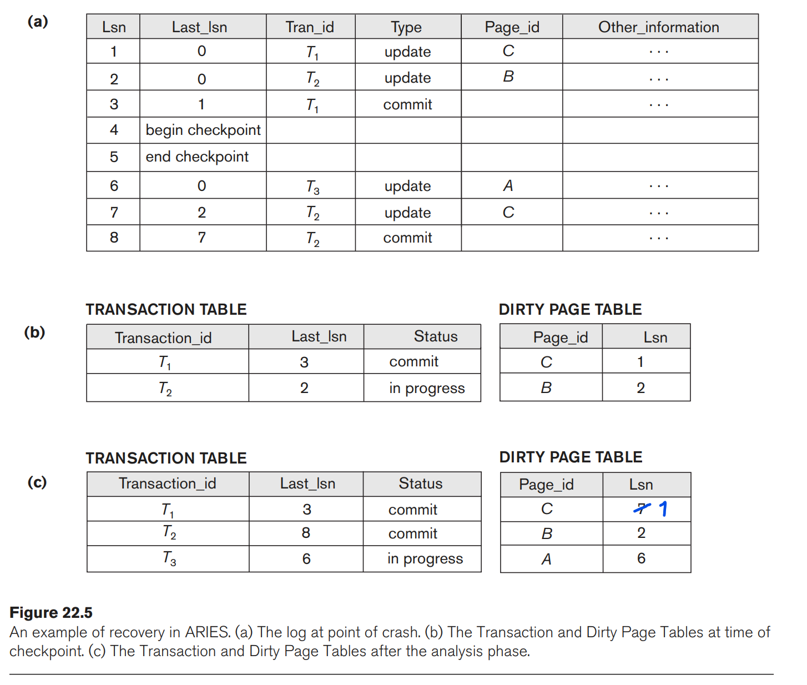

<!DOCTYPE html>
<html>
  <head>
    <!-- Katex -->
    <link rel="stylesheet" href=
        "https://cdn.jsdelivr.net/npm/katex/dist/katex.min.css"/>

    <!-- GitHub Markdown Styles -->
    <link rel="stylesheet" href=
        "https://cdn.jsdelivr.net/github-markdown-css/2.2.1/github-markdown.css"/>

    <title>index.md</title>
    <link rel="icon" type="image/x-icon" href="../../favicon.png"/>

    <!-- Custom Styles -->
    <link rel="stylesheet" href="../../styles.css">
  
  </head>

  <body class="markdown-body">
    <div class="page flex-row">
      <div class="col links">
        
<p><h4><a href="../index.html">courses/</a><a href="./index.html">tdt4145 ✨</a>
</h4></p>
<ul>
<li>📂 <a href="./assets/index.html">assets</a></li>
<li>📂 <a href="./lectures/index.html">lectures</a></li>
</ul>
<p><h4>Table of Contents</h4></p>
<nav class="table-of-contents"><ol><li><a href="#tdt4145---data-modelling%2C-databases-and-database-management-systems">TDT4145 - Data Modelling, Databases and Database Management Systems</a><ol><li><a href="#undervisningsmateriell">Undervisningsmateriell</a></li><li><a href="#datamodellering">Datamodellering</a><ol><li><a href="#er-modellering">ER-modellering</a><ol><li><a href="#entiteter-og-entitetsklasser">Entiteter og entitetsklasser</a></li><li><a href="#attributter">Attributter</a></li><li><a href="#relasjoner-og-relasjonsklasser">Relasjoner og relasjonsklasser</a><ol><li><a href="#kardinalitet-og-strukturelle-restriksjoner">Kardinalitet og strukturelle restriksjoner</a></li></ol></li></ol></li><li><a href="#forekomstdiagram">Forekomstdiagram</a></li><li><a href="#eer-modellering">EER-modellering</a><ol><li><a href="#spesialisering-og-generalisering">Spesialisering og generalisering</a></li><li><a href="#kategorier">Kategorier</a></li></ol></li></ol></li><li><a href="#relasjonsdatabaser">Relasjonsdatabaser</a><ol><li><a href="#mapping-fra-er-modell">Mapping fra ER-modell</a></li><li><a href="#mapping-fra-eer-modell">Mapping fra EER-modell</a></li></ol></li><li><a href="#relasjonsalgebra">Relasjonsalgebra</a><ol><li><a href="#operasjoner">Operasjoner</a></li><li><a href="#gruppering-og-aggregering">Gruppering og aggregering</a></li></ol></li><li><a href="#sql">SQL</a><ol><li><a href="#opprette-data">Opprette data</a><ol><li><a href="#fremmedn%C3%B8kkelrestriksjoner">Fremmednøkkelrestriksjoner</a></li></ol></li><li><a href="#manipulere-data">Manipulere data</a><ol><li><a href="#sette-inn-data---insert-into">Sette inn data - INSERT INTO</a></li><li><a href="#oppdatere-data---update">Oppdatere data - UPDATE</a></li><li><a href="#slette-data---delete">Slette data - DELETE</a></li></ol></li><li><a href="#sp%C3%B8rringer---select">Spørringer - SELECT</a><ol><li><a href="#spesifisere-krav---where">Spesifisere krav - WHERE</a></li><li><a href="#fjerne-duplikater---distinct">Fjerne duplikater - DISTINCT</a></li><li><a href="#sortering---order-by">Sortering - ORDER BY</a></li><li><a href="#strengsammenlikning---like">Strengsammenlikning - LIKE</a></li><li><a href="#data-fra-flere-tabeller%3A-kartesisk-produkt-og-ulike-typer-join">Data fra flere tabeller: kartesisk produkt og ulike typer join</a></li><li><a href="#aggregering">Aggregering</a></li><li><a href="#gruppering---group-by">Gruppering - GROUP BY</a><ol><li><a href="#betingelse-etter-gruppering---having">Betingelse etter gruppering - HAVING</a></li></ol></li><li><a href="#n%C3%B8stede-sp%C3%B8rringer">Nøstede spørringer</a><ol><li><a href="#sammenlikningsoperatorer">Sammenlikningsoperatorer</a></li><li><a href="#any%2C-all">ANY, ALL</a></li><li><a href="#in%2C-not-in">IN, NOT IN</a></li><li><a href="#exists">EXISTS</a></li><li><a href="#union%2C-snitt-og-differanse">Union, snitt og differanse</a></li><li><a href="#n%C3%B8stede-sp%C3%B8rringer-i-from-delen">Nøstede spørringer i FROM-delen</a></li></ol></li><li><a href="#virtuelle-tabeller---view">Virtuelle tabeller - VIEW</a></li></ol></li></ol></li><li><a href="#normalisering">Normalisering</a><ol><li><a href="#restriksjoner">Restriksjoner</a></li><li><a href="#funksjonelle-avhengigheter">Funksjonelle avhengigheter</a><ol><li><a href="#utledningsregler">Utledningsregler</a></li><li><a href="#full-funksjonell-avhengighet">Full funksjonell avhengighet</a></li><li><a href="#fler-verdi-avhengigheter---mvd">Fler-verdi-avhengigheter - MVD</a><ol><li><a href="#trivielle-fler-verdi-avhengigheter">Trivielle fler-verdi-avhengigheter</a></li></ol></li></ol></li><li><a href="#tillukning">Tillukning</a></li><li><a href="#n%C3%B8kler">Nøkler</a></li><li><a href="#normalformer">Normalformer</a><ol><li><a href="#f%C3%B8rste-normalform---1nf">Første normalform - 1NF</a></li><li><a href="#andre-normalform---2nf">Andre normalform - 2NF</a></li><li><a href="#tredje-normalform---3nf">Tredje normalform - 3NF</a></li><li><a href="#boyce-codd-normalform---bcnf">Boyce-Codd normalform - BCNF</a></li><li><a href="#fjerde-normalform---4nf">Fjerde normalform - 4NF</a></li></ol></li><li><a href="#dekomponeringskriterier">Dekomponeringskriterier</a><ol><li><a href="#regler-for-tapsl%C3%B8s-join">Regler for tapsløs join</a></li></ol></li></ol></li><li><a href="#part-2%3A-summary">Part 2: Summary</a></li><li><a href="#18-strategies-for-query-processing">18 Strategies for Query Processing</a><ol><li><a href="#algorithms-for-external-sorting">Algorithms for External Sorting</a></li><li><a href="#algorithms-for-select-operation">Algorithms for SELECT Operation</a><ol><li><a href="#search-methods-for-conjunctive-selection">Search Methods for Conjunctive Selection</a></li><li><a href="#search-methods-for-disjunctive-selection">Search Methods for Disjunctive Selection</a></li><li><a href="#estimating-the-selectivity-of-a-condition">Estimating the Selectivity of a Condition</a></li></ol></li><li><a href="#implementing-the-join-operation">Implementing the JOIN Operation</a><ol><li><a href="#methods-for-implementing-joins">Methods for Implementing Joins</a></li><li><a href="#how-buffer-space-and-choice-of-outer-loop-file-affect-performance-of-nested-loop-join">How Buffer Space and Choice of Outer-Loop File Affect Performance of Nested-Loop Join</a></li></ol></li></ol></li><li><a href="#20-introduction-to-transaction-processing-concepts-and-theory">20 Introduction to Transaction Processing Concepts and Theory</a><ol><li><a href="#introduction-to-transaction-processing">Introduction to Transaction Processing</a><ol><li><a href="#single-user-versus-multiuser-systems">Single-User versus Multiuser Systems</a></li><li><a href="#transactions%2C-database-items%2C-read-and-write-operations%2C-and-dbms-buffers">Transactions, Database Items, Read and Write Operations, and DBMS Buffers</a></li><li><a href="#why-concurrency-control-is-needed">Why Concurrency Control Is Needed</a></li><li><a href="#why-recovery-is-needed">Why Recovery Is Needed</a></li></ol></li><li><a href="#transaction-and-system-concepts">Transaction and System Concepts</a><ol><li><a href="#transaction-states-and-additional-operations">Transaction States and Additional Operations</a></li><li><a href="#the-system-log">The System Log</a></li><li><a href="#commit-point-of-a-transaction">Commit Point of a Transaction</a></li><li><a href="#dbms-specific-buffer-replacement-policies">DBMS-Specific Buffer Replacement Policies</a></li><li><a href="#desirable-properties-of-transactions">Desirable Properties of Transactions</a></li></ol></li><li><a href="#characterizing-schedules-based-on-recoverability">Characterizing Schedules Based on Recoverability</a><ol><li><a href="#schedules-(histories)-of-transactions">Schedules (Histories) of Transactions</a></li><li><a href="#characterizing-schedules-based-on-recoverability-1">Characterizing Schedules Based on Recoverability</a></li></ol></li><li><a href="#characterizing-schedules-based-on-serializability">Characterizing Schedules Based on Serializability</a><ol><li><a href="#serial%2C-nonserial%2C-and-conflict-serializable-schedules">Serial, Nonserial, and Conflict-Serializable Schedules</a></li><li><a href="#testing-for-serializability-of-a-schedule">Testing for Serializability of a Schedule</a></li><li><a href="#how-serializability-is-used-for-concurrency-control">How Serializability Is Used for Concurrency Control</a></li></ol></li><li><a href="#transaction-support-in-sql">Transaction Support in SQL</a><ol><li><a href="#snapshot-isolation.">Snapshot Isolation.</a></li></ol></li></ol></li><li><a href="#21-concurrency-control-techniques">21 Concurrency Control Techniques</a><ol><li><a href="#two-phase-locking-techniques-for-concurrency-control">Two-Phase Locking Techniques for Concurrency Control</a><ol><li><a href="#types-of-locks-and-system-lock-tables">Types of Locks and System Lock Tables</a></li><li><a href="#guaranteeing-serializability-by-two-phase-locking">Guaranteeing Serializability by Two-Phase Locking</a><ol><li><a href="#basic%2C-conservative%2C-strict%2C-and-rigorous-two-phase-locking.">Basic, Conservative, Strict, and Rigorous Two-Phase Locking.</a></li></ol></li><li><a href="#dealing-with-deadlock-and-starvation">Dealing with Deadlock and Starvation</a></li><li><a href="#multiversion-concurrency-control-techniques">Multiversion Concurrency Control Techniques</a></li></ol></li></ol></li><li><a href="#22-database-recovery-techniques">22 Database Recovery Techniques</a><ol><li><a href="#recovery-concepts">Recovery Concepts</a><ol><li><a href="#recovery-outline-and-categorization-of-recovery-algorithms">Recovery Outline and Categorization of Recovery Algorithms</a></li><li><a href="#caching-(buffering)-of-disk-blocks">Caching (Buffering) of Disk Blocks</a></li><li><a href="#write-ahead-logging%2C-steal%2Fno-steal%2C-and-force%2Fno-force">Write-Ahead Logging, Steal/No-Steal, and Force/No-Force</a></li><li><a href="#checkpoints-in-the-system-log-and-fuzzy-checkpointing">Checkpoints in the System Log and Fuzzy Checkpointing</a></li><li><a href="#transaction-rollback-and-cascading-rollback">Transaction Rollback and Cascading Rollback</a></li></ol></li><li><a href="#no-undo%2Fredo-recovery-based-on-deferred-update">NO-UNDO/REDO Recovery Based on Deferred Update</a></li><li><a href="#recovery-techniques-based-on-immediate-update">Recovery Techniques Based on Immediate Update</a></li><li><a href="#shadow-paging">Shadow Paging</a></li><li><a href="#the-aries-recovery-algorithm">The ARIES Recovery Algorithm</a></li></ol></li></ol></li></ol></nav>
      </div>
      <article class="col content">
        
<h1 id="tdt4145---data-modelling%2C-databases-and-database-management-systems" tabindex="-1">TDT4145 - Data Modelling, Databases and Database Management Systems</h1>
<h2 id="undervisningsmateriell" tabindex="-1">Undervisningsmateriell</h2>
<ul>
<li><a href="assets/ER_notasjon_2017.pdf">ER notasjon</a></li>
<li><a href="assets/dbms-internals.pdf">DBMS internals</a></li>
</ul>
<h2 id="datamodellering" tabindex="-1">Datamodellering</h2>
<table>
<thead>
<tr>
<th>Begrep</th>
<th>Forklaring</th>
</tr>
</thead>
<tbody>
<tr>
<td>Miniverden</td>
<td>De konseptene fra virkeligheten som skal modelleres.</td>
</tr>
<tr>
<td>Datamodell</td>
<td>Et sett begreper for å beskrive struktur (hvilke typer data, sammenheger og restriksjoner) og operasjoner (handlinger på data: innsetting, endring, sletting og spørring)</td>
</tr>
<tr>
<td>Konseptuelle modeller</td>
<td>For å forstå og dokumentere. For eksempel ER-modeller.</td>
</tr>
<tr>
<td>Implementasjonsmodeller</td>
<td>For å realisere. For eksempel relasjonsdatabasemodeller.</td>
</tr>
<tr>
<td>Fysiske modeller</td>
<td>Kontroll på lagring og optimalisering. Disse er produktspesifikke modeller.</td>
</tr>
<tr>
<td>Database</td>
<td>En strukturert samling av relaterte data.</td>
</tr>
<tr>
<td>Informasjon</td>
<td>Data + tolkning</td>
</tr>
<tr>
<td>DBMS</td>
<td>Databasehåndteringssystem. Software som styrer lagring og tilgang på data i databasen.</td>
</tr>
<tr>
<td>Databasesystem</td>
<td>DBMS + data</td>
</tr>
<tr>
<td>Selvbeskrivende DBMS</td>
<td>Inneholder både data og beskrivelser om dataen (metadata). Dette gjøres generelt i DBMS-katalogen.</td>
</tr>
<tr>
<td>Selvbeskrivende datamodeller</td>
<td>Inkluderer databeskrivelser i selve dataen. For eksempel XML og JSON.</td>
</tr>
<tr>
<td>Program-data uavhengighet</td>
<td>En egenskap som går ut på at strukturendring i datafil ikke medfører at man må endre programmene som har tilgang til dataen.</td>
</tr>
<tr>
<td>Flerbrukersstøtte</td>
<td>Flere brukere kan hente ut og lagre data samtidig uten problemer.</td>
</tr>
<tr>
<td>Entitetsintegritet</td>
<td>Alle relasjonsskjemaer skal ha en primærnøkkel. Primærnøkler må være unike og kan ikke være <code><span class="hljs-literal">NULL</span></code>.</td>
</tr>
<tr>
<td>Referanseintegritet</td>
<td>Hvis en fremmednøkkel ikke er <code><span class="hljs-literal">NULL</span></code>, må den referere til en eksisterende rad i den tabellen den peker mot.</td>
</tr>
<tr>
<td>Databasetilstand</td>
<td>Database-forekomsten (dataene) på et gitt tidspunkt.</td>
</tr>
<tr>
<td>Konsistent databasetilstand</td>
<td>At databasen tilfredsstiller alle integritetsregler og relevante reglene fra miniverdenen.</td>
</tr>
<tr>
<td>Transaksjon</td>
<td>En serie operasjoner på en database som sammen bevarer databasens konsistens.</td>
</tr>
</tbody>
</table>
<h3 id="er-modellering" tabindex="-1">ER-modellering</h3>
<p><strong>Viktig!</strong> ER-notasjon:</p>
<p></p>
<h4 id="entiteter-og-entitetsklasser" tabindex="-1">Entiteter og entitetsklasser</h4>
<table>
<thead>
<tr>
<th>Begrep</th>
<th>Forklaring</th>
</tr>
</thead>
<tbody>
<tr>
<td>Entitet</td>
<td>Objekt som eksisterer i miniverdenen. Et element av en entitetsklasse.</td>
</tr>
<tr>
<td>Enitetsklasse</td>
<td>Mengden av alle likeartede entiteter som er av samme klasse (type) og har samme egenskaper</td>
</tr>
<tr>
<td>Svak entitetsklasse</td>
<td>En entitetsklasse der nøkkelen (delvis nøkkel) bygger på nøkkelen fra en annen <em>identifiserende entitetsklasse</em>, gjennom en <em>identifiserende relasjonsklasse</em>. Den må være eksistensavhengig av deltakelse i den identifiserende relasjonsklassen.</td>
</tr>
</tbody>
</table>
<h4 id="attributter" tabindex="-1">Attributter</h4>
<p>Attributter beskriver entiteter. Hvert attributt henter sine mulige verdier fra et domene (datatype).</p>
<table>
<thead>
<tr>
<th>Type attributt</th>
<th>Notasjon</th>
<th>Forklaring</th>
</tr>
</thead>
<tbody>
<tr>
<td>Enkel attributt (Standard)</td>
<td>Ingen</td>
<td>Attributt</td>
</tr>
<tr>
<td>Flerverdiattributt</td>
<td>Dobbel linje</td>
<td>Kan holde flere verdier</td>
</tr>
<tr>
<td>Sammensatt attributt</td>
<td>Har egne subattributter</td>
<td>Har egne subattributter</td>
</tr>
<tr>
<td>Avledet attributt</td>
<td>Stiplet linje</td>
<td>Kan avledes fra andre attributter, trenger ikke lagres eksplisitt</td>
</tr>
<tr>
<td>Nøkkelattributt</td>
<td>Understreket</td>
<td>Identifikator for entiteten</td>
</tr>
</tbody>
</table>
<h4 id="relasjoner-og-relasjonsklasser" tabindex="-1">Relasjoner og relasjonsklasser</h4>
<table>
<thead>
<tr>
<th>Begrep</th>
<th>Forklaring</th>
</tr>
</thead>
<tbody>
<tr>
<td>Relasjon</td>
<td>Sammenheng mellom to eller flere enititeter. Kan ha attributter på samme måte som entiteter. Relasjonen eksisterer ikke uten de entitetene som deltar.</td>
</tr>
<tr>
<td>Relasjonsklasse</td>
<td>Mengden av likeartede relasjoner mellom samme enitetsklasser.</td>
</tr>
<tr>
<td>Rekursiv relasjonsklasse</td>
<td>Relasjonsklasser der samme entitetsklasse inngår flere ganger. En entitetsklasse kan da ha flere roller i relasjonsklassen.</td>
</tr>
</tbody>
</table>
<h5 id="kardinalitet-og-strukturelle-restriksjoner" tabindex="-1">Kardinalitet og strukturelle restriksjoner</h5>
<p>Foreleser i emnet foretrekker strukturelle restriksjoner</p>
<table>
<thead>
<tr>
<th>Begrep</th>
<th>Forklaring</th>
</tr>
</thead>
<tbody>
<tr>
<td>Kardinalitet</td>
<td>Ved bruk av 1 eller N på hver side av relasjonen antydes om relasjonen er en-til-en, en-til-mange eller mange-til-mange. Noteres på <em>motsatt side</em> av relasjonen som den aktuelle entiteten. Enkel strek antyder delvis deltagelse (entitetene må ikke delta i relasjonen), dobbel strek antyder total deltagelse (entitetene må delta i relasjonen minst en gang).</td>
</tr>
<tr>
<td>Strukturell restriksjon (<em>min</em>, <em>max</em>)</td>
<td>Antyder at en entitet opptrer i relasjonen minst <em>min</em> ganger og maks <em>max</em> ganger. Vanlige restriksjoner er (0, 1), (1, 1), (0, n) og (1, n). Noteres på <em>samme side</em> av relasjonen som den aktuelle entiteten.</td>
</tr>
</tbody>
</table>
<h3 id="forekomstdiagram" tabindex="-1">Forekomstdiagram</h3>
<h3 id="eer-modellering" tabindex="-1">EER-modellering</h3>
<h4 id="spesialisering-og-generalisering" tabindex="-1">Spesialisering og generalisering</h4>
<table>
<thead>
<tr>
<th>Begrep</th>
<th>Forklaring</th>
</tr>
</thead>
<tbody>
<tr>
<td>Superklasse-subklasserelasjon</td>
<td>Subklassene <em>arver</em> egenskapene (attributter og relasjoner) til superklassen, men kan også ha særegne attributter og relasjoner. En subklasse er en delmengde av den tilhørende superklassen.</td>
</tr>
<tr>
<td>Total spesialisering</td>
<td>Alle entiteter i superklassen må delta i minst en subklasse. Noteres med dobbel strek.</td>
</tr>
<tr>
<td>Overlappende subklasser</td>
<td>En entitet i superklassen kan delta i flere enn en subklasse. Noteres med O eller mangel på notasjon.</td>
</tr>
<tr>
<td>Disjunkte subklasser</td>
<td>En entitet i superklassen kan <em>ikke</em> delta i flere enn en subklasse. Noteres med D.</td>
</tr>
</tbody>
</table>
<table>
<thead>
<tr>
<th>En entitet kan delta i</th>
<th><strong>Disjunkt</strong></th>
<th><strong>Overlappende</strong></th>
</tr>
</thead>
<tbody>
<tr>
<td><strong>Delvis</strong></td>
<td>0-1 subklasser</td>
<td>0-n subklasser</td>
</tr>
<tr>
<td><strong>Total</strong></td>
<td>1 subklasse</td>
<td>1-n subklasser</td>
</tr>
</tbody>
</table>
<h4 id="kategorier" tabindex="-1">Kategorier</h4>
<p>En kategori representerer en samling av entiteter som er en delmenge av entitetene fra ulike entitetsklasser (kategorienes superklasser). Blir også kalt en union-type. En kategori kan være delvis eller total. En total kategori vil inneholde alle entitetene i unionen av superklassene og markeres med dobbelt strek mellom kategorien og sirkelen.</p>
<h2 id="relasjonsdatabaser" tabindex="-1">Relasjonsdatabaser</h2>
<p>Relasjonersdatabaser er bygd opp av tabeller der kolonner angir attributter og rader angir entiteter eller relasjoner.</p>
<h3 id="mapping-fra-er-modell" tabindex="-1">Mapping fra ER-modell</h3>
<table>
<thead>
<tr>
<th>Konsept</th>
<th>Hvordan mappe</th>
</tr>
</thead>
<tbody>
<tr>
<td>Regulære entitetsklasser</td>
<td>Entitetsklassen får egen tabell. Attributter blir kolonner. Sammensatte attributter splittes opp. Primærnøkkel fra ER-modell brukes.</td>
</tr>
<tr>
<td>Svake entitetstyper</td>
<td>Legger til primærnøkkel (fremmednøkkel) fra identifiserende entitetsklasser, sammen med klassens delvise nøkkel. Ellers likt.</td>
</tr>
<tr>
<td>Binære 1:1 relasjoner</td>
<td>Fremmednøkkel kan legges i en av entitetsklassetabellene, eller så kan relasjonen få egen tabell.</td>
</tr>
<tr>
<td>Binære 1:N relasjoner</td>
<td>Fremmednøkkel kan legges i entiteten med kardinalitet 1, eller så kan relasjonen få egen tabell.</td>
</tr>
<tr>
<td>Binære N:N relasjoner</td>
<td>Relasjonen får egen tabell.</td>
</tr>
<tr>
<td>Flerverdiattributter</td>
<td>Får egen tabell med fremmednøkkel mot entitetsklassen.</td>
</tr>
<tr>
<td>N-ære relasjonsklasser (N &gt; 2)</td>
<td>Får egen tabell med fremmednøkler mot alle tilhørende entitetsklasser.</td>
</tr>
</tbody>
</table>
<h3 id="mapping-fra-eer-modell" tabindex="-1">Mapping fra EER-modell</h3>
<table>
<thead>
<tr>
<th>Konsept</th>
<th>Hvordan mappe</th>
</tr>
</thead>
<tbody>
<tr>
<td>Spesialisering/generalisering</td>
<td>A) Separate tabeller for superklasse og alle subklasser. Kommentar: Data om en entitet spredt over flere tabeller, må bruke join. B) Separate tabeller for subklasser som inkluderer attributter fra superklassen. Kommentar: Krever total og disjunkt spesialisering. C) En tabell som inkluderer attributter fra superklassen og alle subklasser. Kommentar: Ved disjunkt spesialisering kreves et type-attributt. Ved overlappende spesialisering kreves en boolsk type-vektor (en kolonne per type).</td>
</tr>
<tr>
<td>Kategorier</td>
<td>En tabell for kategori-entitetsklassen, med typeattributt. Superklassene har som regel ulike nøkler, i tillegg til en surrogat(fremmed)nøkkel mot kategorien.</td>
</tr>
</tbody>
</table>
<h2 id="relasjonsalgebra" tabindex="-1">Relasjonsalgebra</h2>
<p>I relasjonsalgebra bruker vi operasjoner for å manipulere relasjonsdatabasetabeller. Merk at en rad her er en tuppel og en tabell er en mengde av tuppler. Vi vil altså ikke ha duplikater. Operatorene er lukket over tabeller (både input og output er mengder).</p>
<h3 id="operasjoner" tabindex="-1">Operasjoner</h3>
<table>
<thead>
<tr>
<th>Operasjon</th>
<th>Operator</th>
<th>Forklaring</th>
</tr>
</thead>
<tbody>
<tr>
<td>Seleksjon</td>
<td><span class="katex"><span class="katex-mathml"><math xmlns="http://www.w3.org/1998/Math/MathML"><semantics><mrow><msub><mi>σ</mi><mtext>Betingelse</mtext></msub><mo stretchy="false">(</mo><mtext>A</mtext><mo stretchy="false">)</mo></mrow><annotation encoding="application/x-tex">\sigma_{\text{Betingelse}}(\text{A})</annotation></semantics></math></span><span class="katex-html" aria-hidden="true"><span class="base"><span class="strut" style="height:1.036108em;vertical-align:-0.286108em;"></span><span class="mord"><span class="mord mathnormal" style="margin-right:0.03588em;">σ</span><span class="msupsub"><span class="vlist-t vlist-t2"><span class="vlist-r"><span class="vlist" style="height:0.3361079999999999em;"><span style="top:-2.5500000000000003em;margin-left:-0.03588em;margin-right:0.05em;"><span class="pstrut" style="height:2.7em;"></span><span class="sizing reset-size6 size3 mtight"><span class="mord mtight"><span class="mord text mtight"><span class="mord mtight">Betingelse</span></span></span></span></span></span><span class="vlist-s">​</span></span><span class="vlist-r"><span class="vlist" style="height:0.286108em;"><span></span></span></span></span></span></span><span class="mopen">(</span><span class="mord text"><span class="mord">A</span></span><span class="mclose">)</span></span></span></span></td>
<td>Returnerer radene i A som oppfyller betingelsen.</td>
</tr>
<tr>
<td>Projeksjon</td>
<td><span class="katex"><span class="katex-mathml"><math xmlns="http://www.w3.org/1998/Math/MathML"><semantics><mrow><msub><mi mathvariant="normal">Π</mi><mtext>Kolonnenavn...</mtext></msub><mo stretchy="false">(</mo><mtext>A</mtext><mo stretchy="false">)</mo></mrow><annotation encoding="application/x-tex">\Pi_{\text{Kolonnenavn...}}(\text{A})</annotation></semantics></math></span><span class="katex-html" aria-hidden="true"><span class="base"><span class="strut" style="height:1em;vertical-align:-0.25em;"></span><span class="mord"><span class="mord">Π</span><span class="msupsub"><span class="vlist-t vlist-t2"><span class="vlist-r"><span class="vlist" style="height:0.33610799999999996em;"><span style="top:-2.5500000000000003em;margin-left:0em;margin-right:0.05em;"><span class="pstrut" style="height:2.7em;"></span><span class="sizing reset-size6 size3 mtight"><span class="mord mtight"><span class="mord text mtight"><span class="mord mtight">Kolonnenavn...</span></span></span></span></span></span><span class="vlist-s">​</span></span><span class="vlist-r"><span class="vlist" style="height:0.15em;"><span></span></span></span></span></span></span><span class="mopen">(</span><span class="mord text"><span class="mord">A</span></span><span class="mclose">)</span></span></span></span></td>
<td>Returnerer de oppgitte kolonnene i A.</td>
</tr>
<tr>
<td>Union</td>
<td><span class="katex"><span class="katex-mathml"><math xmlns="http://www.w3.org/1998/Math/MathML"><semantics><mrow><mo>∪</mo><mo stretchy="false">(</mo><mtext>A, B</mtext><mo stretchy="false">)</mo></mrow><annotation encoding="application/x-tex">\cup(\text{A, B})</annotation></semantics></math></span><span class="katex-html" aria-hidden="true"><span class="base"><span class="strut" style="height:1em;vertical-align:-0.25em;"></span><span class="mord">∪</span><span class="mopen">(</span><span class="mord text"><span class="mord">A, B</span></span><span class="mclose">)</span></span></span></span></td>
<td>Returnerer unionen av A og B. Krever like kolonnenavn.</td>
</tr>
<tr>
<td>Snitt</td>
<td><span class="katex"><span class="katex-mathml"><math xmlns="http://www.w3.org/1998/Math/MathML"><semantics><mrow><mo>∩</mo><mo stretchy="false">(</mo><mtext>A, B</mtext><mo stretchy="false">)</mo></mrow><annotation encoding="application/x-tex">\cap(\text{A, B})</annotation></semantics></math></span><span class="katex-html" aria-hidden="true"><span class="base"><span class="strut" style="height:1em;vertical-align:-0.25em;"></span><span class="mord">∩</span><span class="mopen">(</span><span class="mord text"><span class="mord">A, B</span></span><span class="mclose">)</span></span></span></span></td>
<td>Returnerer snittet av A og B. Krever like kolonnenavn.</td>
</tr>
<tr>
<td>Differanse</td>
<td><span class="katex"><span class="katex-mathml"><math xmlns="http://www.w3.org/1998/Math/MathML"><semantics><mrow><mo>−</mo><mo stretchy="false">(</mo><mtext>A, B</mtext><mo stretchy="false">)</mo></mrow><annotation encoding="application/x-tex">-(\text{A, B})</annotation></semantics></math></span><span class="katex-html" aria-hidden="true"><span class="base"><span class="strut" style="height:1em;vertical-align:-0.25em;"></span><span class="mord">−</span><span class="mopen">(</span><span class="mord text"><span class="mord">A, B</span></span><span class="mclose">)</span></span></span></span></td>
<td>Returnerer radene i A som ikke er i B. Krever like kolonnenavn.</td>
</tr>
<tr>
<td>Kartesisk produkt</td>
<td><span class="katex"><span class="katex-mathml"><math xmlns="http://www.w3.org/1998/Math/MathML"><semantics><mrow><mtext>X</mtext><mo stretchy="false">(</mo><mtext>A, B</mtext><mo stretchy="false">)</mo></mrow><annotation encoding="application/x-tex">\text{X}(\text{A, B})</annotation></semantics></math></span><span class="katex-html" aria-hidden="true"><span class="base"><span class="strut" style="height:1em;vertical-align:-0.25em;"></span><span class="mord text"><span class="mord">X</span></span><span class="mopen">(</span><span class="mord text"><span class="mord">A, B</span></span><span class="mclose">)</span></span></span></span></td>
<td>Kombinerer alle rader i A med alle rader i B.</td>
</tr>
<tr>
<td>Indre join</td>
<td><span class="katex"><span class="katex-mathml"><math xmlns="http://www.w3.org/1998/Math/MathML"><semantics><mrow><msub><mo>⋈</mo><mtext>Betingelse</mtext></msub><mo stretchy="false">(</mo><mtext>A, B</mtext><mo stretchy="false">)</mo></mrow><annotation encoding="application/x-tex">\Join_{\text{Betingelse}}(\text{A, B})</annotation></semantics></math></span><span class="katex-html" aria-hidden="true"><span class="base"><span class="strut" style="height:0.7911079999999999em;vertical-align:-0.286108em;"></span><span class="mrel"><span class="mrel">⋈</span><span class="msupsub"><span class="vlist-t vlist-t2"><span class="vlist-r"><span class="vlist" style="height:0.3361079999999999em;"><span style="top:-2.5500000000000003em;margin-left:0em;margin-right:0.05em;"><span class="pstrut" style="height:2.7em;"></span><span class="sizing reset-size6 size3 mtight"><span class="mord mtight"><span class="mord text mtight"><span class="mord mtight">Betingelse</span></span></span></span></span></span><span class="vlist-s">​</span></span><span class="vlist-r"><span class="vlist" style="height:0.286108em;"><span></span></span></span></span></span></span><span class="mspace" style="margin-right:0.2777777777777778em;"></span></span><span class="base"><span class="strut" style="height:1em;vertical-align:-0.25em;"></span><span class="mopen">(</span><span class="mord text"><span class="mord">A, B</span></span><span class="mclose">)</span></span></span></span></td>
<td>Kombinerer radene i A og B som sammen oppfyller betingelsen.</td>
</tr>
<tr>
<td>Naturlig join</td>
<td><span class="katex"><span class="katex-mathml"><math xmlns="http://www.w3.org/1998/Math/MathML"><semantics><mrow><mo>∗</mo><mo stretchy="false">(</mo><mtext>A, B</mtext><mo stretchy="false">)</mo></mrow><annotation encoding="application/x-tex">*(\text{A, B})</annotation></semantics></math></span><span class="katex-html" aria-hidden="true"><span class="base"><span class="strut" style="height:1em;vertical-align:-0.25em;"></span><span class="mord">∗</span><span class="mopen">(</span><span class="mord text"><span class="mord">A, B</span></span><span class="mclose">)</span></span></span></span></td>
<td>Kombinerer radene i A og B der alle kolonner i A og B med samme navn også har samme verdi.</td>
</tr>
<tr>
<td>Venstre ytre join</td>
<td><span class="katex"><span class="katex-mathml"><math xmlns="http://www.w3.org/1998/Math/MathML"><semantics><mrow><mo>=</mo><msub><mo>⋈</mo><mtext>Betingelse</mtext></msub><mo stretchy="false">(</mo><mtext>A, B</mtext><mo stretchy="false">)</mo></mrow><annotation encoding="application/x-tex">=\Join_{\text{Betingelse}}(\text{A, B})</annotation></semantics></math></span><span class="katex-html" aria-hidden="true"><span class="base"><span class="strut" style="height:0.36687em;vertical-align:0em;"></span><span class="mrel">=</span></span><span class="base"><span class="strut" style="height:0.7911079999999999em;vertical-align:-0.286108em;"></span><span class="mrel"><span class="mrel">⋈</span><span class="msupsub"><span class="vlist-t vlist-t2"><span class="vlist-r"><span class="vlist" style="height:0.3361079999999999em;"><span style="top:-2.5500000000000003em;margin-left:0em;margin-right:0.05em;"><span class="pstrut" style="height:2.7em;"></span><span class="sizing reset-size6 size3 mtight"><span class="mord mtight"><span class="mord text mtight"><span class="mord mtight">Betingelse</span></span></span></span></span></span><span class="vlist-s">​</span></span><span class="vlist-r"><span class="vlist" style="height:0.286108em;"><span></span></span></span></span></span></span><span class="mspace" style="margin-right:0.2777777777777778em;"></span></span><span class="base"><span class="strut" style="height:1em;vertical-align:-0.25em;"></span><span class="mopen">(</span><span class="mord text"><span class="mord">A, B</span></span><span class="mclose">)</span></span></span></span></td>
<td>Kombinerer radene i A og B som sammen oppfyller betingelsen, men inkluderer også resten av radene i A (med <code><span class="hljs-literal">NULL</span></code>-verdier i nye kolonner).</td>
</tr>
<tr>
<td>Høyre ytre join</td>
<td><span class="katex"><span class="katex-mathml"><math xmlns="http://www.w3.org/1998/Math/MathML"><semantics><mrow><mo>⋈</mo><msub><mo>=</mo><mtext>Betingelse</mtext></msub><mo stretchy="false">(</mo><mtext>A, B</mtext><mo stretchy="false">)</mo></mrow><annotation encoding="application/x-tex">\Join=_{\text{Betingelse}}(\text{A, B})</annotation></semantics></math></span><span class="katex-html" aria-hidden="true"><span class="base"><span class="strut" style="height:0.51em;vertical-align:-0.005em;"></span><span class="mrel">⋈</span></span><span class="base"><span class="strut" style="height:0.652978em;vertical-align:-0.286108em;"></span><span class="mrel"><span class="mrel">=</span><span class="msupsub"><span class="vlist-t vlist-t2"><span class="vlist-r"><span class="vlist" style="height:0.3361079999999999em;"><span style="top:-2.5500000000000003em;margin-left:0em;margin-right:0.05em;"><span class="pstrut" style="height:2.7em;"></span><span class="sizing reset-size6 size3 mtight"><span class="mord mtight"><span class="mord text mtight"><span class="mord mtight">Betingelse</span></span></span></span></span></span><span class="vlist-s">​</span></span><span class="vlist-r"><span class="vlist" style="height:0.286108em;"><span></span></span></span></span></span></span><span class="mspace" style="margin-right:0.2777777777777778em;"></span></span><span class="base"><span class="strut" style="height:1em;vertical-align:-0.25em;"></span><span class="mopen">(</span><span class="mord text"><span class="mord">A, B</span></span><span class="mclose">)</span></span></span></span></td>
<td>Kombinerer radene i A og B som sammen oppfyller betingelsen, men inkluderer også resten av radene i B (med <code><span class="hljs-literal">NULL</span></code>-verdier i nye kolonner).</td>
</tr>
<tr>
<td>Full ytre join</td>
<td><span class="katex"><span class="katex-mathml"><math xmlns="http://www.w3.org/1998/Math/MathML"><semantics><mrow><mo>=</mo><mo>⋈</mo><msub><mo>=</mo><mtext>Betingelse</mtext></msub><mo stretchy="false">(</mo><mtext>A, B</mtext><mo stretchy="false">)</mo></mrow><annotation encoding="application/x-tex">=\Join=_{\text{Betingelse}}(\text{A, B})</annotation></semantics></math></span><span class="katex-html" aria-hidden="true"><span class="base"><span class="strut" style="height:0.36687em;vertical-align:0em;"></span><span class="mrel">=</span></span><span class="base"><span class="strut" style="height:0.51em;vertical-align:-0.005em;"></span><span class="mrel">⋈</span></span><span class="base"><span class="strut" style="height:0.652978em;vertical-align:-0.286108em;"></span><span class="mrel"><span class="mrel">=</span><span class="msupsub"><span class="vlist-t vlist-t2"><span class="vlist-r"><span class="vlist" style="height:0.3361079999999999em;"><span style="top:-2.5500000000000003em;margin-left:0em;margin-right:0.05em;"><span class="pstrut" style="height:2.7em;"></span><span class="sizing reset-size6 size3 mtight"><span class="mord mtight"><span class="mord text mtight"><span class="mord mtight">Betingelse</span></span></span></span></span></span><span class="vlist-s">​</span></span><span class="vlist-r"><span class="vlist" style="height:0.286108em;"><span></span></span></span></span></span></span><span class="mspace" style="margin-right:0.2777777777777778em;"></span></span><span class="base"><span class="strut" style="height:1em;vertical-align:-0.25em;"></span><span class="mopen">(</span><span class="mord text"><span class="mord">A, B</span></span><span class="mclose">)</span></span></span></span></td>
<td>Kombinerer radene i A og B som sammen oppfyller betingelsen, men inkluderer også resten av radene i A og B (med <code><span class="hljs-literal">NULL</span></code>-verdier i nye kolonner).</td>
</tr>
<tr>
<td>Omdøping</td>
<td><span class="katex"><span class="katex-mathml"><math xmlns="http://www.w3.org/1998/Math/MathML"><semantics><mrow><msub><mi>ρ</mi><mrow><mi>T</mi><mi>a</mi><mi>b</mi><mi>e</mi><mi>l</mi><mi>l</mi><mi>n</mi><mi>a</mi><mi>v</mi><mi>n</mi><mo stretchy="false">(</mo><mi>A</mi><mi>t</mi><mi>t</mi><mi>r</mi><mi>i</mi><mi>b</mi><mi>u</mi><mi>t</mi><mi>t</mi><mi>n</mi><mi>a</mi><mi>v</mi><mi>n</mi><mi mathvariant="normal">.</mi><mi mathvariant="normal">.</mi><mo stretchy="false">)</mo></mrow></msub><mo stretchy="false">(</mo><mtext>A</mtext><mo stretchy="false">)</mo></mrow><annotation encoding="application/x-tex">\rho_{Tabellnavn(Attributtnavn..)}(\text{A})</annotation></semantics></math></span><span class="katex-html" aria-hidden="true"><span class="base"><span class="strut" style="height:1.1052em;vertical-align:-0.3551999999999999em;"></span><span class="mord"><span class="mord mathnormal">ρ</span><span class="msupsub"><span class="vlist-t vlist-t2"><span class="vlist-r"><span class="vlist" style="height:0.34480000000000005em;"><span style="top:-2.5198em;margin-left:0em;margin-right:0.05em;"><span class="pstrut" style="height:2.7em;"></span><span class="sizing reset-size6 size3 mtight"><span class="mord mtight"><span class="mord mathnormal mtight" style="margin-right:0.13889em;">T</span><span class="mord mathnormal mtight">a</span><span class="mord mathnormal mtight">b</span><span class="mord mathnormal mtight">e</span><span class="mord mathnormal mtight" style="margin-right:0.01968em;">l</span><span class="mord mathnormal mtight" style="margin-right:0.01968em;">l</span><span class="mord mathnormal mtight">n</span><span class="mord mathnormal mtight">a</span><span class="mord mathnormal mtight" style="margin-right:0.03588em;">v</span><span class="mord mathnormal mtight">n</span><span class="mopen mtight">(</span><span class="mord mathnormal mtight">A</span><span class="mord mathnormal mtight">t</span><span class="mord mathnormal mtight">t</span><span class="mord mathnormal mtight" style="margin-right:0.02778em;">r</span><span class="mord mathnormal mtight">i</span><span class="mord mathnormal mtight">b</span><span class="mord mathnormal mtight">u</span><span class="mord mathnormal mtight">t</span><span class="mord mathnormal mtight">t</span><span class="mord mathnormal mtight">n</span><span class="mord mathnormal mtight">a</span><span class="mord mathnormal mtight" style="margin-right:0.03588em;">v</span><span class="mord mathnormal mtight">n</span><span class="mord mtight">.</span><span class="mord mtight">.</span><span class="mclose mtight">)</span></span></span></span></span><span class="vlist-s">​</span></span><span class="vlist-r"><span class="vlist" style="height:0.3551999999999999em;"><span></span></span></span></span></span></span><span class="mopen">(</span><span class="mord text"><span class="mord">A</span></span><span class="mclose">)</span></span></span></span></td>
<td>Returnerer en ny tabell med nye kolonnenavn.</td>
</tr>
<tr>
<td>Sortering</td>
<td><span class="katex"><span class="katex-mathml"><math xmlns="http://www.w3.org/1998/Math/MathML"><semantics><mrow><mo>↑</mo><msub><mo>↓</mo><mrow><mi>A</mi><mi>t</mi><mi>t</mi><mi>r</mi><mi>i</mi><mi>b</mi><mi>u</mi><mi>t</mi><mi>t</mi><mi mathvariant="normal">.</mi><mi mathvariant="normal">.</mi></mrow></msub><mo stretchy="false">(</mo><mi>A</mi><mo stretchy="false">)</mo></mrow><annotation encoding="application/x-tex">\uparrow \downarrow_{Attributt..}(A)</annotation></semantics></math></span><span class="katex-html" aria-hidden="true"><span class="base"><span class="strut" style="height:0.8888799999999999em;vertical-align:-0.19444em;"></span><span class="mrel">↑</span></span><span class="base"><span class="strut" style="height:0.8888799999999999em;vertical-align:-0.19444em;"></span><span class="mrel"><span class="mrel">↓</span><span class="msupsub"><span class="vlist-t vlist-t2"><span class="vlist-r"><span class="vlist" style="height:0.33610799999999996em;"><span style="top:-2.5500000000000003em;margin-left:0em;margin-right:0.05em;"><span class="pstrut" style="height:2.7em;"></span><span class="sizing reset-size6 size3 mtight"><span class="mord mtight"><span class="mord mathnormal mtight">A</span><span class="mord mathnormal mtight">t</span><span class="mord mathnormal mtight">t</span><span class="mord mathnormal mtight" style="margin-right:0.02778em;">r</span><span class="mord mathnormal mtight">i</span><span class="mord mathnormal mtight">b</span><span class="mord mathnormal mtight">u</span><span class="mord mathnormal mtight">t</span><span class="mord mathnormal mtight">t</span><span class="mord mtight">.</span><span class="mord mtight">.</span></span></span></span></span><span class="vlist-s">​</span></span><span class="vlist-r"><span class="vlist" style="height:0.15em;"><span></span></span></span></span></span></span><span class="mspace" style="margin-right:0.2777777777777778em;"></span></span><span class="base"><span class="strut" style="height:1em;vertical-align:-0.25em;"></span><span class="mopen">(</span><span class="mord mathnormal">A</span><span class="mclose">)</span></span></span></span></td>
<td>Returnerer en tabell der radene er sortert etter de oppgitte attributtene. Man kan spesifisere ASC (stigende) eller DESC (synkende) rekkefølge.</td>
</tr>
</tbody>
</table>
<h3 id="gruppering-og-aggregering" tabindex="-1">Gruppering og aggregering</h3>
<p>Gjør utregninger "per gruppe".
<span class="katex"><span class="katex-mathml"><math xmlns="http://www.w3.org/1998/Math/MathML"><semantics><mrow><msub><mi>F</mi><mtext>Grupperingsattributter, Aggregeringsfunksjoner</mtext></msub><mo stretchy="false">(</mo><mi>A</mi><mo stretchy="false">)</mo></mrow><annotation encoding="application/x-tex">F_{\text{Grupperingsattributter, Aggregeringsfunksjoner}}(A)</annotation></semantics></math></span><span class="katex-html" aria-hidden="true"><span class="base"><span class="strut" style="height:1.036108em;vertical-align:-0.286108em;"></span><span class="mord"><span class="mord mathnormal" style="margin-right:0.13889em;">F</span><span class="msupsub"><span class="vlist-t vlist-t2"><span class="vlist-r"><span class="vlist" style="height:0.3361079999999999em;"><span style="top:-2.5500000000000003em;margin-left:-0.13889em;margin-right:0.05em;"><span class="pstrut" style="height:2.7em;"></span><span class="sizing reset-size6 size3 mtight"><span class="mord mtight"><span class="mord text mtight"><span class="mord mtight">Grupperingsattributter, Aggregeringsfunksjoner</span></span></span></span></span></span><span class="vlist-s">​</span></span><span class="vlist-r"><span class="vlist" style="height:0.286108em;"><span></span></span></span></span></span></span><span class="mopen">(</span><span class="mord mathnormal">A</span><span class="mclose">)</span></span></span></span>
Visualisert med graf plasseres grupperingsattributtene på venstre side og aggregeringsfunksjonene på høyre side. Man kan også definere et alias med <span class="katex"><span class="katex-mathml"><math xmlns="http://www.w3.org/1998/Math/MathML"><semantics><mrow><mtext>AS</mtext></mrow><annotation encoding="application/x-tex">\text{AS}</annotation></semantics></math></span><span class="katex-html" aria-hidden="true"><span class="base"><span class="strut" style="height:0.68333em;vertical-align:0em;"></span><span class="mord text"><span class="mord">AS</span></span></span></span></span>. Eksempel: La <span class="katex"><span class="katex-mathml"><math xmlns="http://www.w3.org/1998/Math/MathML"><semantics><mrow><mtext>A = Bilde(Fotograf, Motiv)</mtext></mrow><annotation encoding="application/x-tex">\text{A = Bilde(Fotograf, Motiv)}</annotation></semantics></math></span><span class="katex-html" aria-hidden="true"><span class="base"><span class="strut" style="height:1em;vertical-align:-0.25em;"></span><span class="mord text"><span class="mord">A = Bilde(Fotograf, Motiv)</span></span></span></span></span> Da vil <span class="katex"><span class="katex-mathml"><math xmlns="http://www.w3.org/1998/Math/MathML"><semantics><mrow><msub><mi>F</mi><mtext>Fotograf, COUNT(Motiv) AS AntallMotiver</mtext></msub><mo stretchy="false">(</mo><mi>A</mi><mo stretchy="false">)</mo></mrow><annotation encoding="application/x-tex">F_{\text{Fotograf, COUNT(Motiv) AS AntallMotiver}}(A)</annotation></semantics></math></span><span class="katex-html" aria-hidden="true"><span class="base"><span class="strut" style="height:1.1052em;vertical-align:-0.3551999999999999em;"></span><span class="mord"><span class="mord mathnormal" style="margin-right:0.13889em;">F</span><span class="msupsub"><span class="vlist-t vlist-t2"><span class="vlist-r"><span class="vlist" style="height:0.34480000000000005em;"><span style="top:-2.5198em;margin-left:-0.13889em;margin-right:0.05em;"><span class="pstrut" style="height:2.7em;"></span><span class="sizing reset-size6 size3 mtight"><span class="mord mtight"><span class="mord text mtight"><span class="mord mtight">Fotograf, COUNT(Motiv) AS AntallMotiver</span></span></span></span></span></span><span class="vlist-s">​</span></span><span class="vlist-r"><span class="vlist" style="height:0.3551999999999999em;"><span></span></span></span></span></span></span><span class="mopen">(</span><span class="mord mathnormal">A</span><span class="mclose">)</span></span></span></span> returnere en tabell <span class="katex"><span class="katex-mathml"><math xmlns="http://www.w3.org/1998/Math/MathML"><semantics><mrow><mtext>Bilde(Fotograf, AntallMotiver)</mtext></mrow><annotation encoding="application/x-tex">\text{Bilde(Fotograf, AntallMotiver)}</annotation></semantics></math></span><span class="katex-html" aria-hidden="true"><span class="base"><span class="strut" style="height:1em;vertical-align:-0.25em;"></span><span class="mord text"><span class="mord">Bilde(Fotograf, AntallMotiver)</span></span></span></span></span> med antall motiver hver fotograf har avbildet.</p>
<table>
<thead>
<tr>
<th>Funksjon</th>
<th>Forklaring</th>
</tr>
</thead>
<tbody>
<tr>
<td><span class="katex"><span class="katex-mathml"><math xmlns="http://www.w3.org/1998/Math/MathML"><semantics><mrow><mtext>SUM(attributt)</mtext></mrow><annotation encoding="application/x-tex">\text{SUM(attributt)}</annotation></semantics></math></span><span class="katex-html" aria-hidden="true"><span class="base"><span class="strut" style="height:1em;vertical-align:-0.25em;"></span><span class="mord text"><span class="mord">SUM(attributt)</span></span></span></span></span></td>
<td>Sum</td>
</tr>
<tr>
<td><span class="katex"><span class="katex-mathml"><math xmlns="http://www.w3.org/1998/Math/MathML"><semantics><mrow><mtext>AVG(attributt)</mtext></mrow><annotation encoding="application/x-tex">\text{AVG(attributt)}</annotation></semantics></math></span><span class="katex-html" aria-hidden="true"><span class="base"><span class="strut" style="height:1em;vertical-align:-0.25em;"></span><span class="mord text"><span class="mord">AVG(attributt)</span></span></span></span></span></td>
<td>Gjennomsnitt</td>
</tr>
<tr>
<td><span class="katex"><span class="katex-mathml"><math xmlns="http://www.w3.org/1998/Math/MathML"><semantics><mrow><mtext>MIN(attributt)</mtext></mrow><annotation encoding="application/x-tex">\text{MIN(attributt)}</annotation></semantics></math></span><span class="katex-html" aria-hidden="true"><span class="base"><span class="strut" style="height:1em;vertical-align:-0.25em;"></span><span class="mord text"><span class="mord">MIN(attributt)</span></span></span></span></span></td>
<td>Minimum</td>
</tr>
<tr>
<td><span class="katex"><span class="katex-mathml"><math xmlns="http://www.w3.org/1998/Math/MathML"><semantics><mrow><mtext>MAX(attributt)</mtext></mrow><annotation encoding="application/x-tex">\text{MAX(attributt)}</annotation></semantics></math></span><span class="katex-html" aria-hidden="true"><span class="base"><span class="strut" style="height:1em;vertical-align:-0.25em;"></span><span class="mord text"><span class="mord">MAX(attributt)</span></span></span></span></span></td>
<td>Maksimum</td>
</tr>
<tr>
<td><span class="katex"><span class="katex-mathml"><math xmlns="http://www.w3.org/1998/Math/MathML"><semantics><mrow><mtext>COUNT(attributt)</mtext></mrow><annotation encoding="application/x-tex">\text{COUNT(attributt)}</annotation></semantics></math></span><span class="katex-html" aria-hidden="true"><span class="base"><span class="strut" style="height:1em;vertical-align:-0.25em;"></span><span class="mord text"><span class="mord">COUNT(attributt)</span></span></span></span></span></td>
<td>Antall verdier (unntatt NULL)</td>
</tr>
<tr>
<td><span class="katex"><span class="katex-mathml"><math xmlns="http://www.w3.org/1998/Math/MathML"><semantics><mrow><mtext>COUNT(*)</mtext></mrow><annotation encoding="application/x-tex">\text{COUNT(*)}</annotation></semantics></math></span><span class="katex-html" aria-hidden="true"><span class="base"><span class="strut" style="height:1em;vertical-align:-0.25em;"></span><span class="mord text"><span class="mord">COUNT(*)</span></span></span></span></span></td>
<td>Antall rader</td>
</tr>
</tbody>
</table>
<h2 id="sql" tabindex="-1">SQL</h2>
<p>Deklarativt spørrespråk ("hva, ikke hvordan") - vi trenger ikke tenke på optimalisering. Ikke mengdeorientert som relasjonsalgebra, resultattabellene kan ha like rader - må be om at duplikater fjernes.</p>
<h3 id="opprette-data" tabindex="-1">Opprette data</h3>
<p>DDL - Data Definition Language</p>
<pre><code class="hljs language-sql"><span class="hljs-keyword">CREATE</span> <span class="hljs-keyword">TABLE</span> <span class="hljs-comment">/* opprette tabell */</span>
<span class="hljs-keyword">ALTER</span> <span class="hljs-keyword">TABLE</span> <span class="hljs-comment">/* endre tabell */</span>
<span class="hljs-keyword">DROP</span> <span class="hljs-keyword">TABLE</span> <span class="hljs-comment">/* fjerne tabell */</span>
</code></pre>
<pre><code class="hljs language-sql"><span class="hljs-keyword">CREATE</span> <span class="hljs-keyword">TABLE</span> Person (
    Pnr     <span class="hljs-type">INTEGER</span> <span class="hljs-keyword">NOT</span> <span class="hljs-keyword">NULL</span>,
    Navn    <span class="hljs-type">VARCHAR</span>(<span class="hljs-number">30</span>),
    Alder   <span class="hljs-type">INTEGER</span>,
    <span class="hljs-keyword">CONSTRAINT</span> Person_PK <span class="hljs-keyword">PRIMARY</span> KEY (Pnr));
</code></pre>
<h4 id="fremmedn%C3%B8kkelrestriksjoner" tabindex="-1">Fremmednøkkelrestriksjoner</h4>
<pre><code class="hljs language-sql"><span class="hljs-keyword">CONSTRAINT</span> RestriksjonsNavn <span class="hljs-keyword">FOREIGN</span> KEY (Attributt) <span class="hljs-keyword">REFERENCES</span> FremmedTabell(FremmedAttributt)
    <span class="hljs-keyword">ON</span> <span class="hljs-keyword">UPDATE</span> <span class="hljs-operator">&lt;&gt;</span>
    <span class="hljs-keyword">ON</span> <span class="hljs-keyword">DELETE</span> <span class="hljs-operator">&lt;&gt;</span>);
</code></pre>
<p>Alternativer for <code><span class="hljs-section">&lt;&gt;</span></code>:</p>
<ul>
<li><code><span class="hljs-attribute">NO ACTION</span></code> (default) / <code><span class="hljs-attribute">RESTRICT</span></code>: stopper handlingen</li>
<li><code><span class="hljs-built_in">SET</span> <span class="hljs-literal">NULL</span></code>: setter <code><span class="hljs-literal">NULL</span></code>-verdi</li>
<li><code><span class="hljs-attribute">CASCADE</span></code>: oppdaterer/sletter tilsvarende</li>
</ul>
<h3 id="manipulere-data" tabindex="-1">Manipulere data</h3>
<p>DML - Data Manipulation Language</p>
<h4 id="sette-inn-data---insert-into" tabindex="-1">Sette inn data - <code><span class="hljs-keyword">INSERT</span> <span class="hljs-keyword">INTO</span></code></h4>
<pre><code class="hljs language-sql"><span class="hljs-keyword">INSERT</span> <span class="hljs-keyword">INTO</span> Person <span class="hljs-keyword">VALUES</span> (<span class="hljs-number">1</span>, <span class="hljs-string">&#x27;Ola&#x27;</span>, <span class="hljs-number">24</span>);
<span class="hljs-keyword">INSERT</span> <span class="hljs-keyword">INTO</span> Person <span class="hljs-keyword">VALUES</span> (<span class="hljs-number">2</span>, <span class="hljs-string">&#x27;Kari&#x27;</span>, <span class="hljs-number">45</span>);
<span class="hljs-keyword">INSERT</span> <span class="hljs-keyword">INTO</span> Person <span class="hljs-keyword">VALUES</span> (<span class="hljs-number">3</span>, <span class="hljs-string">&#x27;Per&#x27;</span>, <span class="hljs-number">14</span>);
</code></pre>
<h4 id="oppdatere-data---update" tabindex="-1">Oppdatere data - <code><span class="hljs-attribute">UPDATE</span></code></h4>
<pre><code class="hljs language-sql"><span class="hljs-keyword">UPDATE</span> Person
<span class="hljs-keyword">SET</span> Navn <span class="hljs-operator">=</span> <span class="hljs-string">&#x27;Karianne&#x27;</span>
<span class="hljs-keyword">WHERE</span> Pnr <span class="hljs-operator">=</span> <span class="hljs-number">2</span>
</code></pre>
<h4 id="slette-data---delete" tabindex="-1">Slette data - <code><span class="hljs-attribute">DELETE</span></code></h4>
<pre><code class="hljs language-sql"><span class="hljs-keyword">DELETE</span> <span class="hljs-keyword">FROM</span> Person
<span class="hljs-keyword">WHERE</span> Navn <span class="hljs-operator">=</span> <span class="hljs-string">&#x27;Ola&#x27;</span>
</code></pre>
<h3 id="sp%C3%B8rringer---select" tabindex="-1">Spørringer - <code><span class="hljs-keyword">SELECT</span></code></h3>
<p>Merk: <code><span class="hljs-keyword">SELECT</span> *</code> angir at vi ønsker alle attributter.</p>
<pre><code class="hljs language-sql"><span class="hljs-keyword">SELECT</span> attributt, ...
<span class="hljs-keyword">FROM</span> tabell, ...
<span class="hljs-keyword">WHERE</span> betingelse
</code></pre>
<p>Relasjonsalgebraekvivalent:
<span class="katex"><span class="katex-mathml"><math xmlns="http://www.w3.org/1998/Math/MathML"><semantics><mrow><msub><mi mathvariant="normal">Π</mi><mtext>attributt, ...</mtext></msub><mo stretchy="false">(</mo><msub><mi>σ</mi><mtext>betingelse</mtext></msub><mo stretchy="false">(</mo><mtext>tabell</mtext><mo stretchy="false">)</mo><mo stretchy="false">)</mo></mrow><annotation encoding="application/x-tex">\Pi_{\text{attributt, ...}}(\sigma_{\text{betingelse}}(\text{tabell}))</annotation></semantics></math></span><span class="katex-html" aria-hidden="true"><span class="base"><span class="strut" style="height:1.036108em;vertical-align:-0.286108em;"></span><span class="mord"><span class="mord">Π</span><span class="msupsub"><span class="vlist-t vlist-t2"><span class="vlist-r"><span class="vlist" style="height:0.3361079999999999em;"><span style="top:-2.5500000000000003em;margin-left:0em;margin-right:0.05em;"><span class="pstrut" style="height:2.7em;"></span><span class="sizing reset-size6 size3 mtight"><span class="mord mtight"><span class="mord text mtight"><span class="mord mtight">attributt, ...</span></span></span></span></span></span><span class="vlist-s">​</span></span><span class="vlist-r"><span class="vlist" style="height:0.286108em;"><span></span></span></span></span></span></span><span class="mopen">(</span><span class="mord"><span class="mord mathnormal" style="margin-right:0.03588em;">σ</span><span class="msupsub"><span class="vlist-t vlist-t2"><span class="vlist-r"><span class="vlist" style="height:0.3361079999999999em;"><span style="top:-2.5500000000000003em;margin-left:-0.03588em;margin-right:0.05em;"><span class="pstrut" style="height:2.7em;"></span><span class="sizing reset-size6 size3 mtight"><span class="mord mtight"><span class="mord text mtight"><span class="mord mtight">betingelse</span></span></span></span></span></span><span class="vlist-s">​</span></span><span class="vlist-r"><span class="vlist" style="height:0.286108em;"><span></span></span></span></span></span></span><span class="mopen">(</span><span class="mord text"><span class="mord">tabell</span></span><span class="mclose">)</span><span class="mclose">)</span></span></span></span></p>
<h4 id="spesifisere-krav---where" tabindex="-1">Spesifisere krav - <code><span class="hljs-attribute">WHERE</span></code></h4>
<p>Følgende operator virker som forventet.</p>
<table>
<thead>
<tr>
<th>Operator</th>
</tr>
</thead>
<tbody>
<tr>
<td><code><span class="hljs-attribute">AND</span></code>, <code><span class="hljs-attribute">OR</span></code></td>
</tr>
<tr>
<td><code><span class="hljs-operator">=</span></code>, <code><span class="hljs-addition">!=</span></code>, <code>&lt;</code>, <code><span class="hljs-meta prompt_">&gt;</span></code>, <code>&lt;<span class="hljs-operator">=</span></code>, <code>&gt;<span class="hljs-operator">=</span></code></td>
</tr>
</tbody>
</table>
<p>Merk: <code><span class="hljs-section">&lt;&gt;</span></code> er det samme som <code><span class="hljs-addition">!=</span></code></p>
<pre><code class="hljs language-sql"><span class="hljs-comment">-- Finner personnummer og navn for personer over 20</span>
<span class="hljs-keyword">SELECT</span> Pnr, Navn
<span class="hljs-keyword">FROM</span> Person
<span class="hljs-keyword">WHERE</span> Alder <span class="hljs-operator">&gt;</span> <span class="hljs-number">20</span>
</code></pre>
<h4 id="fjerne-duplikater---distinct" tabindex="-1">Fjerne duplikater - <code><span class="hljs-built_in">DISTINCT</span></code></h4>
<pre><code class="hljs language-sql"><span class="hljs-keyword">SELECT</span> <span class="hljs-keyword">DISTINCT</span> Navn
<span class="hljs-keyword">FROM</span> Person
</code></pre>
<h4 id="sortering---order-by" tabindex="-1">Sortering - <code><span class="hljs-keyword">ORDER</span> <span class="hljs-title">BY</span></code></h4>
<pre><code class="hljs language-sql"><span class="hljs-keyword">SELECT</span> Navn
<span class="hljs-keyword">FROM</span> Person
<span class="hljs-keyword">ORDER</span> <span class="hljs-keyword">BY</span> Alder <span class="hljs-keyword">ASC</span>
</code></pre>
<h4 id="strengsammenlikning---like" tabindex="-1">Strengsammenlikning - <code><span class="hljs-attribute">LIKE</span></code></h4>
<p><code><span class="hljs-comment">%</span></code> angir vilkårlig antall tegn. <code><span class="hljs-literal">_</span></code> angir ett tegn.</p>
<pre><code class="hljs language-sql"><span class="hljs-comment">-- Finner alle attributter for personer med navn som begynner på P</span>
<span class="hljs-keyword">SELECT</span> <span class="hljs-operator">*</span>
<span class="hljs-keyword">FROM</span> Person
<span class="hljs-keyword">WHERE</span> Navn <span class="hljs-keyword">LIKE</span> <span class="hljs-string">&#x27;P%&#x27;</span>
</code></pre>
<h4 id="data-fra-flere-tabeller%3A-kartesisk-produkt-og-ulike-typer-join" tabindex="-1">Data fra flere tabeller: kartesisk produkt og ulike typer join</h4>
<p>Plasseres i <code><span class="hljs-selector-tag">FROM</span></code>-delen. Gitt tabeller <code><span class="hljs-selector-tag">A</span></code> og <code><span class="hljs-selector-tag">B</span></code>:</p>
<table>
<thead>
<tr>
<th>Funksjon</th>
<th>Beskrivelse</th>
</tr>
</thead>
<tbody>
<tr>
<td><code><span class="hljs-selector-tag">A</span>, <span class="hljs-selector-tag">B</span></code></td>
<td>Kartesisk produkt</td>
</tr>
<tr>
<td><code><span class="hljs-selector-tag">A</span> CROSS JOIN <span class="hljs-selector-tag">B</span></code></td>
<td>Kartesisk produkt</td>
</tr>
<tr>
<td><code><span class="hljs-selector-tag">A</span> NATURAL JOIN <span class="hljs-selector-tag">B</span></code></td>
<td>Natural join</td>
</tr>
<tr>
<td><code><span class="hljs-selector-tag">A</span> (INNER) JOIN <span class="hljs-selector-tag">B</span></code></td>
<td>Indre join</td>
</tr>
<tr>
<td><code><span class="hljs-selector-tag">A</span> <span class="hljs-attribute">LEFT</span> (OUTER) JOIN <span class="hljs-selector-tag">B</span></code></td>
<td>Venstre ytre join</td>
</tr>
<tr>
<td><code><span class="hljs-selector-tag">A</span> <span class="hljs-attribute">RIGHT</span> (OUTER) JOIN <span class="hljs-selector-tag">B</span></code></td>
<td>Høyre ytre join</td>
</tr>
<tr>
<td><code>A <span class="hljs-keyword">FULL</span> (<span class="hljs-keyword">OUTER</span>) <span class="hljs-keyword">JOIN</span> B</code></td>
<td>Full ytre join</td>
</tr>
</tbody>
</table>
<p>Parenteser antyder frivillig spesifisering. Se <a href="#5-relasjonsalgebra">relasjonsalgebra</a> for nærmere forklaring av funksjonene.</p>
<table>
<thead>
<tr>
<th>Betingelse</th>
<th>Beskrivelse</th>
</tr>
</thead>
<tbody>
<tr>
<td><code><span class="hljs-attribute">NATURAL</span></code></td>
<td>Natural join</td>
</tr>
<tr>
<td><code><span class="hljs-keyword">ON</span> betingelse</code></td>
<td>Spesifiserer join-betingelsen</td>
</tr>
<tr>
<td><code><span class="hljs-function"><span class="hljs-title">USING</span></span> (attributt, ...)</code></td>
<td>Spesifiserer hvilke attributter som må være like i de to tabellene</td>
</tr>
</tbody>
</table>
<pre><code class="hljs language-sql"><span class="hljs-comment">-- Finner navn på hund og eier for personer over 60 år</span>
<span class="hljs-keyword">SELECT</span> Person.Navn, Hund.Navn
<span class="hljs-keyword">FROM</span> Person <span class="hljs-keyword">INNER</span> <span class="hljs-keyword">JOIN</span> Hund <span class="hljs-keyword">ON</span> Person.Pnr <span class="hljs-operator">=</span> Hund.EierPnr
<span class="hljs-keyword">WHERE</span> Person.Alder <span class="hljs-operator">&gt;</span> <span class="hljs-number">60</span>
</code></pre>
<h4 id="aggregering" tabindex="-1">Aggregering</h4>
<p>Se <a href="#52-gruppering-og-aggregering">aggregering i relasjonsalgebra</a>.
Funksjonene ignorerer <code><span class="hljs-literal">NULL</span></code>-verdier. Med <code><span class="hljs-built_in">DISTINCT</span></code> opererer funksjonene på unike verdier. <code><span class="hljs-keyword">AS</span></code> definerer et alias.</p>
<pre><code class="hljs language-sql"><span class="hljs-comment">-- Finner snittalderen av alle personer</span>
<span class="hljs-keyword">SELECT</span> <span class="hljs-built_in">AVG</span>(Alder) <span class="hljs-keyword">AS</span> SnittAlder
<span class="hljs-keyword">FROM</span> Person
</code></pre>
<h4 id="gruppering---group-by" tabindex="-1">Gruppering - <code><span class="hljs-keyword">GROUP</span> <span class="hljs-title">BY</span></code></h4>
<p>Definerer grupper (partisjoner) av rader. Må komme etter en eventuell <code><span class="hljs-attribute">WHERE</span></code>.</p>
<pre><code class="hljs language-sql"><span class="hljs-comment">-- Finner snittalderen for hvert navn</span>
<span class="hljs-keyword">SELECT</span> <span class="hljs-built_in">AVG</span>(Alder) <span class="hljs-keyword">AS</span> SnittAlder
<span class="hljs-keyword">FROM</span> Person
<span class="hljs-keyword">GROUP</span> <span class="hljs-keyword">BY</span> Navn
</code></pre>
<h5 id="betingelse-etter-gruppering---having" tabindex="-1">Betingelse etter gruppering - <code><span class="hljs-attribute">HAVING</span></code></h5>
<p>Som <code><span class="hljs-attribute">WHERE</span></code>, men <em>etter</em> gruppering.</p>
<pre><code class="hljs language-sql"><span class="hljs-comment">-- Finner snittalderen for hvert navn, men kun hvis snittet over 60</span>
<span class="hljs-keyword">SELECT</span> Navn, <span class="hljs-built_in">AVG</span>(Alder) <span class="hljs-keyword">AS</span> SnittAlder
<span class="hljs-keyword">FROM</span> Person
<span class="hljs-keyword">GROUP</span> <span class="hljs-keyword">BY</span> Navn
<span class="hljs-keyword">HAVING</span> SnittAlder <span class="hljs-operator">&gt;</span> <span class="hljs-number">60</span>
</code></pre>
<h4 id="n%C3%B8stede-sp%C3%B8rringer" tabindex="-1">Nøstede spørringer</h4>
<p>I <code><span class="hljs-attribute">WHERE</span></code>-delen kan vi sammenlikne med resultatet fra en spørring. I <code><span class="hljs-selector-tag">FROM</span></code>-delen kan vi gjøre en ny spørring på resultatet av en spørring.</p>
<h5 id="sammenlikningsoperatorer" tabindex="-1">Sammenlikningsoperatorer</h5>
<p><code>=, !=, &lt;, &gt;, &lt;=, &gt;=</code> virker som forventet.</p>
<pre><code class="hljs language-sql"><span class="hljs-comment">-- Finner navnet til den eldste personen</span>
<span class="hljs-keyword">SELECT</span> Navn
<span class="hljs-keyword">FROM</span> Person
<span class="hljs-keyword">WHERE</span> Alder <span class="hljs-operator">=</span> (<span class="hljs-keyword">SELECT</span> <span class="hljs-built_in">MAX</span>(Alder) <span class="hljs-keyword">FROM</span> Person)
</code></pre>
<h5 id="any%2C-all" tabindex="-1"><code><span class="hljs-built_in">ANY</span></code>, <code><span class="hljs-keyword">ALL</span></code></h5>
<pre><code class="hljs language-sql"><span class="hljs-comment">-- Finner navnet til den eldste personen (alternativ måte)</span>
<span class="hljs-keyword">SELECT</span> Navn
<span class="hljs-keyword">FROM</span> Person
<span class="hljs-keyword">WHERE</span> Alder <span class="hljs-operator">&gt;=</span> <span class="hljs-keyword">ALL</span> (<span class="hljs-keyword">SELECT</span> Alder <span class="hljs-keyword">FROM</span> Person)
</code></pre>
<h5 id="in%2C-not-in" tabindex="-1"><code><span class="hljs-attribute">IN</span></code>, <code><span class="hljs-attribute">NOT IN</span></code></h5>
<pre><code class="hljs language-sql"><span class="hljs-comment">-- Finner snittalderen til forfattere</span>
<span class="hljs-keyword">SELECT</span> <span class="hljs-built_in">AVG</span>(Alder)
<span class="hljs-keyword">FROM</span> Person
<span class="hljs-keyword">WHERE</span> Navn <span class="hljs-keyword">IN</span> (<span class="hljs-keyword">SELECT</span> Forfatter <span class="hljs-keyword">FROM</span> Bok)
</code></pre>
<h5 id="exists" tabindex="-1"><code><span class="hljs-keyword">EXISTS</span></code></h5>
<p>Dette er en korrelert del-spørring, dvs. at den sender inn data. (Om Person-entiteter i dette tilfelle).</p>
<pre><code class="hljs language-sql"><span class="hljs-comment">-- Finner navn på personer som ikke jobber med noen andre personer</span>
<span class="hljs-keyword">SELECT</span> Navn
<span class="hljs-keyword">FROM</span> Person
<span class="hljs-keyword">WHERE</span> <span class="hljs-keyword">NOT</span> <span class="hljs-keyword">EXISTS</span> (
    <span class="hljs-keyword">SELECT</span> <span class="hljs-operator">*</span>
    <span class="hljs-keyword">FROM</span> JobberMed
    <span class="hljs-keyword">WHERE</span> JobberMed.PnrA <span class="hljs-operator">=</span> Person.Pnr <span class="hljs-keyword">OR</span> JobberMed.PnrB <span class="hljs-operator">=</span> Person.Pnr
)
</code></pre>
<h5 id="union%2C-snitt-og-differanse" tabindex="-1">Union, snitt og differanse</h5>
<p>Krever kompatible operandtabeller (like kolonnenavn).</p>
<table>
<thead>
<tr>
<th>Funksjon</th>
<th>Forklaring</th>
</tr>
</thead>
<tbody>
<tr>
<td><code><span class="hljs-built_in">UNION</span></code></td>
<td>Union</td>
</tr>
<tr>
<td><code><span class="hljs-attribute">INTERSECT</span></code></td>
<td>Snitt</td>
</tr>
<tr>
<td><code><span class="hljs-keyword">EXCEPT</span></code></td>
<td>Minus</td>
</tr>
<tr>
<td><code><span class="hljs-built_in">UNION</span> <span class="hljs-built_in">ALL</span></code></td>
<td>Union (beholder duplikater)</td>
</tr>
<tr>
<td><code><span class="hljs-keyword">INTERSECT</span> <span class="hljs-keyword">ALL</span></code></td>
<td>Snitt (beholder duplikater)</td>
</tr>
<tr>
<td><code><span class="hljs-keyword">EXCEPT</span> <span class="hljs-keyword">ALL</span></code></td>
<td>Minus (beholder duplikater)</td>
</tr>
</tbody>
</table>
<pre><code class="hljs language-sql"><span class="hljs-comment">-- Finner navn som brukes på både personer og hunder</span>
<span class="hljs-keyword">SELECT</span> Navn <span class="hljs-keyword">FROM</span> Person
<span class="hljs-keyword">INTERSECT</span>
<span class="hljs-keyword">SELECT</span> Navn <span class="hljs-keyword">FROM</span> Hund
</code></pre>
<h5 id="n%C3%B8stede-sp%C3%B8rringer-i-from-delen" tabindex="-1">Nøstede spørringer i <code><span class="hljs-selector-tag">FROM</span></code>-delen</h5>
<p>I <code><span class="hljs-selector-tag">FROM</span></code>-delen kan vi gjøre en ny spørring på resultatet av en spørring. Lager en midlertidig tabell.</p>
<pre><code class="hljs language-sql"><span class="hljs-comment">-- Finner antall arbeidere for ingeniøryrker med under 1000 arbeidere</span>
<span class="hljs-keyword">SELECT</span> Yrke AntallArbeidere
<span class="hljs-keyword">FROM</span> (
  <span class="hljs-keyword">SELECT</span> Yrke, <span class="hljs-built_in">COUNT</span>(Pnr) <span class="hljs-keyword">AS</span> AntallArbeidere
  <span class="hljs-keyword">FROM</span> Person
  <span class="hljs-keyword">GROUP</span> <span class="hljs-keyword">BY</span> Yrke
)
<span class="hljs-keyword">WHERE</span> Yrke <span class="hljs-keyword">LIKE</span> <span class="hljs-string">&#x27;%ingeniør&#x27;</span> <span class="hljs-keyword">AND</span> AntallArbeidere <span class="hljs-operator">&lt;</span> <span class="hljs-number">1000</span>
</code></pre>
<h4 id="virtuelle-tabeller---view" tabindex="-1">Virtuelle tabeller - <code><span class="hljs-keyword">VIEW</span></code></h4>
<p>Views er tabeller som er avledet ut fra tabeller som er lagret i databasen. Hvorfor: Spørreforenkling, sikkerhet og ytelse.</p>
<pre><code class="hljs language-sql"><span class="hljs-keyword">CREATE</span> <span class="hljs-keyword">VIEW</span> Forelder(ForelderPnr, ForelderNavn, BarnPnr, BarnNavn)
<span class="hljs-keyword">AS</span> <span class="hljs-keyword">SELECT</span> F.Pnr, F.Navn, B.Pnr, B.Navn
<span class="hljs-keyword">FROM</span> Person <span class="hljs-keyword">AS</span> F <span class="hljs-keyword">INNER</span> <span class="hljs-keyword">JOIN</span> Person <span class="hljs-keyword">AS</span> B
<span class="hljs-keyword">ON</span> (F.Pnr <span class="hljs-operator">=</span> B.MorPnr <span class="hljs-keyword">OR</span> F.Pnr <span class="hljs-operator">=</span> B.FarPnr)
</code></pre>
<h2 id="normalisering" tabindex="-1">Normalisering</h2>
<p>Vi ønsker å unngå redundans (lagring av samme informasjon flere ganger) og innsettings-, oppdaterings- og slettings-anomalier.</p>
<h3 id="restriksjoner" tabindex="-1">Restriksjoner</h3>
<table>
<thead>
<tr>
<th>Begrep</th>
<th>Forklaring</th>
</tr>
</thead>
<tbody>
<tr>
<td>Implisitte restriksjoner</td>
<td>Er en del av datamodellen og håndheves derfor alltid av DBMS.</td>
</tr>
<tr>
<td>Eksplisitte restriksjoner</td>
<td>Kan uttrykkes i datamodellen (databaseskjemaet). Håndheves av DBMS. Eksempler: Primærnøkkel, fremmednøkkel, datatyper, verdi-begrensninger, etc.</td>
</tr>
<tr>
<td>Applikasjonsbaserte restriksjoner (business rules)</td>
<td>Må håndteres utenfor datamodellen (av applikasjonsprogrammene).</td>
</tr>
</tbody>
</table>
<h3 id="funksjonelle-avhengigheter" tabindex="-1">Funksjonelle avhengigheter</h3>
<table>
<thead>
<tr>
<th>Notasjon</th>
<th>Forklaring</th>
</tr>
</thead>
<tbody>
<tr>
<td><span class="katex"><span class="katex-mathml"><math xmlns="http://www.w3.org/1998/Math/MathML"><semantics><mrow><mi>R</mi><mo stretchy="false">(</mo><mi>A</mi><mo separator="true">,</mo><mi>B</mi><mo separator="true">,</mo><mi mathvariant="normal">.</mi><mi mathvariant="normal">.</mi><mi mathvariant="normal">.</mi><mo stretchy="false">)</mo></mrow><annotation encoding="application/x-tex">R(A, B, ...)</annotation></semantics></math></span><span class="katex-html" aria-hidden="true"><span class="base"><span class="strut" style="height:1em;vertical-align:-0.25em;"></span><span class="mord mathnormal" style="margin-right:0.00773em;">R</span><span class="mopen">(</span><span class="mord mathnormal">A</span><span class="mpunct">,</span><span class="mspace" style="margin-right:0.16666666666666666em;"></span><span class="mord mathnormal" style="margin-right:0.05017em;">B</span><span class="mpunct">,</span><span class="mspace" style="margin-right:0.16666666666666666em;"></span><span class="mord">.</span><span class="mord">.</span><span class="mord">.</span><span class="mclose">)</span></span></span></span></td>
<td>Skjema for tabellen. A, B, ... er attributter.</td>
</tr>
<tr>
<td><span class="katex"><span class="katex-mathml"><math xmlns="http://www.w3.org/1998/Math/MathML"><semantics><mrow><mi>X</mi><mo>→</mo><mi>Y</mi></mrow><annotation encoding="application/x-tex">X \rightarrow Y</annotation></semantics></math></span><span class="katex-html" aria-hidden="true"><span class="base"><span class="strut" style="height:0.68333em;vertical-align:0em;"></span><span class="mord mathnormal" style="margin-right:0.07847em;">X</span><span class="mspace" style="margin-right:0.2777777777777778em;"></span><span class="mrel">→</span><span class="mspace" style="margin-right:0.2777777777777778em;"></span></span><span class="base"><span class="strut" style="height:0.68333em;vertical-align:0em;"></span><span class="mord mathnormal" style="margin-right:0.22222em;">Y</span></span></span></span></td>
<td><span class="katex"><span class="katex-mathml"><math xmlns="http://www.w3.org/1998/Math/MathML"><semantics><mrow><mi>Y</mi></mrow><annotation encoding="application/x-tex">Y</annotation></semantics></math></span><span class="katex-html" aria-hidden="true"><span class="base"><span class="strut" style="height:0.68333em;vertical-align:0em;"></span><span class="mord mathnormal" style="margin-right:0.22222em;">Y</span></span></span></span> er funksjonelt avhengig av <span class="katex"><span class="katex-mathml"><math xmlns="http://www.w3.org/1998/Math/MathML"><semantics><mrow><mi>X</mi></mrow><annotation encoding="application/x-tex">X</annotation></semantics></math></span><span class="katex-html" aria-hidden="true"><span class="base"><span class="strut" style="height:0.68333em;vertical-align:0em;"></span><span class="mord mathnormal" style="margin-right:0.07847em;">X</span></span></span></span></td>
</tr>
<tr>
<td><span class="katex"><span class="katex-mathml"><math xmlns="http://www.w3.org/1998/Math/MathML"><semantics><mrow><mi>r</mi><mo stretchy="false">(</mo><mi>R</mi><mo stretchy="false">)</mo></mrow><annotation encoding="application/x-tex">r(R)</annotation></semantics></math></span><span class="katex-html" aria-hidden="true"><span class="base"><span class="strut" style="height:1em;vertical-align:-0.25em;"></span><span class="mord mathnormal" style="margin-right:0.02778em;">r</span><span class="mopen">(</span><span class="mord mathnormal" style="margin-right:0.00773em;">R</span><span class="mclose">)</span></span></span></span></td>
<td>Tabellforekomsten</td>
</tr>
<tr>
<td><span class="katex"><span class="katex-mathml"><math xmlns="http://www.w3.org/1998/Math/MathML"><semantics><mrow><msub><mi>t</mi><mi>i</mi></msub><mo>∈</mo><mi>r</mi><mo stretchy="false">(</mo><mi>R</mi><mo stretchy="false">)</mo></mrow><annotation encoding="application/x-tex">t_i \in r(R)</annotation></semantics></math></span><span class="katex-html" aria-hidden="true"><span class="base"><span class="strut" style="height:0.76508em;vertical-align:-0.15em;"></span><span class="mord"><span class="mord mathnormal">t</span><span class="msupsub"><span class="vlist-t vlist-t2"><span class="vlist-r"><span class="vlist" style="height:0.31166399999999994em;"><span style="top:-2.5500000000000003em;margin-left:0em;margin-right:0.05em;"><span class="pstrut" style="height:2.7em;"></span><span class="sizing reset-size6 size3 mtight"><span class="mord mathnormal mtight">i</span></span></span></span><span class="vlist-s">​</span></span><span class="vlist-r"><span class="vlist" style="height:0.15em;"><span></span></span></span></span></span></span><span class="mspace" style="margin-right:0.2777777777777778em;"></span><span class="mrel">∈</span><span class="mspace" style="margin-right:0.2777777777777778em;"></span></span><span class="base"><span class="strut" style="height:1em;vertical-align:-0.25em;"></span><span class="mord mathnormal" style="margin-right:0.02778em;">r</span><span class="mopen">(</span><span class="mord mathnormal" style="margin-right:0.00773em;">R</span><span class="mclose">)</span></span></span></span></td>
<td>Rad i tabellforekomsten</td>
</tr>
<tr>
<td><span class="katex"><span class="katex-mathml"><math xmlns="http://www.w3.org/1998/Math/MathML"><semantics><mrow><msub><mi>t</mi><mi>i</mi></msub><mo stretchy="false">[</mo><mi>A</mi><mo stretchy="false">]</mo></mrow><annotation encoding="application/x-tex">t_i[A]</annotation></semantics></math></span><span class="katex-html" aria-hidden="true"><span class="base"><span class="strut" style="height:1em;vertical-align:-0.25em;"></span><span class="mord"><span class="mord mathnormal">t</span><span class="msupsub"><span class="vlist-t vlist-t2"><span class="vlist-r"><span class="vlist" style="height:0.31166399999999994em;"><span style="top:-2.5500000000000003em;margin-left:0em;margin-right:0.05em;"><span class="pstrut" style="height:2.7em;"></span><span class="sizing reset-size6 size3 mtight"><span class="mord mathnormal mtight">i</span></span></span></span><span class="vlist-s">​</span></span><span class="vlist-r"><span class="vlist" style="height:0.15em;"><span></span></span></span></span></span></span><span class="mopen">[</span><span class="mord mathnormal">A</span><span class="mclose">]</span></span></span></span></td>
<td>Radens verdi for attributtet <span class="katex"><span class="katex-mathml"><math xmlns="http://www.w3.org/1998/Math/MathML"><semantics><mrow><mi>A</mi></mrow><annotation encoding="application/x-tex">A</annotation></semantics></math></span><span class="katex-html" aria-hidden="true"><span class="base"><span class="strut" style="height:0.68333em;vertical-align:0em;"></span><span class="mord mathnormal">A</span></span></span></span></td>
</tr>
<tr>
<td><span class="katex"><span class="katex-mathml"><math xmlns="http://www.w3.org/1998/Math/MathML"><semantics><mrow><mi>X</mi><mo>⊆</mo><mi>R</mi></mrow><annotation encoding="application/x-tex">X \subseteq R</annotation></semantics></math></span><span class="katex-html" aria-hidden="true"><span class="base"><span class="strut" style="height:0.8193em;vertical-align:-0.13597em;"></span><span class="mord mathnormal" style="margin-right:0.07847em;">X</span><span class="mspace" style="margin-right:0.2777777777777778em;"></span><span class="mrel">⊆</span><span class="mspace" style="margin-right:0.2777777777777778em;"></span></span><span class="base"><span class="strut" style="height:0.68333em;vertical-align:0em;"></span><span class="mord mathnormal" style="margin-right:0.00773em;">R</span></span></span></span></td>
<td>En delmengde av attributtene i <span class="katex"><span class="katex-mathml"><math xmlns="http://www.w3.org/1998/Math/MathML"><semantics><mrow><mi>R</mi></mrow><annotation encoding="application/x-tex">R</annotation></semantics></math></span><span class="katex-html" aria-hidden="true"><span class="base"><span class="strut" style="height:0.68333em;vertical-align:0em;"></span><span class="mord mathnormal" style="margin-right:0.00773em;">R</span></span></span></span></td>
</tr>
</tbody>
</table>
<p>Forkortes gjerne til FA.</p>
<p><span class="katex"><span class="katex-mathml"><math xmlns="http://www.w3.org/1998/Math/MathML"><semantics><mrow><mi>X</mi><mo>→</mo><mi>Y</mi></mrow><annotation encoding="application/x-tex">X \rightarrow Y</annotation></semantics></math></span><span class="katex-html" aria-hidden="true"><span class="base"><span class="strut" style="height:0.68333em;vertical-align:0em;"></span><span class="mord mathnormal" style="margin-right:0.07847em;">X</span><span class="mspace" style="margin-right:0.2777777777777778em;"></span><span class="mrel">→</span><span class="mspace" style="margin-right:0.2777777777777778em;"></span></span><span class="base"><span class="strut" style="height:0.68333em;vertical-align:0em;"></span><span class="mord mathnormal" style="margin-right:0.22222em;">Y</span></span></span></span>, der <span class="katex"><span class="katex-mathml"><math xmlns="http://www.w3.org/1998/Math/MathML"><semantics><mrow><mi>X</mi><mo separator="true">,</mo><mi>Y</mi><mo>⊆</mo><mi>R</mi></mrow><annotation encoding="application/x-tex">X, Y \subseteq R</annotation></semantics></math></span><span class="katex-html" aria-hidden="true"><span class="base"><span class="strut" style="height:0.8777699999999999em;vertical-align:-0.19444em;"></span><span class="mord mathnormal" style="margin-right:0.07847em;">X</span><span class="mpunct">,</span><span class="mspace" style="margin-right:0.16666666666666666em;"></span><span class="mord mathnormal" style="margin-right:0.22222em;">Y</span><span class="mspace" style="margin-right:0.2777777777777778em;"></span><span class="mrel">⊆</span><span class="mspace" style="margin-right:0.2777777777777778em;"></span></span><span class="base"><span class="strut" style="height:0.68333em;vertical-align:0em;"></span><span class="mord mathnormal" style="margin-right:0.00773em;">R</span></span></span></span> uttrykker en restriksjon på alle lovlige tabellforekomster for <span class="katex"><span class="katex-mathml"><math xmlns="http://www.w3.org/1998/Math/MathML"><semantics><mrow><mi>R</mi></mrow><annotation encoding="application/x-tex">R</annotation></semantics></math></span><span class="katex-html" aria-hidden="true"><span class="base"><span class="strut" style="height:0.68333em;vertical-align:0em;"></span><span class="mord mathnormal" style="margin-right:0.00773em;">R</span></span></span></span> (en funksjonell avhengighet). Alle rader (tuppler), <span class="katex"><span class="katex-mathml"><math xmlns="http://www.w3.org/1998/Math/MathML"><semantics><mrow><msub><mi>t</mi><mi>j</mi></msub></mrow><annotation encoding="application/x-tex">t_j</annotation></semantics></math></span><span class="katex-html" aria-hidden="true"><span class="base"><span class="strut" style="height:0.9011879999999999em;vertical-align:-0.286108em;"></span><span class="mord"><span class="mord mathnormal">t</span><span class="msupsub"><span class="vlist-t vlist-t2"><span class="vlist-r"><span class="vlist" style="height:0.311664em;"><span style="top:-2.5500000000000003em;margin-left:0em;margin-right:0.05em;"><span class="pstrut" style="height:2.7em;"></span><span class="sizing reset-size6 size3 mtight"><span class="mord mathnormal mtight" style="margin-right:0.05724em;">j</span></span></span></span><span class="vlist-s">​</span></span><span class="vlist-r"><span class="vlist" style="height:0.286108em;"><span></span></span></span></span></span></span></span></span></span> pg <span class="katex"><span class="katex-mathml"><math xmlns="http://www.w3.org/1998/Math/MathML"><semantics><mrow><msub><mi>t</mi><mi>i</mi></msub></mrow><annotation encoding="application/x-tex">t_i</annotation></semantics></math></span><span class="katex-html" aria-hidden="true"><span class="base"><span class="strut" style="height:0.76508em;vertical-align:-0.15em;"></span><span class="mord"><span class="mord mathnormal">t</span><span class="msupsub"><span class="vlist-t vlist-t2"><span class="vlist-r"><span class="vlist" style="height:0.31166399999999994em;"><span style="top:-2.5500000000000003em;margin-left:0em;margin-right:0.05em;"><span class="pstrut" style="height:2.7em;"></span><span class="sizing reset-size6 size3 mtight"><span class="mord mathnormal mtight">i</span></span></span></span><span class="vlist-s">​</span></span><span class="vlist-r"><span class="vlist" style="height:0.15em;"><span></span></span></span></span></span></span></span></span></span>, i en forekomst <span class="katex"><span class="katex-mathml"><math xmlns="http://www.w3.org/1998/Math/MathML"><semantics><mrow><mi>r</mi><mo stretchy="false">(</mo><mi>R</mi><mo stretchy="false">)</mo></mrow><annotation encoding="application/x-tex">r(R)</annotation></semantics></math></span><span class="katex-html" aria-hidden="true"><span class="base"><span class="strut" style="height:1em;vertical-align:-0.25em;"></span><span class="mord mathnormal" style="margin-right:0.02778em;">r</span><span class="mopen">(</span><span class="mord mathnormal" style="margin-right:0.00773em;">R</span><span class="mclose">)</span></span></span></span> som har samme verdier for attributtene i <span class="katex"><span class="katex-mathml"><math xmlns="http://www.w3.org/1998/Math/MathML"><semantics><mrow><mi>X</mi></mrow><annotation encoding="application/x-tex">X</annotation></semantics></math></span><span class="katex-html" aria-hidden="true"><span class="base"><span class="strut" style="height:0.68333em;vertical-align:0em;"></span><span class="mord mathnormal" style="margin-right:0.07847em;">X</span></span></span></span> (dvs. <span class="katex"><span class="katex-mathml"><math xmlns="http://www.w3.org/1998/Math/MathML"><semantics><mrow><msub><mi>t</mi><mi>i</mi></msub><mo stretchy="false">[</mo><mi>X</mi><mo stretchy="false">]</mo><mo>=</mo><msub><mi>t</mi><mi>j</mi></msub><mo stretchy="false">[</mo><mi>X</mi><mo stretchy="false">]</mo></mrow><annotation encoding="application/x-tex">t_i[X] = t_j[X]</annotation></semantics></math></span><span class="katex-html" aria-hidden="true"><span class="base"><span class="strut" style="height:1em;vertical-align:-0.25em;"></span><span class="mord"><span class="mord mathnormal">t</span><span class="msupsub"><span class="vlist-t vlist-t2"><span class="vlist-r"><span class="vlist" style="height:0.31166399999999994em;"><span style="top:-2.5500000000000003em;margin-left:0em;margin-right:0.05em;"><span class="pstrut" style="height:2.7em;"></span><span class="sizing reset-size6 size3 mtight"><span class="mord mathnormal mtight">i</span></span></span></span><span class="vlist-s">​</span></span><span class="vlist-r"><span class="vlist" style="height:0.15em;"><span></span></span></span></span></span></span><span class="mopen">[</span><span class="mord mathnormal" style="margin-right:0.07847em;">X</span><span class="mclose">]</span><span class="mspace" style="margin-right:0.2777777777777778em;"></span><span class="mrel">=</span><span class="mspace" style="margin-right:0.2777777777777778em;"></span></span><span class="base"><span class="strut" style="height:1.036108em;vertical-align:-0.286108em;"></span><span class="mord"><span class="mord mathnormal">t</span><span class="msupsub"><span class="vlist-t vlist-t2"><span class="vlist-r"><span class="vlist" style="height:0.311664em;"><span style="top:-2.5500000000000003em;margin-left:0em;margin-right:0.05em;"><span class="pstrut" style="height:2.7em;"></span><span class="sizing reset-size6 size3 mtight"><span class="mord mathnormal mtight" style="margin-right:0.05724em;">j</span></span></span></span><span class="vlist-s">​</span></span><span class="vlist-r"><span class="vlist" style="height:0.286108em;"><span></span></span></span></span></span></span><span class="mopen">[</span><span class="mord mathnormal" style="margin-right:0.07847em;">X</span><span class="mclose">]</span></span></span></span>), <em>må</em> ha samme verdier for attributtene i <span class="katex"><span class="katex-mathml"><math xmlns="http://www.w3.org/1998/Math/MathML"><semantics><mrow><mi>Y</mi></mrow><annotation encoding="application/x-tex">Y</annotation></semantics></math></span><span class="katex-html" aria-hidden="true"><span class="base"><span class="strut" style="height:0.68333em;vertical-align:0em;"></span><span class="mord mathnormal" style="margin-right:0.22222em;">Y</span></span></span></span> (dvs. <span class="katex"><span class="katex-mathml"><math xmlns="http://www.w3.org/1998/Math/MathML"><semantics><mrow><msub><mi>t</mi><mi>i</mi></msub><mo stretchy="false">[</mo><mi>Y</mi><mo stretchy="false">]</mo><mo>=</mo><msub><mi>t</mi><mi>j</mi></msub><mo stretchy="false">[</mo><mi>Y</mi><mo stretchy="false">]</mo></mrow><annotation encoding="application/x-tex">t_i[Y] = t_j[Y]</annotation></semantics></math></span><span class="katex-html" aria-hidden="true"><span class="base"><span class="strut" style="height:1em;vertical-align:-0.25em;"></span><span class="mord"><span class="mord mathnormal">t</span><span class="msupsub"><span class="vlist-t vlist-t2"><span class="vlist-r"><span class="vlist" style="height:0.31166399999999994em;"><span style="top:-2.5500000000000003em;margin-left:0em;margin-right:0.05em;"><span class="pstrut" style="height:2.7em;"></span><span class="sizing reset-size6 size3 mtight"><span class="mord mathnormal mtight">i</span></span></span></span><span class="vlist-s">​</span></span><span class="vlist-r"><span class="vlist" style="height:0.15em;"><span></span></span></span></span></span></span><span class="mopen">[</span><span class="mord mathnormal" style="margin-right:0.22222em;">Y</span><span class="mclose">]</span><span class="mspace" style="margin-right:0.2777777777777778em;"></span><span class="mrel">=</span><span class="mspace" style="margin-right:0.2777777777777778em;"></span></span><span class="base"><span class="strut" style="height:1.036108em;vertical-align:-0.286108em;"></span><span class="mord"><span class="mord mathnormal">t</span><span class="msupsub"><span class="vlist-t vlist-t2"><span class="vlist-r"><span class="vlist" style="height:0.311664em;"><span style="top:-2.5500000000000003em;margin-left:0em;margin-right:0.05em;"><span class="pstrut" style="height:2.7em;"></span><span class="sizing reset-size6 size3 mtight"><span class="mord mathnormal mtight" style="margin-right:0.05724em;">j</span></span></span></span><span class="vlist-s">​</span></span><span class="vlist-r"><span class="vlist" style="height:0.286108em;"><span></span></span></span></span></span></span><span class="mopen">[</span><span class="mord mathnormal" style="margin-right:0.22222em;">Y</span><span class="mclose">]</span></span></span></span>).</p>
<p>Kort sagt: FA-en <span class="katex"><span class="katex-mathml"><math xmlns="http://www.w3.org/1998/Math/MathML"><semantics><mrow><mtext>PersonNummer</mtext><mo>→</mo><mtext>Navn</mtext></mrow><annotation encoding="application/x-tex">\text{PersonNummer} \rightarrow \text{Navn}</annotation></semantics></math></span><span class="katex-html" aria-hidden="true"><span class="base"><span class="strut" style="height:0.68333em;vertical-align:0em;"></span><span class="mord text"><span class="mord">PersonNummer</span></span><span class="mspace" style="margin-right:0.2777777777777778em;"></span><span class="mrel">→</span><span class="mspace" style="margin-right:0.2777777777777778em;"></span></span><span class="base"><span class="strut" style="height:0.68333em;vertical-align:0em;"></span><span class="mord text"><span class="mord">Navn</span></span></span></span></span> tilsier at alle rader med samme <span class="katex"><span class="katex-mathml"><math xmlns="http://www.w3.org/1998/Math/MathML"><semantics><mrow><mtext>PersonNummer</mtext></mrow><annotation encoding="application/x-tex">\text{PersonNummer}</annotation></semantics></math></span><span class="katex-html" aria-hidden="true"><span class="base"><span class="strut" style="height:0.68333em;vertical-align:0em;"></span><span class="mord text"><span class="mord">PersonNummer</span></span></span></span></span> må ha samme <span class="katex"><span class="katex-mathml"><math xmlns="http://www.w3.org/1998/Math/MathML"><semantics><mrow><mtext>Navn</mtext></mrow><annotation encoding="application/x-tex">\text{Navn}</annotation></semantics></math></span><span class="katex-html" aria-hidden="true"><span class="base"><span class="strut" style="height:0.68333em;vertical-align:0em;"></span><span class="mord text"><span class="mord">Navn</span></span></span></span></span>.</p>
<h4 id="utledningsregler" tabindex="-1">Utledningsregler</h4>
<p>Disse er sjelden nødvendige.</p>
<table>
<thead>
<tr>
<th>Navn</th>
<th>Regel</th>
</tr>
</thead>
<tbody>
<tr>
<td>IR-1 (reflexive)</td>
<td><span class="katex"><span class="katex-mathml"><math xmlns="http://www.w3.org/1998/Math/MathML"><semantics><mrow><mi>Y</mi><mo>⊆</mo><mi>X</mi></mrow><annotation encoding="application/x-tex">{ Y \subseteq X }</annotation></semantics></math></span><span class="katex-html" aria-hidden="true"><span class="base"><span class="strut" style="height:0.8193em;vertical-align:-0.13597em;"></span><span class="mord"><span class="mord mathnormal" style="margin-right:0.22222em;">Y</span><span class="mspace" style="margin-right:0.2777777777777778em;"></span><span class="mrel">⊆</span><span class="mspace" style="margin-right:0.2777777777777778em;"></span><span class="mord mathnormal" style="margin-right:0.07847em;">X</span></span></span></span></span> gir <span class="katex"><span class="katex-mathml"><math xmlns="http://www.w3.org/1998/Math/MathML"><semantics><mrow><mi>X</mi><mo>→</mo><mi>Y</mi></mrow><annotation encoding="application/x-tex">X \rightarrow Y</annotation></semantics></math></span><span class="katex-html" aria-hidden="true"><span class="base"><span class="strut" style="height:0.68333em;vertical-align:0em;"></span><span class="mord mathnormal" style="margin-right:0.07847em;">X</span><span class="mspace" style="margin-right:0.2777777777777778em;"></span><span class="mrel">→</span><span class="mspace" style="margin-right:0.2777777777777778em;"></span></span><span class="base"><span class="strut" style="height:0.68333em;vertical-align:0em;"></span><span class="mord mathnormal" style="margin-right:0.22222em;">Y</span></span></span></span></td>
</tr>
<tr>
<td>IR-2 (augmentation)</td>
<td><span class="katex"><span class="katex-mathml"><math xmlns="http://www.w3.org/1998/Math/MathML"><semantics><mrow><mi>X</mi><mo>→</mo><mi>Y</mi></mrow><annotation encoding="application/x-tex">{ X \rightarrow Y }</annotation></semantics></math></span><span class="katex-html" aria-hidden="true"><span class="base"><span class="strut" style="height:0.68333em;vertical-align:0em;"></span><span class="mord"><span class="mord mathnormal" style="margin-right:0.07847em;">X</span><span class="mspace" style="margin-right:0.2777777777777778em;"></span><span class="mrel">→</span><span class="mspace" style="margin-right:0.2777777777777778em;"></span><span class="mord mathnormal" style="margin-right:0.22222em;">Y</span></span></span></span></span> gir <span class="katex"><span class="katex-mathml"><math xmlns="http://www.w3.org/1998/Math/MathML"><semantics><mrow><mi>X</mi><mi>Z</mi><mo>→</mo><mi>Y</mi><mi>Z</mi></mrow><annotation encoding="application/x-tex">XZ \rightarrow YZ</annotation></semantics></math></span><span class="katex-html" aria-hidden="true"><span class="base"><span class="strut" style="height:0.68333em;vertical-align:0em;"></span><span class="mord mathnormal" style="margin-right:0.07847em;">X</span><span class="mord mathnormal" style="margin-right:0.07153em;">Z</span><span class="mspace" style="margin-right:0.2777777777777778em;"></span><span class="mrel">→</span><span class="mspace" style="margin-right:0.2777777777777778em;"></span></span><span class="base"><span class="strut" style="height:0.68333em;vertical-align:0em;"></span><span class="mord mathnormal" style="margin-right:0.22222em;">Y</span><span class="mord mathnormal" style="margin-right:0.07153em;">Z</span></span></span></span></td>
</tr>
<tr>
<td>IR-3 (transitive)</td>
<td><span class="katex"><span class="katex-mathml"><math xmlns="http://www.w3.org/1998/Math/MathML"><semantics><mrow><mi>X</mi><mo>→</mo><mi>Y</mi><mo separator="true">,</mo><mtext> </mtext><mi>Y</mi><mo>→</mo><mi>Z</mi></mrow><annotation encoding="application/x-tex">{ X \rightarrow Y, \, Y \rightarrow Z }</annotation></semantics></math></span><span class="katex-html" aria-hidden="true"><span class="base"><span class="strut" style="height:0.8777699999999999em;vertical-align:-0.19444em;"></span><span class="mord"><span class="mord mathnormal" style="margin-right:0.07847em;">X</span><span class="mspace" style="margin-right:0.2777777777777778em;"></span><span class="mrel">→</span><span class="mspace" style="margin-right:0.2777777777777778em;"></span><span class="mord mathnormal" style="margin-right:0.22222em;">Y</span><span class="mpunct">,</span><span class="mspace" style="margin-right:0.16666666666666666em;"></span><span class="mspace" style="margin-right:0.16666666666666666em;"></span><span class="mord mathnormal" style="margin-right:0.22222em;">Y</span><span class="mspace" style="margin-right:0.2777777777777778em;"></span><span class="mrel">→</span><span class="mspace" style="margin-right:0.2777777777777778em;"></span><span class="mord mathnormal" style="margin-right:0.07153em;">Z</span></span></span></span></span> gir <span class="katex"><span class="katex-mathml"><math xmlns="http://www.w3.org/1998/Math/MathML"><semantics><mrow><mi>X</mi><mo>→</mo><mi>Z</mi></mrow><annotation encoding="application/x-tex">X \rightarrow Z</annotation></semantics></math></span><span class="katex-html" aria-hidden="true"><span class="base"><span class="strut" style="height:0.68333em;vertical-align:0em;"></span><span class="mord mathnormal" style="margin-right:0.07847em;">X</span><span class="mspace" style="margin-right:0.2777777777777778em;"></span><span class="mrel">→</span><span class="mspace" style="margin-right:0.2777777777777778em;"></span></span><span class="base"><span class="strut" style="height:0.68333em;vertical-align:0em;"></span><span class="mord mathnormal" style="margin-right:0.07153em;">Z</span></span></span></span></td>
</tr>
<tr>
<td>IR-4 (decomposition)</td>
<td><span class="katex"><span class="katex-mathml"><math xmlns="http://www.w3.org/1998/Math/MathML"><semantics><mrow><mi>X</mi><mo>→</mo><mi>Y</mi><mi>Z</mi></mrow><annotation encoding="application/x-tex">{ X \rightarrow YZ }</annotation></semantics></math></span><span class="katex-html" aria-hidden="true"><span class="base"><span class="strut" style="height:0.68333em;vertical-align:0em;"></span><span class="mord"><span class="mord mathnormal" style="margin-right:0.07847em;">X</span><span class="mspace" style="margin-right:0.2777777777777778em;"></span><span class="mrel">→</span><span class="mspace" style="margin-right:0.2777777777777778em;"></span><span class="mord mathnormal" style="margin-right:0.22222em;">Y</span><span class="mord mathnormal" style="margin-right:0.07153em;">Z</span></span></span></span></span> gir <span class="katex"><span class="katex-mathml"><math xmlns="http://www.w3.org/1998/Math/MathML"><semantics><mrow><mi>X</mi><mo>→</mo><mi>Y</mi></mrow><annotation encoding="application/x-tex">X \rightarrow Y</annotation></semantics></math></span><span class="katex-html" aria-hidden="true"><span class="base"><span class="strut" style="height:0.68333em;vertical-align:0em;"></span><span class="mord mathnormal" style="margin-right:0.07847em;">X</span><span class="mspace" style="margin-right:0.2777777777777778em;"></span><span class="mrel">→</span><span class="mspace" style="margin-right:0.2777777777777778em;"></span></span><span class="base"><span class="strut" style="height:0.68333em;vertical-align:0em;"></span><span class="mord mathnormal" style="margin-right:0.22222em;">Y</span></span></span></span></td>
</tr>
<tr>
<td>IR-5 (additive)</td>
<td><span class="katex"><span class="katex-mathml"><math xmlns="http://www.w3.org/1998/Math/MathML"><semantics><mrow><mi>X</mi><mo>→</mo><mi>Y</mi><mo separator="true">,</mo><mtext> </mtext><mi>X</mi><mo>→</mo><mi>Z</mi></mrow><annotation encoding="application/x-tex">{ X \rightarrow Y, \, X \rightarrow Z }</annotation></semantics></math></span><span class="katex-html" aria-hidden="true"><span class="base"><span class="strut" style="height:0.8777699999999999em;vertical-align:-0.19444em;"></span><span class="mord"><span class="mord mathnormal" style="margin-right:0.07847em;">X</span><span class="mspace" style="margin-right:0.2777777777777778em;"></span><span class="mrel">→</span><span class="mspace" style="margin-right:0.2777777777777778em;"></span><span class="mord mathnormal" style="margin-right:0.22222em;">Y</span><span class="mpunct">,</span><span class="mspace" style="margin-right:0.16666666666666666em;"></span><span class="mspace" style="margin-right:0.16666666666666666em;"></span><span class="mord mathnormal" style="margin-right:0.07847em;">X</span><span class="mspace" style="margin-right:0.2777777777777778em;"></span><span class="mrel">→</span><span class="mspace" style="margin-right:0.2777777777777778em;"></span><span class="mord mathnormal" style="margin-right:0.07153em;">Z</span></span></span></span></span> gir <span class="katex"><span class="katex-mathml"><math xmlns="http://www.w3.org/1998/Math/MathML"><semantics><mrow><mi>X</mi><mo>→</mo><mi>Y</mi><mi>Z</mi></mrow><annotation encoding="application/x-tex">X \rightarrow YZ</annotation></semantics></math></span><span class="katex-html" aria-hidden="true"><span class="base"><span class="strut" style="height:0.68333em;vertical-align:0em;"></span><span class="mord mathnormal" style="margin-right:0.07847em;">X</span><span class="mspace" style="margin-right:0.2777777777777778em;"></span><span class="mrel">→</span><span class="mspace" style="margin-right:0.2777777777777778em;"></span></span><span class="base"><span class="strut" style="height:0.68333em;vertical-align:0em;"></span><span class="mord mathnormal" style="margin-right:0.22222em;">Y</span><span class="mord mathnormal" style="margin-right:0.07153em;">Z</span></span></span></span></td>
</tr>
<tr>
<td>IR-6 (pseudotransitive)</td>
<td><span class="katex"><span class="katex-mathml"><math xmlns="http://www.w3.org/1998/Math/MathML"><semantics><mrow><mi>X</mi><mo>→</mo><mi>Y</mi><mo separator="true">,</mo><mtext> </mtext><mi>W</mi><mi>Y</mi><mo>→</mo><mi>Z</mi></mrow><annotation encoding="application/x-tex">{ X \rightarrow Y, \, WY \rightarrow Z }</annotation></semantics></math></span><span class="katex-html" aria-hidden="true"><span class="base"><span class="strut" style="height:0.8777699999999999em;vertical-align:-0.19444em;"></span><span class="mord"><span class="mord mathnormal" style="margin-right:0.07847em;">X</span><span class="mspace" style="margin-right:0.2777777777777778em;"></span><span class="mrel">→</span><span class="mspace" style="margin-right:0.2777777777777778em;"></span><span class="mord mathnormal" style="margin-right:0.22222em;">Y</span><span class="mpunct">,</span><span class="mspace" style="margin-right:0.16666666666666666em;"></span><span class="mspace" style="margin-right:0.16666666666666666em;"></span><span class="mord mathnormal" style="margin-right:0.13889em;">W</span><span class="mord mathnormal" style="margin-right:0.22222em;">Y</span><span class="mspace" style="margin-right:0.2777777777777778em;"></span><span class="mrel">→</span><span class="mspace" style="margin-right:0.2777777777777778em;"></span><span class="mord mathnormal" style="margin-right:0.07153em;">Z</span></span></span></span></span> gir <span class="katex"><span class="katex-mathml"><math xmlns="http://www.w3.org/1998/Math/MathML"><semantics><mrow><mi>W</mi><mi>X</mi><mo>→</mo><mi>Z</mi></mrow><annotation encoding="application/x-tex">WX \rightarrow Z</annotation></semantics></math></span><span class="katex-html" aria-hidden="true"><span class="base"><span class="strut" style="height:0.68333em;vertical-align:0em;"></span><span class="mord mathnormal" style="margin-right:0.13889em;">W</span><span class="mord mathnormal" style="margin-right:0.07847em;">X</span><span class="mspace" style="margin-right:0.2777777777777778em;"></span><span class="mrel">→</span><span class="mspace" style="margin-right:0.2777777777777778em;"></span></span><span class="base"><span class="strut" style="height:0.68333em;vertical-align:0em;"></span><span class="mord mathnormal" style="margin-right:0.07153em;">Z</span></span></span></span></td>
</tr>
<tr>
<td><span class="katex"><span class="katex-mathml"><math xmlns="http://www.w3.org/1998/Math/MathML"><semantics><mrow><mi>X</mi><mo separator="true">,</mo><mi>Y</mi><mo separator="true">,</mo><mi>Z</mi><mo separator="true">,</mo><mi>W</mi><mo>⊆</mo><mi>R</mi></mrow><annotation encoding="application/x-tex">X, Y, Z, W \subseteq R</annotation></semantics></math></span><span class="katex-html" aria-hidden="true"><span class="base"><span class="strut" style="height:0.8777699999999999em;vertical-align:-0.19444em;"></span><span class="mord mathnormal" style="margin-right:0.07847em;">X</span><span class="mpunct">,</span><span class="mspace" style="margin-right:0.16666666666666666em;"></span><span class="mord mathnormal" style="margin-right:0.22222em;">Y</span><span class="mpunct">,</span><span class="mspace" style="margin-right:0.16666666666666666em;"></span><span class="mord mathnormal" style="margin-right:0.07153em;">Z</span><span class="mpunct">,</span><span class="mspace" style="margin-right:0.16666666666666666em;"></span><span class="mord mathnormal" style="margin-right:0.13889em;">W</span><span class="mspace" style="margin-right:0.2777777777777778em;"></span><span class="mrel">⊆</span><span class="mspace" style="margin-right:0.2777777777777778em;"></span></span><span class="base"><span class="strut" style="height:0.68333em;vertical-align:0em;"></span><span class="mord mathnormal" style="margin-right:0.00773em;">R</span></span></span></span> (mengden av alle attributter)</td>
<td></td>
</tr>
</tbody>
</table>
<h4 id="full-funksjonell-avhengighet" tabindex="-1">Full funksjonell avhengighet</h4>
<p>En funksjonell avhengighet <span class="katex"><span class="katex-mathml"><math xmlns="http://www.w3.org/1998/Math/MathML"><semantics><mrow><mi>X</mi><mo>→</mo><mi>Y</mi></mrow><annotation encoding="application/x-tex">X \rightarrow Y</annotation></semantics></math></span><span class="katex-html" aria-hidden="true"><span class="base"><span class="strut" style="height:0.68333em;vertical-align:0em;"></span><span class="mord mathnormal" style="margin-right:0.07847em;">X</span><span class="mspace" style="margin-right:0.2777777777777778em;"></span><span class="mrel">→</span><span class="mspace" style="margin-right:0.2777777777777778em;"></span></span><span class="base"><span class="strut" style="height:0.68333em;vertical-align:0em;"></span><span class="mord mathnormal" style="margin-right:0.22222em;">Y</span></span></span></span> er en full funksjonell avhengighet hvis det er umulig å fjerne et attributt, <span class="katex"><span class="katex-mathml"><math xmlns="http://www.w3.org/1998/Math/MathML"><semantics><mrow><mi>A</mi><mo>∈</mo><mi>X</mi></mrow><annotation encoding="application/x-tex">A \in X</annotation></semantics></math></span><span class="katex-html" aria-hidden="true"><span class="base"><span class="strut" style="height:0.72243em;vertical-align:-0.0391em;"></span><span class="mord mathnormal">A</span><span class="mspace" style="margin-right:0.2777777777777778em;"></span><span class="mrel">∈</span><span class="mspace" style="margin-right:0.2777777777777778em;"></span></span><span class="base"><span class="strut" style="height:0.68333em;vertical-align:0em;"></span><span class="mord mathnormal" style="margin-right:0.07847em;">X</span></span></span></span>, og ha <span class="katex"><span class="katex-mathml"><math xmlns="http://www.w3.org/1998/Math/MathML"><semantics><mrow><mo stretchy="false">(</mo><mi>X</mi><mo>−</mo><mi>A</mi><mo stretchy="false">)</mo><mo>→</mo><mi>Y</mi></mrow><annotation encoding="application/x-tex">(X - {A}) \rightarrow Y</annotation></semantics></math></span><span class="katex-html" aria-hidden="true"><span class="base"><span class="strut" style="height:1em;vertical-align:-0.25em;"></span><span class="mopen">(</span><span class="mord mathnormal" style="margin-right:0.07847em;">X</span><span class="mspace" style="margin-right:0.2222222222222222em;"></span><span class="mbin">−</span><span class="mspace" style="margin-right:0.2222222222222222em;"></span></span><span class="base"><span class="strut" style="height:1em;vertical-align:-0.25em;"></span><span class="mord"><span class="mord mathnormal">A</span></span><span class="mclose">)</span><span class="mspace" style="margin-right:0.2777777777777778em;"></span><span class="mrel">→</span><span class="mspace" style="margin-right:0.2777777777777778em;"></span></span><span class="base"><span class="strut" style="height:0.68333em;vertical-align:0em;"></span><span class="mord mathnormal" style="margin-right:0.22222em;">Y</span></span></span></span>. Kan tenkes på som at <span class="katex"><span class="katex-mathml"><math xmlns="http://www.w3.org/1998/Math/MathML"><semantics><mrow><mi>X</mi></mrow><annotation encoding="application/x-tex">X</annotation></semantics></math></span><span class="katex-html" aria-hidden="true"><span class="base"><span class="strut" style="height:0.68333em;vertical-align:0em;"></span><span class="mord mathnormal" style="margin-right:0.07847em;">X</span></span></span></span> er en <a href="#72-n%C3%B8kler">minimal nøkkel</a> for <span class="katex"><span class="katex-mathml"><math xmlns="http://www.w3.org/1998/Math/MathML"><semantics><mrow><mi>Y</mi></mrow><annotation encoding="application/x-tex">Y</annotation></semantics></math></span><span class="katex-html" aria-hidden="true"><span class="base"><span class="strut" style="height:0.68333em;vertical-align:0em;"></span><span class="mord mathnormal" style="margin-right:0.22222em;">Y</span></span></span></span>.</p>
<h4 id="fler-verdi-avhengigheter---mvd" tabindex="-1">Fler-verdi-avhengigheter - MVD</h4>
<p>La <span class="katex"><span class="katex-mathml"><math xmlns="http://www.w3.org/1998/Math/MathML"><semantics><mrow><mi>X</mi><mo separator="true">,</mo><mi>Y</mi></mrow><annotation encoding="application/x-tex">X, Y</annotation></semantics></math></span><span class="katex-html" aria-hidden="true"><span class="base"><span class="strut" style="height:0.8777699999999999em;vertical-align:-0.19444em;"></span><span class="mord mathnormal" style="margin-right:0.07847em;">X</span><span class="mpunct">,</span><span class="mspace" style="margin-right:0.16666666666666666em;"></span><span class="mord mathnormal" style="margin-right:0.22222em;">Y</span></span></span></span> være delmengder av <span class="katex"><span class="katex-mathml"><math xmlns="http://www.w3.org/1998/Math/MathML"><semantics><mrow><mi>R</mi></mrow><annotation encoding="application/x-tex">R</annotation></semantics></math></span><span class="katex-html" aria-hidden="true"><span class="base"><span class="strut" style="height:0.68333em;vertical-align:0em;"></span><span class="mord mathnormal" style="margin-right:0.00773em;">R</span></span></span></span>. En fler-verdi-avhengighet <span class="katex"><span class="katex-mathml"><math xmlns="http://www.w3.org/1998/Math/MathML"><semantics><mrow><mi>X</mi><mo>↠</mo><mi>Y</mi></mrow><annotation encoding="application/x-tex">X \twoheadrightarrow Y</annotation></semantics></math></span><span class="katex-html" aria-hidden="true"><span class="base"><span class="strut" style="height:0.69687em;vertical-align:-0.01354em;"></span><span class="mord mathnormal" style="margin-right:0.07847em;">X</span><span class="mspace" style="margin-right:0.2777777777777778em;"></span><span class="mrel amsrm">↠</span><span class="mspace" style="margin-right:0.2777777777777778em;"></span></span><span class="base"><span class="strut" style="height:0.68333em;vertical-align:0em;"></span><span class="mord mathnormal" style="margin-right:0.22222em;">Y</span></span></span></span> betyr at mengden <span class="katex"><span class="katex-mathml"><math xmlns="http://www.w3.org/1998/Math/MathML"><semantics><mrow><mi>Y</mi></mrow><annotation encoding="application/x-tex">Y</annotation></semantics></math></span><span class="katex-html" aria-hidden="true"><span class="base"><span class="strut" style="height:0.68333em;vertical-align:0em;"></span><span class="mord mathnormal" style="margin-right:0.22222em;">Y</span></span></span></span>-verdier som er assosiert med en <span class="katex"><span class="katex-mathml"><math xmlns="http://www.w3.org/1998/Math/MathML"><semantics><mrow><mi>X</mi></mrow><annotation encoding="application/x-tex">X</annotation></semantics></math></span><span class="katex-html" aria-hidden="true"><span class="base"><span class="strut" style="height:0.68333em;vertical-align:0em;"></span><span class="mord mathnormal" style="margin-right:0.07847em;">X</span></span></span></span>-verdi bestemmes av <span class="katex"><span class="katex-mathml"><math xmlns="http://www.w3.org/1998/Math/MathML"><semantics><mrow><mi>X</mi></mrow><annotation encoding="application/x-tex">X</annotation></semantics></math></span><span class="katex-html" aria-hidden="true"><span class="base"><span class="strut" style="height:0.68333em;vertical-align:0em;"></span><span class="mord mathnormal" style="margin-right:0.07847em;">X</span></span></span></span> og er uavhengig av andre attributter. Dette kalles også for en MVD (multi-value dependency).</p>
<p>Eksempel: I en tabell over hvilke hobbyer personer har <span class="katex"><span class="katex-mathml"><math xmlns="http://www.w3.org/1998/Math/MathML"><semantics><mrow><mtext>Hobbyer(PersonNummer, Hobby)</mtext></mrow><annotation encoding="application/x-tex">\text{Hobbyer(PersonNummer, Hobby)}</annotation></semantics></math></span><span class="katex-html" aria-hidden="true"><span class="base"><span class="strut" style="height:1em;vertical-align:-0.25em;"></span><span class="mord text"><span class="mord">Hobbyer(PersonNummer, Hobby)</span></span></span></span></span> er <span class="katex"><span class="katex-mathml"><math xmlns="http://www.w3.org/1998/Math/MathML"><semantics><mrow><mtext>PersonNummer</mtext><mo>↠</mo><mtext>Hobby</mtext></mrow><annotation encoding="application/x-tex">\text{PersonNummer} \twoheadrightarrow \text{Hobby}</annotation></semantics></math></span><span class="katex-html" aria-hidden="true"><span class="base"><span class="strut" style="height:0.69687em;vertical-align:-0.01354em;"></span><span class="mord text"><span class="mord">PersonNummer</span></span><span class="mspace" style="margin-right:0.2777777777777778em;"></span><span class="mrel amsrm">↠</span><span class="mspace" style="margin-right:0.2777777777777778em;"></span></span><span class="base"><span class="strut" style="height:0.8888799999999999em;vertical-align:-0.19444em;"></span><span class="mord text"><span class="mord">Hobby</span></span></span></span></span>. Det er en mengde Hobby-verdier som er assosiert med en PersonNummer-verdi og uavhengig av andre attributter.</p>
<h5 id="trivielle-fler-verdi-avhengigheter" tabindex="-1">Trivielle fler-verdi-avhengigheter</h5>
<p><span class="katex"><span class="katex-mathml"><math xmlns="http://www.w3.org/1998/Math/MathML"><semantics><mrow><mi>X</mi><mo>↠</mo><mi>Y</mi></mrow><annotation encoding="application/x-tex">X \twoheadrightarrow Y</annotation></semantics></math></span><span class="katex-html" aria-hidden="true"><span class="base"><span class="strut" style="height:0.69687em;vertical-align:-0.01354em;"></span><span class="mord mathnormal" style="margin-right:0.07847em;">X</span><span class="mspace" style="margin-right:0.2777777777777778em;"></span><span class="mrel amsrm">↠</span><span class="mspace" style="margin-right:0.2777777777777778em;"></span></span><span class="base"><span class="strut" style="height:0.68333em;vertical-align:0em;"></span><span class="mord mathnormal" style="margin-right:0.22222em;">Y</span></span></span></span> er triviell hvis <span class="katex"><span class="katex-mathml"><math xmlns="http://www.w3.org/1998/Math/MathML"><semantics><mrow><mi>Y</mi></mrow><annotation encoding="application/x-tex">Y</annotation></semantics></math></span><span class="katex-html" aria-hidden="true"><span class="base"><span class="strut" style="height:0.68333em;vertical-align:0em;"></span><span class="mord mathnormal" style="margin-right:0.22222em;">Y</span></span></span></span> er en delmengde av <span class="katex"><span class="katex-mathml"><math xmlns="http://www.w3.org/1998/Math/MathML"><semantics><mrow><mi>X</mi></mrow><annotation encoding="application/x-tex">X</annotation></semantics></math></span><span class="katex-html" aria-hidden="true"><span class="base"><span class="strut" style="height:0.68333em;vertical-align:0em;"></span><span class="mord mathnormal" style="margin-right:0.07847em;">X</span></span></span></span> eller <span class="katex"><span class="katex-mathml"><math xmlns="http://www.w3.org/1998/Math/MathML"><semantics><mrow><mi>X</mi><mo>∪</mo><mi>Y</mi><mo>=</mo><mi>R</mi></mrow><annotation encoding="application/x-tex">X \cup Y = R</annotation></semantics></math></span><span class="katex-html" aria-hidden="true"><span class="base"><span class="strut" style="height:0.68333em;vertical-align:0em;"></span><span class="mord mathnormal" style="margin-right:0.07847em;">X</span><span class="mspace" style="margin-right:0.2222222222222222em;"></span><span class="mbin">∪</span><span class="mspace" style="margin-right:0.2222222222222222em;"></span></span><span class="base"><span class="strut" style="height:0.68333em;vertical-align:0em;"></span><span class="mord mathnormal" style="margin-right:0.22222em;">Y</span><span class="mspace" style="margin-right:0.2777777777777778em;"></span><span class="mrel">=</span><span class="mspace" style="margin-right:0.2777777777777778em;"></span></span><span class="base"><span class="strut" style="height:0.68333em;vertical-align:0em;"></span><span class="mord mathnormal" style="margin-right:0.00773em;">R</span></span></span></span>. Trivielle MVD-er utelates restriksjoner i 4NF.</p>
<h3 id="tillukning" tabindex="-1">Tillukning</h3>
<p>Anta <span class="katex"><span class="katex-mathml"><math xmlns="http://www.w3.org/1998/Math/MathML"><semantics><mrow><mi>F</mi></mrow><annotation encoding="application/x-tex">F</annotation></semantics></math></span><span class="katex-html" aria-hidden="true"><span class="base"><span class="strut" style="height:0.68333em;vertical-align:0em;"></span><span class="mord mathnormal" style="margin-right:0.13889em;">F</span></span></span></span> er en mengde funksjonelle avhengigheter. Tillukningen til <span class="katex"><span class="katex-mathml"><math xmlns="http://www.w3.org/1998/Math/MathML"><semantics><mrow><mi>F</mi></mrow><annotation encoding="application/x-tex">F</annotation></semantics></math></span><span class="katex-html" aria-hidden="true"><span class="base"><span class="strut" style="height:0.68333em;vertical-align:0em;"></span><span class="mord mathnormal" style="margin-right:0.13889em;">F</span></span></span></span> er mengden av alle funksjonelle avhengigheter som kan utledes av <span class="katex"><span class="katex-mathml"><math xmlns="http://www.w3.org/1998/Math/MathML"><semantics><mrow><mi>F</mi></mrow><annotation encoding="application/x-tex">F</annotation></semantics></math></span><span class="katex-html" aria-hidden="true"><span class="base"><span class="strut" style="height:0.68333em;vertical-align:0em;"></span><span class="mord mathnormal" style="margin-right:0.13889em;">F</span></span></span></span> og er gitt ved følgende
<span class="katex"><span class="katex-mathml"><math xmlns="http://www.w3.org/1998/Math/MathML"><semantics><mrow><msup><mi>F</mi><mo>+</mo></msup><mo>=</mo><mo stretchy="false">{</mo><mi>X</mi><mo>→</mo><mi>Y</mi><mtext> </mtext><mi mathvariant="normal">∣</mi><mtext> </mtext><mi>X</mi><mo>→</mo><mi>Y</mi><mtext> kan utledes fra FA-ene i F</mtext><mo stretchy="false">}</mo></mrow><annotation encoding="application/x-tex">F^+ = \{ X \rightarrow Y \,|\, X \rightarrow Y \text{ kan utledes fra FA-ene i F} \}</annotation></semantics></math></span><span class="katex-html" aria-hidden="true"><span class="base"><span class="strut" style="height:0.771331em;vertical-align:0em;"></span><span class="mord"><span class="mord mathnormal" style="margin-right:0.13889em;">F</span><span class="msupsub"><span class="vlist-t"><span class="vlist-r"><span class="vlist" style="height:0.771331em;"><span style="top:-3.063em;margin-right:0.05em;"><span class="pstrut" style="height:2.7em;"></span><span class="sizing reset-size6 size3 mtight"><span class="mbin mtight">+</span></span></span></span></span></span></span></span><span class="mspace" style="margin-right:0.2777777777777778em;"></span><span class="mrel">=</span><span class="mspace" style="margin-right:0.2777777777777778em;"></span></span><span class="base"><span class="strut" style="height:1em;vertical-align:-0.25em;"></span><span class="mopen">{</span><span class="mord mathnormal" style="margin-right:0.07847em;">X</span><span class="mspace" style="margin-right:0.2777777777777778em;"></span><span class="mrel">→</span><span class="mspace" style="margin-right:0.2777777777777778em;"></span></span><span class="base"><span class="strut" style="height:1em;vertical-align:-0.25em;"></span><span class="mord mathnormal" style="margin-right:0.22222em;">Y</span><span class="mspace" style="margin-right:0.16666666666666666em;"></span><span class="mord">∣</span><span class="mspace" style="margin-right:0.16666666666666666em;"></span><span class="mord mathnormal" style="margin-right:0.07847em;">X</span><span class="mspace" style="margin-right:0.2777777777777778em;"></span><span class="mrel">→</span><span class="mspace" style="margin-right:0.2777777777777778em;"></span></span><span class="base"><span class="strut" style="height:1em;vertical-align:-0.25em;"></span><span class="mord mathnormal" style="margin-right:0.22222em;">Y</span><span class="mord text"><span class="mord"> kan utledes fra FA-ene i F</span></span><span class="mclose">}</span></span></span></span></p>
<p>Anta <span class="katex"><span class="katex-mathml"><math xmlns="http://www.w3.org/1998/Math/MathML"><semantics><mrow><mi>R</mi></mrow><annotation encoding="application/x-tex">R</annotation></semantics></math></span><span class="katex-html" aria-hidden="true"><span class="base"><span class="strut" style="height:0.68333em;vertical-align:0em;"></span><span class="mord mathnormal" style="margin-right:0.00773em;">R</span></span></span></span> og <span class="katex"><span class="katex-mathml"><math xmlns="http://www.w3.org/1998/Math/MathML"><semantics><mrow><mi>F</mi></mrow><annotation encoding="application/x-tex">F</annotation></semantics></math></span><span class="katex-html" aria-hidden="true"><span class="base"><span class="strut" style="height:0.68333em;vertical-align:0em;"></span><span class="mord mathnormal" style="margin-right:0.13889em;">F</span></span></span></span>, <span class="katex"><span class="katex-mathml"><math xmlns="http://www.w3.org/1998/Math/MathML"><semantics><mrow><mi>X</mi><mo>⊆</mo><mi>R</mi></mrow><annotation encoding="application/x-tex">X \subseteq R</annotation></semantics></math></span><span class="katex-html" aria-hidden="true"><span class="base"><span class="strut" style="height:0.8193em;vertical-align:-0.13597em;"></span><span class="mord mathnormal" style="margin-right:0.07847em;">X</span><span class="mspace" style="margin-right:0.2777777777777778em;"></span><span class="mrel">⊆</span><span class="mspace" style="margin-right:0.2777777777777778em;"></span></span><span class="base"><span class="strut" style="height:0.68333em;vertical-align:0em;"></span><span class="mord mathnormal" style="margin-right:0.00773em;">R</span></span></span></span>. Tillukningen til <span class="katex"><span class="katex-mathml"><math xmlns="http://www.w3.org/1998/Math/MathML"><semantics><mrow><mi>X</mi></mrow><annotation encoding="application/x-tex">X</annotation></semantics></math></span><span class="katex-html" aria-hidden="true"><span class="base"><span class="strut" style="height:0.68333em;vertical-align:0em;"></span><span class="mord mathnormal" style="margin-right:0.07847em;">X</span></span></span></span> er mengden av alle attributter som er funksjonelt avhengige av <span class="katex"><span class="katex-mathml"><math xmlns="http://www.w3.org/1998/Math/MathML"><semantics><mrow><mi>X</mi></mrow><annotation encoding="application/x-tex">X</annotation></semantics></math></span><span class="katex-html" aria-hidden="true"><span class="base"><span class="strut" style="height:0.68333em;vertical-align:0em;"></span><span class="mord mathnormal" style="margin-right:0.07847em;">X</span></span></span></span> og er gitt ved følgende
<span class="katex"><span class="katex-mathml"><math xmlns="http://www.w3.org/1998/Math/MathML"><semantics><mrow><msup><mi>X</mi><mo>+</mo></msup><mo>=</mo><mo stretchy="false">{</mo><mi>Y</mi><mo>∈</mo><mi>R</mi><mtext> </mtext><mi mathvariant="normal">∣</mi><mtext> </mtext><mi>X</mi><mo>→</mo><mi>Y</mi><mo>∈</mo><msup><mi>F</mi><mo>+</mo></msup><mo stretchy="false">}</mo></mrow><annotation encoding="application/x-tex">X^+ = \{ Y \in R \,|\, X \rightarrow Y \in F^+ \}</annotation></semantics></math></span><span class="katex-html" aria-hidden="true"><span class="base"><span class="strut" style="height:0.771331em;vertical-align:0em;"></span><span class="mord"><span class="mord mathnormal" style="margin-right:0.07847em;">X</span><span class="msupsub"><span class="vlist-t"><span class="vlist-r"><span class="vlist" style="height:0.771331em;"><span style="top:-3.063em;margin-right:0.05em;"><span class="pstrut" style="height:2.7em;"></span><span class="sizing reset-size6 size3 mtight"><span class="mbin mtight">+</span></span></span></span></span></span></span></span><span class="mspace" style="margin-right:0.2777777777777778em;"></span><span class="mrel">=</span><span class="mspace" style="margin-right:0.2777777777777778em;"></span></span><span class="base"><span class="strut" style="height:1em;vertical-align:-0.25em;"></span><span class="mopen">{</span><span class="mord mathnormal" style="margin-right:0.22222em;">Y</span><span class="mspace" style="margin-right:0.2777777777777778em;"></span><span class="mrel">∈</span><span class="mspace" style="margin-right:0.2777777777777778em;"></span></span><span class="base"><span class="strut" style="height:1em;vertical-align:-0.25em;"></span><span class="mord mathnormal" style="margin-right:0.00773em;">R</span><span class="mspace" style="margin-right:0.16666666666666666em;"></span><span class="mord">∣</span><span class="mspace" style="margin-right:0.16666666666666666em;"></span><span class="mord mathnormal" style="margin-right:0.07847em;">X</span><span class="mspace" style="margin-right:0.2777777777777778em;"></span><span class="mrel">→</span><span class="mspace" style="margin-right:0.2777777777777778em;"></span></span><span class="base"><span class="strut" style="height:0.72243em;vertical-align:-0.0391em;"></span><span class="mord mathnormal" style="margin-right:0.22222em;">Y</span><span class="mspace" style="margin-right:0.2777777777777778em;"></span><span class="mrel">∈</span><span class="mspace" style="margin-right:0.2777777777777778em;"></span></span><span class="base"><span class="strut" style="height:1.021331em;vertical-align:-0.25em;"></span><span class="mord"><span class="mord mathnormal" style="margin-right:0.13889em;">F</span><span class="msupsub"><span class="vlist-t"><span class="vlist-r"><span class="vlist" style="height:0.771331em;"><span style="top:-3.063em;margin-right:0.05em;"><span class="pstrut" style="height:2.7em;"></span><span class="sizing reset-size6 size3 mtight"><span class="mbin mtight">+</span></span></span></span></span></span></span></span><span class="mclose">}</span></span></span></span></p>
<h3 id="n%C3%B8kler" tabindex="-1">Nøkler</h3>
<table>
<thead>
<tr>
<th>Begrep</th>
<th>Forklaring</th>
</tr>
</thead>
<tbody>
<tr>
<td>Nøkkelattributt</td>
<td>Et attributt som inngår i en eller flere kandidatnøkler</td>
</tr>
<tr>
<td>Ikke-nøkkelattributt</td>
<td>Et attributt som ikke inngår i noen kandidatnøkler</td>
</tr>
<tr>
<td>Supernøkkel</td>
<td>En mengde attributter som sammen danner en unik identifikator</td>
</tr>
<tr>
<td>Nøkkel/kandidatnøkkel</td>
<td>En minimal supernøkkel (inneholder ingen flere attributter enn nødvendig)</td>
</tr>
<tr>
<td>Primærnøkkel</td>
<td>Primærnøkkelen velges blant kandidatnøklene</td>
</tr>
<tr>
<td>Sekundærnøkkel</td>
<td>En kandidatnøkkel som ikke er primærnøkkel. Her kan vi velge å tillate <code><span class="hljs-literal">NULL</span></code>-verdier.</td>
</tr>
</tbody>
</table>
<h3 id="normalformer" tabindex="-1">Normalformer</h3>
<p>Alle høyere normalformer forutsetter de lavere normalformene.</p>
<h4 id="f%C3%B8rste-normalform---1nf" tabindex="-1">Første normalform - 1NF</h4>
<p>En tabell er på 1NF hvis og bare hvis alle attributter har <strong>en enkelt verdi</strong> fra domenet.</p>
<h4 id="andre-normalform---2nf" tabindex="-1">Andre normalform - 2NF</h4>
<p>En tabell er på andre normalform hvis og bare hvis det ikke finnes noen ikke-nøkkelattributter som er delvis avhengig av en kandidatnøkkel.</p>
<h4 id="tredje-normalform---3nf" tabindex="-1">Tredje normalform - 3NF</h4>
<p>En tabell er på 3NF hvis og bare hvis det for alle tabellens funksjonelle avhengigheter på formen <span class="katex"><span class="katex-mathml"><math xmlns="http://www.w3.org/1998/Math/MathML"><semantics><mrow><mi>X</mi><mo>→</mo><mi>Y</mi></mrow><annotation encoding="application/x-tex">X \rightarrow Y</annotation></semantics></math></span><span class="katex-html" aria-hidden="true"><span class="base"><span class="strut" style="height:0.68333em;vertical-align:0em;"></span><span class="mord mathnormal" style="margin-right:0.07847em;">X</span><span class="mspace" style="margin-right:0.2777777777777778em;"></span><span class="mrel">→</span><span class="mspace" style="margin-right:0.2777777777777778em;"></span></span><span class="base"><span class="strut" style="height:0.68333em;vertical-align:0em;"></span><span class="mord mathnormal" style="margin-right:0.22222em;">Y</span></span></span></span> er slik at enten</p>
<ul>
<li>X er en supernøkkel i tabellen, eller</li>
<li>Y er et nøkkelattributt i tabellen.</li>
</ul>
<h4 id="boyce-codd-normalform---bcnf" tabindex="-1">Boyce-Codd normalform - BCNF</h4>
<p>En tabell er på BCNF hvis og bare hvis det for alle tabellens funksjonelle avhengigheter på formen <span class="katex"><span class="katex-mathml"><math xmlns="http://www.w3.org/1998/Math/MathML"><semantics><mrow><mi>X</mi><mo>→</mo><mi>Y</mi></mrow><annotation encoding="application/x-tex">X \rightarrow Y</annotation></semantics></math></span><span class="katex-html" aria-hidden="true"><span class="base"><span class="strut" style="height:0.68333em;vertical-align:0em;"></span><span class="mord mathnormal" style="margin-right:0.07847em;">X</span><span class="mspace" style="margin-right:0.2777777777777778em;"></span><span class="mrel">→</span><span class="mspace" style="margin-right:0.2777777777777778em;"></span></span><span class="base"><span class="strut" style="height:0.68333em;vertical-align:0em;"></span><span class="mord mathnormal" style="margin-right:0.22222em;">Y</span></span></span></span>, er slik at <span class="katex"><span class="katex-mathml"><math xmlns="http://www.w3.org/1998/Math/MathML"><semantics><mrow><mi>X</mi></mrow><annotation encoding="application/x-tex">X</annotation></semantics></math></span><span class="katex-html" aria-hidden="true"><span class="base"><span class="strut" style="height:0.68333em;vertical-align:0em;"></span><span class="mord mathnormal" style="margin-right:0.07847em;">X</span></span></span></span> er en supernøkkel i tabellen.</p>
<h4 id="fjerde-normalform---4nf" tabindex="-1">Fjerde normalform - 4NF</h4>
<p>En tabell er på 4NF hvis og bare hvis det for alle ikke-trivielle MVD-er <span class="katex"><span class="katex-mathml"><math xmlns="http://www.w3.org/1998/Math/MathML"><semantics><mrow><mi>X</mi><mo>↠</mo><mi>Y</mi></mrow><annotation encoding="application/x-tex">X \twoheadrightarrow Y</annotation></semantics></math></span><span class="katex-html" aria-hidden="true"><span class="base"><span class="strut" style="height:0.69687em;vertical-align:-0.01354em;"></span><span class="mord mathnormal" style="margin-right:0.07847em;">X</span><span class="mspace" style="margin-right:0.2777777777777778em;"></span><span class="mrel amsrm">↠</span><span class="mspace" style="margin-right:0.2777777777777778em;"></span></span><span class="base"><span class="strut" style="height:0.68333em;vertical-align:0em;"></span><span class="mord mathnormal" style="margin-right:0.22222em;">Y</span></span></span></span>, er slik at <span class="katex"><span class="katex-mathml"><math xmlns="http://www.w3.org/1998/Math/MathML"><semantics><mrow><mi>X</mi></mrow><annotation encoding="application/x-tex">X</annotation></semantics></math></span><span class="katex-html" aria-hidden="true"><span class="base"><span class="strut" style="height:0.68333em;vertical-align:0em;"></span><span class="mord mathnormal" style="margin-right:0.07847em;">X</span></span></span></span> er en supernøkkel.</p>
<h3 id="dekomponeringskriterier" tabindex="-1">Dekomponeringskriterier</h3>
<table>
<thead>
<tr>
<th>Dekomponeringskriterium</th>
<th>Forklaring</th>
</tr>
</thead>
<tbody>
<tr>
<td>Normalform</td>
<td>Ser på hver enkelt projeksjon (tabell), og ønsker så høy normalform som mulig.</td>
</tr>
<tr>
<td>Attributtbevaring</td>
<td>Alle attributter i <span class="katex"><span class="katex-mathml"><math xmlns="http://www.w3.org/1998/Math/MathML"><semantics><mrow><mi>R</mi></mrow><annotation encoding="application/x-tex">R</annotation></semantics></math></span><span class="katex-html" aria-hidden="true"><span class="base"><span class="strut" style="height:0.68333em;vertical-align:0em;"></span><span class="mord mathnormal" style="margin-right:0.00773em;">R</span></span></span></span> må finnes i minst en av projeksjonene, slik at den samme dataen kan lagres.</td>
</tr>
<tr>
<td>Bevaring av funksjonelle avhengigheter</td>
<td>Alle funksjonelle avhengigheter i <span class="katex"><span class="katex-mathml"><math xmlns="http://www.w3.org/1998/Math/MathML"><semantics><mrow><mi>F</mi></mrow><annotation encoding="application/x-tex">F</annotation></semantics></math></span><span class="katex-html" aria-hidden="true"><span class="base"><span class="strut" style="height:0.68333em;vertical-align:0em;"></span><span class="mord mathnormal" style="margin-right:0.13889em;">F</span></span></span></span> skal finnes i en eller flere <span class="katex"><span class="katex-mathml"><math xmlns="http://www.w3.org/1998/Math/MathML"><semantics><mrow><msub><mi>R</mi><mi>i</mi></msub></mrow><annotation encoding="application/x-tex">R_i</annotation></semantics></math></span><span class="katex-html" aria-hidden="true"><span class="base"><span class="strut" style="height:0.83333em;vertical-align:-0.15em;"></span><span class="mord"><span class="mord mathnormal" style="margin-right:0.00773em;">R</span><span class="msupsub"><span class="vlist-t vlist-t2"><span class="vlist-r"><span class="vlist" style="height:0.31166399999999994em;"><span style="top:-2.5500000000000003em;margin-left:-0.00773em;margin-right:0.05em;"><span class="pstrut" style="height:2.7em;"></span><span class="sizing reset-size6 size3 mtight"><span class="mord mathnormal mtight">i</span></span></span></span><span class="vlist-s">​</span></span><span class="vlist-r"><span class="vlist" style="height:0.15em;"><span></span></span></span></span></span></span></span></span></span>-er eller kunne utledes fra FA-ene som gjelder i <span class="katex"><span class="katex-mathml"><math xmlns="http://www.w3.org/1998/Math/MathML"><semantics><mrow><msub><mi>R</mi><mi>i</mi></msub></mrow><annotation encoding="application/x-tex">R_i</annotation></semantics></math></span><span class="katex-html" aria-hidden="true"><span class="base"><span class="strut" style="height:0.83333em;vertical-align:-0.15em;"></span><span class="mord"><span class="mord mathnormal" style="margin-right:0.00773em;">R</span><span class="msupsub"><span class="vlist-t vlist-t2"><span class="vlist-r"><span class="vlist" style="height:0.31166399999999994em;"><span style="top:-2.5500000000000003em;margin-left:-0.00773em;margin-right:0.05em;"><span class="pstrut" style="height:2.7em;"></span><span class="sizing reset-size6 size3 mtight"><span class="mord mathnormal mtight">i</span></span></span></span><span class="vlist-s">​</span></span><span class="vlist-r"><span class="vlist" style="height:0.15em;"><span></span></span></span></span></span></span></span></span></span>-ene.</td>
</tr>
<tr>
<td>Tapsløs-join-egenskapen</td>
<td>Må kunne komme tilbake til utgangspunktet, og ikke kunne skape falske data. Kan sikres ved å sjekke hver oppdeling med snittregelen, eller bruke tabellmetoden (algoritme 15.3 i læreboka).</td>
</tr>
</tbody>
</table>
<h4 id="regler-for-tapsl%C3%B8s-join" tabindex="-1">Regler for tapsløs join</h4>
<table>
<thead>
<tr>
<th>Begrep</th>
<th>Forklaring</th>
</tr>
</thead>
<tbody>
<tr>
<td>Tabellmetoden</td>
<td>(algoritme 15.3 i læreboka)</td>
</tr>
<tr>
<td>Snittregelen</td>
<td>Dekomponeringen har tapsløs-join-egenskapen hvis felles attributter (snittet) i <span class="katex"><span class="katex-mathml"><math xmlns="http://www.w3.org/1998/Math/MathML"><semantics><mrow><msub><mi>R</mi><mn>1</mn></msub></mrow><annotation encoding="application/x-tex">R_1</annotation></semantics></math></span><span class="katex-html" aria-hidden="true"><span class="base"><span class="strut" style="height:0.83333em;vertical-align:-0.15em;"></span><span class="mord"><span class="mord mathnormal" style="margin-right:0.00773em;">R</span><span class="msupsub"><span class="vlist-t vlist-t2"><span class="vlist-r"><span class="vlist" style="height:0.30110799999999993em;"><span style="top:-2.5500000000000003em;margin-left:-0.00773em;margin-right:0.05em;"><span class="pstrut" style="height:2.7em;"></span><span class="sizing reset-size6 size3 mtight"><span class="mord mtight">1</span></span></span></span><span class="vlist-s">​</span></span><span class="vlist-r"><span class="vlist" style="height:0.15em;"><span></span></span></span></span></span></span></span></span></span> og <span class="katex"><span class="katex-mathml"><math xmlns="http://www.w3.org/1998/Math/MathML"><semantics><mrow><msub><mi>R</mi><mn>2</mn></msub></mrow><annotation encoding="application/x-tex">R_2</annotation></semantics></math></span><span class="katex-html" aria-hidden="true"><span class="base"><span class="strut" style="height:0.83333em;vertical-align:-0.15em;"></span><span class="mord"><span class="mord mathnormal" style="margin-right:0.00773em;">R</span><span class="msupsub"><span class="vlist-t vlist-t2"><span class="vlist-r"><span class="vlist" style="height:0.30110799999999993em;"><span style="top:-2.5500000000000003em;margin-left:-0.00773em;margin-right:0.05em;"><span class="pstrut" style="height:2.7em;"></span><span class="sizing reset-size6 size3 mtight"><span class="mord mtight">2</span></span></span></span><span class="vlist-s">​</span></span><span class="vlist-r"><span class="vlist" style="height:0.15em;"><span></span></span></span></span></span></span></span></span></span> er en supernøkkel i en eller begge tabellene: <span class="katex"><span class="katex-mathml"><math xmlns="http://www.w3.org/1998/Math/MathML"><semantics><mrow><msub><mi>R</mi><mn>1</mn></msub><mo>∩</mo><msub><mi>R</mi><mn>2</mn></msub><mo>→</mo><msub><mi>R</mi><mn>1</mn></msub></mrow><annotation encoding="application/x-tex">R_1 \cap R_2 \rightarrow R_1</annotation></semantics></math></span><span class="katex-html" aria-hidden="true"><span class="base"><span class="strut" style="height:0.83333em;vertical-align:-0.15em;"></span><span class="mord"><span class="mord mathnormal" style="margin-right:0.00773em;">R</span><span class="msupsub"><span class="vlist-t vlist-t2"><span class="vlist-r"><span class="vlist" style="height:0.30110799999999993em;"><span style="top:-2.5500000000000003em;margin-left:-0.00773em;margin-right:0.05em;"><span class="pstrut" style="height:2.7em;"></span><span class="sizing reset-size6 size3 mtight"><span class="mord mtight">1</span></span></span></span><span class="vlist-s">​</span></span><span class="vlist-r"><span class="vlist" style="height:0.15em;"><span></span></span></span></span></span></span><span class="mspace" style="margin-right:0.2222222222222222em;"></span><span class="mbin">∩</span><span class="mspace" style="margin-right:0.2222222222222222em;"></span></span><span class="base"><span class="strut" style="height:0.83333em;vertical-align:-0.15em;"></span><span class="mord"><span class="mord mathnormal" style="margin-right:0.00773em;">R</span><span class="msupsub"><span class="vlist-t vlist-t2"><span class="vlist-r"><span class="vlist" style="height:0.30110799999999993em;"><span style="top:-2.5500000000000003em;margin-left:-0.00773em;margin-right:0.05em;"><span class="pstrut" style="height:2.7em;"></span><span class="sizing reset-size6 size3 mtight"><span class="mord mtight">2</span></span></span></span><span class="vlist-s">​</span></span><span class="vlist-r"><span class="vlist" style="height:0.15em;"><span></span></span></span></span></span></span><span class="mspace" style="margin-right:0.2777777777777778em;"></span><span class="mrel">→</span><span class="mspace" style="margin-right:0.2777777777777778em;"></span></span><span class="base"><span class="strut" style="height:0.83333em;vertical-align:-0.15em;"></span><span class="mord"><span class="mord mathnormal" style="margin-right:0.00773em;">R</span><span class="msupsub"><span class="vlist-t vlist-t2"><span class="vlist-r"><span class="vlist" style="height:0.30110799999999993em;"><span style="top:-2.5500000000000003em;margin-left:-0.00773em;margin-right:0.05em;"><span class="pstrut" style="height:2.7em;"></span><span class="sizing reset-size6 size3 mtight"><span class="mord mtight">1</span></span></span></span><span class="vlist-s">​</span></span><span class="vlist-r"><span class="vlist" style="height:0.15em;"><span></span></span></span></span></span></span></span></span></span> eller <span class="katex"><span class="katex-mathml"><math xmlns="http://www.w3.org/1998/Math/MathML"><semantics><mrow><msub><mi>R</mi><mn>1</mn></msub><mo>∩</mo><msub><mi>R</mi><mn>2</mn></msub><mo>→</mo><msub><mi>R</mi><mn>2</mn></msub></mrow><annotation encoding="application/x-tex">R_1 \cap R_2 \rightarrow R_2</annotation></semantics></math></span><span class="katex-html" aria-hidden="true"><span class="base"><span class="strut" style="height:0.83333em;vertical-align:-0.15em;"></span><span class="mord"><span class="mord mathnormal" style="margin-right:0.00773em;">R</span><span class="msupsub"><span class="vlist-t vlist-t2"><span class="vlist-r"><span class="vlist" style="height:0.30110799999999993em;"><span style="top:-2.5500000000000003em;margin-left:-0.00773em;margin-right:0.05em;"><span class="pstrut" style="height:2.7em;"></span><span class="sizing reset-size6 size3 mtight"><span class="mord mtight">1</span></span></span></span><span class="vlist-s">​</span></span><span class="vlist-r"><span class="vlist" style="height:0.15em;"><span></span></span></span></span></span></span><span class="mspace" style="margin-right:0.2222222222222222em;"></span><span class="mbin">∩</span><span class="mspace" style="margin-right:0.2222222222222222em;"></span></span><span class="base"><span class="strut" style="height:0.83333em;vertical-align:-0.15em;"></span><span class="mord"><span class="mord mathnormal" style="margin-right:0.00773em;">R</span><span class="msupsub"><span class="vlist-t vlist-t2"><span class="vlist-r"><span class="vlist" style="height:0.30110799999999993em;"><span style="top:-2.5500000000000003em;margin-left:-0.00773em;margin-right:0.05em;"><span class="pstrut" style="height:2.7em;"></span><span class="sizing reset-size6 size3 mtight"><span class="mord mtight">2</span></span></span></span><span class="vlist-s">​</span></span><span class="vlist-r"><span class="vlist" style="height:0.15em;"><span></span></span></span></span></span></span><span class="mspace" style="margin-right:0.2777777777777778em;"></span><span class="mrel">→</span><span class="mspace" style="margin-right:0.2777777777777778em;"></span></span><span class="base"><span class="strut" style="height:0.83333em;vertical-align:-0.15em;"></span><span class="mord"><span class="mord mathnormal" style="margin-right:0.00773em;">R</span><span class="msupsub"><span class="vlist-t vlist-t2"><span class="vlist-r"><span class="vlist" style="height:0.30110799999999993em;"><span style="top:-2.5500000000000003em;margin-left:-0.00773em;margin-right:0.05em;"><span class="pstrut" style="height:2.7em;"></span><span class="sizing reset-size6 size3 mtight"><span class="mord mtight">2</span></span></span></span><span class="vlist-s">​</span></span><span class="vlist-r"><span class="vlist" style="height:0.15em;"><span></span></span></span></span></span></span></span></span></span>.</td>
</tr>
<tr>
<td>Fagins teorem</td>
<td>La <span class="katex"><span class="katex-mathml"><math xmlns="http://www.w3.org/1998/Math/MathML"><semantics><mrow><mi>A</mi><mo separator="true">,</mo><mi>B</mi></mrow><annotation encoding="application/x-tex">A, B</annotation></semantics></math></span><span class="katex-html" aria-hidden="true"><span class="base"><span class="strut" style="height:0.8777699999999999em;vertical-align:-0.19444em;"></span><span class="mord mathnormal">A</span><span class="mpunct">,</span><span class="mspace" style="margin-right:0.16666666666666666em;"></span><span class="mord mathnormal" style="margin-right:0.05017em;">B</span></span></span></span> være delmengder av <span class="katex"><span class="katex-mathml"><math xmlns="http://www.w3.org/1998/Math/MathML"><semantics><mrow><mi>R</mi></mrow><annotation encoding="application/x-tex">R</annotation></semantics></math></span><span class="katex-html" aria-hidden="true"><span class="base"><span class="strut" style="height:0.68333em;vertical-align:0em;"></span><span class="mord mathnormal" style="margin-right:0.00773em;">R</span></span></span></span> og la <span class="katex"><span class="katex-mathml"><math xmlns="http://www.w3.org/1998/Math/MathML"><semantics><mrow><mi>C</mi><mo>=</mo><mi>R</mi><mo>−</mo><mi>A</mi><mi>B</mi></mrow><annotation encoding="application/x-tex">C = R - AB</annotation></semantics></math></span><span class="katex-html" aria-hidden="true"><span class="base"><span class="strut" style="height:0.68333em;vertical-align:0em;"></span><span class="mord mathnormal" style="margin-right:0.07153em;">C</span><span class="mspace" style="margin-right:0.2777777777777778em;"></span><span class="mrel">=</span><span class="mspace" style="margin-right:0.2777777777777778em;"></span></span><span class="base"><span class="strut" style="height:0.76666em;vertical-align:-0.08333em;"></span><span class="mord mathnormal" style="margin-right:0.00773em;">R</span><span class="mspace" style="margin-right:0.2222222222222222em;"></span><span class="mbin">−</span><span class="mspace" style="margin-right:0.2222222222222222em;"></span></span><span class="base"><span class="strut" style="height:0.68333em;vertical-align:0em;"></span><span class="mord mathnormal">A</span><span class="mord mathnormal" style="margin-right:0.05017em;">B</span></span></span></span>. Projeksjonene <span class="katex"><span class="katex-mathml"><math xmlns="http://www.w3.org/1998/Math/MathML"><semantics><mrow><mi>A</mi><mi>B</mi></mrow><annotation encoding="application/x-tex">AB</annotation></semantics></math></span><span class="katex-html" aria-hidden="true"><span class="base"><span class="strut" style="height:0.68333em;vertical-align:0em;"></span><span class="mord mathnormal">A</span><span class="mord mathnormal" style="margin-right:0.05017em;">B</span></span></span></span> og <span class="katex"><span class="katex-mathml"><math xmlns="http://www.w3.org/1998/Math/MathML"><semantics><mrow><mi>A</mi><mi>C</mi></mrow><annotation encoding="application/x-tex">AC</annotation></semantics></math></span><span class="katex-html" aria-hidden="true"><span class="base"><span class="strut" style="height:0.68333em;vertical-align:0em;"></span><span class="mord mathnormal">A</span><span class="mord mathnormal" style="margin-right:0.07153em;">C</span></span></span></span> har tapsløs-join-egenskapen hvis og bare hvis <span class="katex"><span class="katex-mathml"><math xmlns="http://www.w3.org/1998/Math/MathML"><semantics><mrow><mi>A</mi><mo>↠</mo><mi>B</mi></mrow><annotation encoding="application/x-tex">A \twoheadrightarrow B</annotation></semantics></math></span><span class="katex-html" aria-hidden="true"><span class="base"><span class="strut" style="height:0.69687em;vertical-align:-0.01354em;"></span><span class="mord mathnormal">A</span><span class="mspace" style="margin-right:0.2777777777777778em;"></span><span class="mrel amsrm">↠</span><span class="mspace" style="margin-right:0.2777777777777778em;"></span></span><span class="base"><span class="strut" style="height:0.68333em;vertical-align:0em;"></span><span class="mord mathnormal" style="margin-right:0.05017em;">B</span></span></span></span> eller <span class="katex"><span class="katex-mathml"><math xmlns="http://www.w3.org/1998/Math/MathML"><semantics><mrow><mi>A</mi><mo>↠</mo><mi>C</mi></mrow><annotation encoding="application/x-tex">A \twoheadrightarrow C</annotation></semantics></math></span><span class="katex-html" aria-hidden="true"><span class="base"><span class="strut" style="height:0.69687em;vertical-align:-0.01354em;"></span><span class="mord mathnormal">A</span><span class="mspace" style="margin-right:0.2777777777777778em;"></span><span class="mrel amsrm">↠</span><span class="mspace" style="margin-right:0.2777777777777778em;"></span></span><span class="base"><span class="strut" style="height:0.68333em;vertical-align:0em;"></span><span class="mord mathnormal" style="margin-right:0.07153em;">C</span></span></span></span>.</td>
</tr>
</tbody>
</table>
<h2 id="part-2%3A-summary" tabindex="-1">Part 2: Summary</h2>
<p>Del 2 kan oppsummeres på følgende måte:</p>
<ul>
<li><strong>Lagring og indekser</strong>
<ul>
<li>Databasearkitektur (SQL compiler, SQL catalog, optimizer, executor, DB buffer)</li>
<li>Lagrings- og indekseringsmuligheter
<ul>
<li>Heapfil</li>
<li>Hashtabell (statisk og extendible)</li>
<li>B+-tre (clustered og unclustered)</li>
<li>Kort om: LSM-tre, Column stores, AI-genererte indekser</li>
</ul>
</li>
</ul>
</li>
<li><strong>Queryutføring</strong>
<ul>
<li>Optimalisering vha. datastatistikk</li>
<li>(Flette-)Sortering</li>
<li>Metoder for SELECT og JOIN (Nested loop join)</li>
</ul>
</li>
<li><strong>Transaksjoner</strong>
<ul>
<li>Samtidighetsproblemer
<ul>
<li>The Lost Update Problem, The Temporary Update (or Dirty Read) Problem, The Incorrect Summary Problem, The Unrepeatable Read Problem, Phantoms</li>
</ul>
</li>
<li>Transaksjonsegenskaper (ACID)</li>
<li>Historier
<ul>
<li>Recovery-egenskap (Unrecoverable, Recoverable, ACA, Strict)</li>
<li>(Konflikt-)Serialiserbarhet</li>
</ul>
</li>
<li>Isolasjonsnivåer
<ul>
<li>READ UNCOMMITTED, READ COMMITTED, REPEATABLE READ, SERIALIZABLE</li>
</ul>
</li>
<li>Tofaselåsing
<ul>
<li>Basic, Conservative, Strict, and Rigorous</li>
</ul>
</li>
</ul>
</li>
<li><strong>Recovery</strong>
<ul>
<li>Write-Ahead Logging, Steal/No-Steal, og Force/No-Force</li>
<li>Checkpoints</li>
<li>Multiversjon samtidighetskontroll (MMVC)
<ul>
<li>Snapshot Isolation</li>
</ul>
</li>
<li>Deferred/Immediate update, UNDO/REDO</li>
<li>ARIES
<ul>
<li>Transaction Table</li>
<li>Dirty Page Table</li>
</ul>
</li>
</ul>
</li>
</ul>
<h2 id="18-strategies-for-query-processing" tabindex="-1">18 Strategies for Query Processing</h2>
<p>The scanner identifies the query tokens—such as SQL keywords, attribute names, and relation names. the parser checks the query syntax to determine whether it is formulated according to the syntax rules (rules of grammar) of the query language. the parser checks the query syntax to determine whether it is formulated according to the syntax rules (rules of grammar) of the query language. The parser checks the query syntax to determine whether it is formulated according to the syntax rules (rules of grammar) of the query language.</p>
<p>The query optimizer module has the task of producing a good execution plan, and the code generator generates the code to execute that plan. The runtime database processor has the task of running (executing) the query code, whether in compiled or interpreted mode, to produce the query result.</p>
<p></p>
<p></p>
<h3 id="algorithms-for-external-sorting" tabindex="-1">Algorithms for External Sorting</h3>
<p>Note that sorting of a particular file may be avoided if an appropriate index— such as a primary or clustering index exists on the desired file attribute to allow ordered access to the records of the file.</p>
<p>External sorting refers to sorting algorithms that are suitable for large files of records stored on disk that do not fit entirely in main memory. The typical external sorting algorithm uses a sort-merge strategy, which starts by sorting small subfiles—called runs—of the main file and then merges the sorted runs, creating larger sorted subfiles that are merged in turn.</p>
<p>The buffer space is divided into individual buffers, where each buffer is the same size in bytes as the size of one disk block.</p>
<p>In the sorting phase, runs that can fit in the available buffer space are read into main memory, sorted using an internal sorting algorithm, and written back to disk as temporary sorted subfiles (or runs).</p>
<p>Let <span class="katex"><span class="katex-mathml"><math xmlns="http://www.w3.org/1998/Math/MathML"><semantics><mrow><msub><mi>n</mi><mi>R</mi></msub></mrow><annotation encoding="application/x-tex">n_R</annotation></semantics></math></span><span class="katex-html" aria-hidden="true"><span class="base"><span class="strut" style="height:0.58056em;vertical-align:-0.15em;"></span><span class="mord"><span class="mord mathnormal">n</span><span class="msupsub"><span class="vlist-t vlist-t2"><span class="vlist-r"><span class="vlist" style="height:0.32833099999999993em;"><span style="top:-2.5500000000000003em;margin-left:0em;margin-right:0.05em;"><span class="pstrut" style="height:2.7em;"></span><span class="sizing reset-size6 size3 mtight"><span class="mord mathnormal mtight" style="margin-right:0.00773em;">R</span></span></span></span><span class="vlist-s">​</span></span><span class="vlist-r"><span class="vlist" style="height:0.15em;"><span></span></span></span></span></span></span></span></span></span> be the number of initial runs, <span class="katex"><span class="katex-mathml"><math xmlns="http://www.w3.org/1998/Math/MathML"><semantics><mrow><mi>b</mi></mrow><annotation encoding="application/x-tex">b</annotation></semantics></math></span><span class="katex-html" aria-hidden="true"><span class="base"><span class="strut" style="height:0.69444em;vertical-align:0em;"></span><span class="mord mathnormal">b</span></span></span></span> the number of file blocks available, and <span class="katex"><span class="katex-mathml"><math xmlns="http://www.w3.org/1998/Math/MathML"><semantics><mrow><msub><mi>n</mi><mi>B</mi></msub></mrow><annotation encoding="application/x-tex">n_B</annotation></semantics></math></span><span class="katex-html" aria-hidden="true"><span class="base"><span class="strut" style="height:0.58056em;vertical-align:-0.15em;"></span><span class="mord"><span class="mord mathnormal">n</span><span class="msupsub"><span class="vlist-t vlist-t2"><span class="vlist-r"><span class="vlist" style="height:0.32833099999999993em;"><span style="top:-2.5500000000000003em;margin-left:0em;margin-right:0.05em;"><span class="pstrut" style="height:2.7em;"></span><span class="sizing reset-size6 size3 mtight"><span class="mord mathnormal mtight" style="margin-right:0.05017em;">B</span></span></span></span><span class="vlist-s">​</span></span><span class="vlist-r"><span class="vlist" style="height:0.15em;"><span></span></span></span></span></span></span></span></span></span> the buffer space. Then</p>
<p class='katex-block'><span class="katex-display"><span class="katex"><span class="katex-mathml"><math xmlns="http://www.w3.org/1998/Math/MathML" display="block"><semantics><mrow><msub><mi>n</mi><mi>R</mi></msub><mo>=</mo><mrow><mo fence="true">⌈</mo><mfrac><mi>b</mi><msub><mi>n</mi><mi>B</mi></msub></mfrac><mo fence="true">⌉</mo></mrow></mrow><annotation encoding="application/x-tex">n_R= \left\lceil \frac{b}{n_B} \right\rceil
</annotation></semantics></math></span><span class="katex-html" aria-hidden="true"><span class="base"><span class="strut" style="height:0.58056em;vertical-align:-0.15em;"></span><span class="mord"><span class="mord mathnormal">n</span><span class="msupsub"><span class="vlist-t vlist-t2"><span class="vlist-r"><span class="vlist" style="height:0.32833099999999993em;"><span style="top:-2.5500000000000003em;margin-left:0em;margin-right:0.05em;"><span class="pstrut" style="height:2.7em;"></span><span class="sizing reset-size6 size3 mtight"><span class="mord mathnormal mtight" style="margin-right:0.00773em;">R</span></span></span></span><span class="vlist-s">​</span></span><span class="vlist-r"><span class="vlist" style="height:0.15em;"><span></span></span></span></span></span></span><span class="mspace" style="margin-right:0.2777777777777778em;"></span><span class="mrel">=</span><span class="mspace" style="margin-right:0.2777777777777778em;"></span></span><span class="base"><span class="strut" style="height:2.40003em;vertical-align:-0.95003em;"></span><span class="minner"><span class="mopen delimcenter" style="top:0em;"><span class="delimsizing size3">⌈</span></span><span class="mord"><span class="mopen nulldelimiter"></span><span class="mfrac"><span class="vlist-t vlist-t2"><span class="vlist-r"><span class="vlist" style="height:1.37144em;"><span style="top:-2.3139999999999996em;"><span class="pstrut" style="height:3em;"></span><span class="mord"><span class="mord"><span class="mord mathnormal">n</span><span class="msupsub"><span class="vlist-t vlist-t2"><span class="vlist-r"><span class="vlist" style="height:0.32833099999999993em;"><span style="top:-2.5500000000000003em;margin-left:0em;margin-right:0.05em;"><span class="pstrut" style="height:2.7em;"></span><span class="sizing reset-size6 size3 mtight"><span class="mord mathnormal mtight" style="margin-right:0.05017em;">B</span></span></span></span><span class="vlist-s">​</span></span><span class="vlist-r"><span class="vlist" style="height:0.15em;"><span></span></span></span></span></span></span></span></span><span style="top:-3.23em;"><span class="pstrut" style="height:3em;"></span><span class="frac-line" style="border-bottom-width:0.04em;"></span></span><span style="top:-3.677em;"><span class="pstrut" style="height:3em;"></span><span class="mord"><span class="mord mathnormal">b</span></span></span></span><span class="vlist-s">​</span></span><span class="vlist-r"><span class="vlist" style="height:0.8360000000000001em;"><span></span></span></span></span></span><span class="mclose nulldelimiter"></span></span><span class="mclose delimcenter" style="top:0em;"><span class="delimsizing size3">⌉</span></span></span></span></span></span></span></p>
<p>In the merging phase, the sorted runs are merged during one or more merge passes. Each merge pass can have one or more merge steps.The degree of merging <span class="katex"><span class="katex-mathml"><math xmlns="http://www.w3.org/1998/Math/MathML"><semantics><mrow><msub><mi>d</mi><mi>M</mi></msub></mrow><annotation encoding="application/x-tex">d_M</annotation></semantics></math></span><span class="katex-html" aria-hidden="true"><span class="base"><span class="strut" style="height:0.84444em;vertical-align:-0.15em;"></span><span class="mord"><span class="mord mathnormal">d</span><span class="msupsub"><span class="vlist-t vlist-t2"><span class="vlist-r"><span class="vlist" style="height:0.32833099999999993em;"><span style="top:-2.5500000000000003em;margin-left:0em;margin-right:0.05em;"><span class="pstrut" style="height:2.7em;"></span><span class="sizing reset-size6 size3 mtight"><span class="mord mathnormal mtight" style="margin-right:0.10903em;">M</span></span></span></span><span class="vlist-s">​</span></span><span class="vlist-r"><span class="vlist" style="height:0.15em;"><span></span></span></span></span></span></span></span></span></span> is the number of sorted subfiles that can be merged in each merge step.</p>
<p class='katex-block'><span class="katex-display"><span class="katex"><span class="katex-mathml"><math xmlns="http://www.w3.org/1998/Math/MathML" display="block"><semantics><mrow><msub><mi>d</mi><mi>M</mi></msub><mo>=</mo><mi>min</mi><mo>⁡</mo><mo stretchy="false">(</mo><msub><mi>n</mi><mi>B</mi></msub><mtext>−</mtext><mn>1</mn><mo separator="true">,</mo><msub><mi>n</mi><mi>R</mi></msub><mo stretchy="false">)</mo></mrow><annotation encoding="application/x-tex">d_M = \min (n_B − 1, n_R)
</annotation></semantics></math></span><span class="katex-html" aria-hidden="true"><span class="base"><span class="strut" style="height:0.84444em;vertical-align:-0.15em;"></span><span class="mord"><span class="mord mathnormal">d</span><span class="msupsub"><span class="vlist-t vlist-t2"><span class="vlist-r"><span class="vlist" style="height:0.32833099999999993em;"><span style="top:-2.5500000000000003em;margin-left:0em;margin-right:0.05em;"><span class="pstrut" style="height:2.7em;"></span><span class="sizing reset-size6 size3 mtight"><span class="mord mathnormal mtight" style="margin-right:0.10903em;">M</span></span></span></span><span class="vlist-s">​</span></span><span class="vlist-r"><span class="vlist" style="height:0.15em;"><span></span></span></span></span></span></span><span class="mspace" style="margin-right:0.2777777777777778em;"></span><span class="mrel">=</span><span class="mspace" style="margin-right:0.2777777777777778em;"></span></span><span class="base"><span class="strut" style="height:1em;vertical-align:-0.25em;"></span><span class="mop">min</span><span class="mopen">(</span><span class="mord"><span class="mord mathnormal">n</span><span class="msupsub"><span class="vlist-t vlist-t2"><span class="vlist-r"><span class="vlist" style="height:0.32833099999999993em;"><span style="top:-2.5500000000000003em;margin-left:0em;margin-right:0.05em;"><span class="pstrut" style="height:2.7em;"></span><span class="sizing reset-size6 size3 mtight"><span class="mord mathnormal mtight" style="margin-right:0.05017em;">B</span></span></span></span><span class="vlist-s">​</span></span><span class="vlist-r"><span class="vlist" style="height:0.15em;"><span></span></span></span></span></span></span><span class="mord">−</span><span class="mord">1</span><span class="mpunct">,</span><span class="mspace" style="margin-right:0.16666666666666666em;"></span><span class="mord"><span class="mord mathnormal">n</span><span class="msupsub"><span class="vlist-t vlist-t2"><span class="vlist-r"><span class="vlist" style="height:0.32833099999999993em;"><span style="top:-2.5500000000000003em;margin-left:0em;margin-right:0.05em;"><span class="pstrut" style="height:2.7em;"></span><span class="sizing reset-size6 size3 mtight"><span class="mord mathnormal mtight" style="margin-right:0.00773em;">R</span></span></span></span><span class="vlist-s">​</span></span><span class="vlist-r"><span class="vlist" style="height:0.15em;"><span></span></span></span></span></span></span><span class="mclose">)</span></span></span></span></span></p>
<p>The number of merge passes is <span class="katex"><span class="katex-mathml"><math xmlns="http://www.w3.org/1998/Math/MathML"><semantics><mrow><mo fence="true">⌈</mo><msub><mo><mi>log</mi><mo>⁡</mo></mo><mrow><mi>d</mi><mi>M</mi></mrow></msub><msub><mi>n</mi><mi>R</mi></msub><mo fence="true">⌉</mo></mrow><annotation encoding="application/x-tex">\left\lceil \log_{dM} n_R \right\rceil</annotation></semantics></math></span><span class="katex-html" aria-hidden="true"><span class="base"><span class="strut" style="height:1em;vertical-align:-0.25em;"></span><span class="minner"><span class="mopen delimcenter" style="top:0em;">⌈</span><span class="mop"><span class="mop">lo<span style="margin-right:0.01389em;">g</span></span><span class="msupsub"><span class="vlist-t vlist-t2"><span class="vlist-r"><span class="vlist" style="height:0.24196799999999993em;"><span style="top:-2.4558600000000004em;margin-right:0.05em;"><span class="pstrut" style="height:2.7em;"></span><span class="sizing reset-size6 size3 mtight"><span class="mord mtight"><span class="mord mathnormal mtight">d</span><span class="mord mathnormal mtight" style="margin-right:0.10903em;">M</span></span></span></span></span><span class="vlist-s">​</span></span><span class="vlist-r"><span class="vlist" style="height:0.24414em;"><span></span></span></span></span></span></span><span class="mspace" style="margin-right:0.16666666666666666em;"></span><span class="mord"><span class="mord mathnormal">n</span><span class="msupsub"><span class="vlist-t vlist-t2"><span class="vlist-r"><span class="vlist" style="height:0.32833099999999993em;"><span style="top:-2.5500000000000003em;margin-left:0em;margin-right:0.05em;"><span class="pstrut" style="height:2.7em;"></span><span class="sizing reset-size6 size3 mtight"><span class="mord mathnormal mtight" style="margin-right:0.00773em;">R</span></span></span></span><span class="vlist-s">​</span></span><span class="vlist-r"><span class="vlist" style="height:0.15em;"><span></span></span></span></span></span></span><span class="mclose delimcenter" style="top:0em;">⌉</span></span></span></span></span>. The following formula approximates the number of disk block reads and writes:</p>
<p class='katex-block'><span class="katex-display"><span class="katex"><span class="katex-mathml"><math xmlns="http://www.w3.org/1998/Math/MathML" display="block"><semantics><mrow><mn>2</mn><mtext> </mtext><mi>b</mi><mo>+</mo><mn>2</mn><mtext> </mtext><mi>b</mi><mtext> </mtext><msub><mo><mi>log</mi><mo>⁡</mo></mo><mrow><mi>d</mi><mi>M</mi></mrow></msub><msub><mi>n</mi><mi>R</mi></msub></mrow><annotation encoding="application/x-tex">2 \, b + 2 \, b \, \log_{dM} n_R
</annotation></semantics></math></span><span class="katex-html" aria-hidden="true"><span class="base"><span class="strut" style="height:0.77777em;vertical-align:-0.08333em;"></span><span class="mord">2</span><span class="mspace" style="margin-right:0.16666666666666666em;"></span><span class="mord mathnormal">b</span><span class="mspace" style="margin-right:0.2222222222222222em;"></span><span class="mbin">+</span><span class="mspace" style="margin-right:0.2222222222222222em;"></span></span><span class="base"><span class="strut" style="height:0.93858em;vertical-align:-0.24414em;"></span><span class="mord">2</span><span class="mspace" style="margin-right:0.16666666666666666em;"></span><span class="mord mathnormal">b</span><span class="mspace" style="margin-right:0.16666666666666666em;"></span><span class="mspace" style="margin-right:0.16666666666666666em;"></span><span class="mop"><span class="mop">lo<span style="margin-right:0.01389em;">g</span></span><span class="msupsub"><span class="vlist-t vlist-t2"><span class="vlist-r"><span class="vlist" style="height:0.24196799999999993em;"><span style="top:-2.4558600000000004em;margin-right:0.05em;"><span class="pstrut" style="height:2.7em;"></span><span class="sizing reset-size6 size3 mtight"><span class="mord mtight"><span class="mord mathnormal mtight">d</span><span class="mord mathnormal mtight" style="margin-right:0.10903em;">M</span></span></span></span></span><span class="vlist-s">​</span></span><span class="vlist-r"><span class="vlist" style="height:0.24414em;"><span></span></span></span></span></span></span><span class="mspace" style="margin-right:0.16666666666666666em;"></span><span class="mord"><span class="mord mathnormal">n</span><span class="msupsub"><span class="vlist-t vlist-t2"><span class="vlist-r"><span class="vlist" style="height:0.32833099999999993em;"><span style="top:-2.5500000000000003em;margin-left:0em;margin-right:0.05em;"><span class="pstrut" style="height:2.7em;"></span><span class="sizing reset-size6 size3 mtight"><span class="mord mathnormal mtight" style="margin-right:0.00773em;">R</span></span></span></span><span class="vlist-s">​</span></span><span class="vlist-r"><span class="vlist" style="height:0.15em;"><span></span></span></span></span></span></span></span></span></span></span></p>
<h3 id="algorithms-for-select-operation" tabindex="-1">Algorithms for SELECT Operation</h3>
<p>Search Methods for Simple Selection.</p>
<ul>
<li>S1 Linear search (brute force algorithm). Retrieve every record in the file, and test whether its attribute values satisfy the selection condition.</li>
<li>S2 Binary search.</li>
<li>S3a Using a primary index.</li>
<li>S3b Using a hash key.</li>
<li>S4 Using a primary index to retrieve multiple records.</li>
<li>S5 Using a clustering index to retrieve multiple records.</li>
<li>S6 Using a secondary (B+-tree) index on an equality comparison.</li>
<li>S7a Using a bitmap index.</li>
<li>S7b Using a functional index.</li>
</ul>
<p>Method S1 (linear search) applies to any file. Method S2 (binary search) requires the file to be sorted. The methods that use an index (S3a, S4, S5, and S6) are generally referred to as index searches, and they require the appropriate index to exist. Methods S4 and S6 can be used to retrieve records in a certain range in range queries. Method S7a (bitmap index search) is suitable for retrievals where an attribute must match an enumerated set of values. Method S7b (functional index search) is suitable when the match is based on a function of one or more attributes on which a functional index exists.</p>
<h4 id="search-methods-for-conjunctive-selection" tabindex="-1">Search Methods for Conjunctive Selection</h4>
<p>Conjunctive condition—that is, if it is made up of several simple conditions connected with the AND logical connective the DBMS can use the following additional methods to implement the operation:</p>
<p>The DBMS can use the following additional methods to implement the operation:</p>
<ul>
<li>S8 Conjunctive selection using an individual index.</li>
<li>S9 Conjunctive selection using a composite index.</li>
<li>S10 Conjunctive selection by intersection of record pointers.</li>
</ul>
<h4 id="search-methods-for-disjunctive-selection" tabindex="-1">Search Methods for Disjunctive Selection</h4>
<p>A disjunctive condition (where simple conditions are connected by the OR logical connective rather than by AND) is much harder to process and optimize.</p>
<p>Only if an access path exists on every simple condition in the disjunction can we optimize the selection by retrieving the records satisfying each condition—or their record ids—and then applying the union operation to eliminate duplicates.</p>
<h4 id="estimating-the-selectivity-of-a-condition" tabindex="-1">Estimating the Selectivity of a Condition</h4>
<p>To minimize the overall cost of query execution in terms of resources used and response time, the query optimizer receives valuable input from the system catalog, which contains crucial statistical information about the database.</p>
<p><strong>Information in the Database Catalog.</strong> A typical RDBMS catalog contains the
following types of information:</p>
<ul>
<li>For each relation (table) r with schema R containing rR tuples:
<ul>
<li>The number of rows/records or its cardinality: |r(R)|. We will refer to the
number of rows simply as rR.</li>
<li>The “width” of the relation (i.e., the length of each tuple in the relation)
this length of tuple is referred to as R.</li>
<li>The number of blocks that relation occupies in storage: referred to as bR.</li>
<li>The blocking factor bfr, which is the number of tuples per block.</li>
</ul>
</li>
<li>For each attribute A in relation R:
<ul>
<li>The number of distinct values of A in R: NDV (A, R).</li>
<li>The max and min values of attribute A in R: max (A, R) and min (A, R).</li>
</ul>
</li>
</ul>
<p>When the optimizer is choosing between multiple simple conditions in a conjunctive select condition, it typically considers the selectivity of each condition. The selectivity (sl) is defined as the ratio of the number of records (tuples) that satisfy the condition to the total number of records (tuples) in the file (relation).</p>
<p>Estimates of selectivities are possible from the information kept in the DBMS catalog and are used by the optimizer.</p>
<h3 id="implementing-the-join-operation" tabindex="-1">Implementing the JOIN Operation</h3>
<h4 id="methods-for-implementing-joins" tabindex="-1">Methods for Implementing Joins</h4>
<ul>
<li>J1 Nested-loop join (or nested-block join).</li>
<li>J2 Index-based nested-loop join (using an access structure to retrieve the matching records).</li>
<li>J3 Sort-merge join.</li>
<li>J4 Partition-hash join (or just hash-join).</li>
</ul>
<h4 id="how-buffer-space-and-choice-of-outer-loop-file-affect-performance-of-nested-loop-join" tabindex="-1">How Buffer Space and Choice of Outer-Loop File Affect Performance of Nested-Loop Join</h4>
<p>It is advantageous to read as many blocks as possible at a time into memory from the file whose records are used for the outer loop.</p>
<p>An extra buffer in main memory is needed to contain the resulting records after they are joined, and the contents of this result buffer can be appended to the result file whenever it is filled.</p>
<p>Let <span class="katex"><span class="katex-mathml"><math xmlns="http://www.w3.org/1998/Math/MathML"><semantics><mrow><msub><mi>n</mi><mi>B</mi></msub></mrow><annotation encoding="application/x-tex">n_B</annotation></semantics></math></span><span class="katex-html" aria-hidden="true"><span class="base"><span class="strut" style="height:0.58056em;vertical-align:-0.15em;"></span><span class="mord"><span class="mord mathnormal">n</span><span class="msupsub"><span class="vlist-t vlist-t2"><span class="vlist-r"><span class="vlist" style="height:0.32833099999999993em;"><span style="top:-2.5500000000000003em;margin-left:0em;margin-right:0.05em;"><span class="pstrut" style="height:2.7em;"></span><span class="sizing reset-size6 size3 mtight"><span class="mord mathnormal mtight" style="margin-right:0.05017em;">B</span></span></span></span><span class="vlist-s">​</span></span><span class="vlist-r"><span class="vlist" style="height:0.15em;"><span></span></span></span></span></span></span></span></span></span> be the buffer size and <span class="katex"><span class="katex-mathml"><math xmlns="http://www.w3.org/1998/Math/MathML"><semantics><mrow><msub><mi>b</mi><mi>I</mi></msub></mrow><annotation encoding="application/x-tex">b_I</annotation></semantics></math></span><span class="katex-html" aria-hidden="true"><span class="base"><span class="strut" style="height:0.84444em;vertical-align:-0.15em;"></span><span class="mord"><span class="mord mathnormal">b</span><span class="msupsub"><span class="vlist-t vlist-t2"><span class="vlist-r"><span class="vlist" style="height:0.32833099999999993em;"><span style="top:-2.5500000000000003em;margin-left:0em;margin-right:0.05em;"><span class="pstrut" style="height:2.7em;"></span><span class="sizing reset-size6 size3 mtight"><span class="mord mathnormal mtight" style="margin-right:0.07847em;">I</span></span></span></span><span class="vlist-s">​</span></span><span class="vlist-r"><span class="vlist" style="height:0.15em;"><span></span></span></span></span></span></span></span></span></span> be the number of blocks accessed for inner-loop file and <span class="katex"><span class="katex-mathml"><math xmlns="http://www.w3.org/1998/Math/MathML"><semantics><mrow><msub><mi>b</mi><mi>O</mi></msub></mrow><annotation encoding="application/x-tex">b_O</annotation></semantics></math></span><span class="katex-html" aria-hidden="true"><span class="base"><span class="strut" style="height:0.84444em;vertical-align:-0.15em;"></span><span class="mord"><span class="mord mathnormal">b</span><span class="msupsub"><span class="vlist-t vlist-t2"><span class="vlist-r"><span class="vlist" style="height:0.32833099999999993em;"><span style="top:-2.5500000000000003em;margin-left:0em;margin-right:0.05em;"><span class="pstrut" style="height:2.7em;"></span><span class="sizing reset-size6 size3 mtight"><span class="mord mathnormal mtight" style="margin-right:0.02778em;">O</span></span></span></span><span class="vlist-s">​</span></span><span class="vlist-r"><span class="vlist" style="height:0.15em;"><span></span></span></span></span></span></span></span></span></span> be the number of blocks accessed for the outer-loop file.We get the following total number of block read accesses:</p>
<p class='katex-block'><span class="katex-display"><span class="katex"><span class="katex-mathml"><math xmlns="http://www.w3.org/1998/Math/MathML" display="block"><semantics><mrow><msub><mi>b</mi><mi>O</mi></msub><mo>+</mo><msub><mi>b</mi><mi>I</mi></msub><mo>⋅</mo><mrow><mo fence="true">⌈</mo><mfrac><msub><mi>b</mi><mi>O</mi></msub><mrow><msub><mi>n</mi><mi>B</mi></msub><mtext>–</mtext><mn>2</mn></mrow></mfrac><mo fence="true">⌉</mo></mrow></mrow><annotation encoding="application/x-tex">b_O + b_I \cdot \left\lceil \frac{b_O}{n_B – 2} \right\rceil
</annotation></semantics></math></span><span class="katex-html" aria-hidden="true"><span class="base"><span class="strut" style="height:0.84444em;vertical-align:-0.15em;"></span><span class="mord"><span class="mord mathnormal">b</span><span class="msupsub"><span class="vlist-t vlist-t2"><span class="vlist-r"><span class="vlist" style="height:0.32833099999999993em;"><span style="top:-2.5500000000000003em;margin-left:0em;margin-right:0.05em;"><span class="pstrut" style="height:2.7em;"></span><span class="sizing reset-size6 size3 mtight"><span class="mord mathnormal mtight" style="margin-right:0.02778em;">O</span></span></span></span><span class="vlist-s">​</span></span><span class="vlist-r"><span class="vlist" style="height:0.15em;"><span></span></span></span></span></span></span><span class="mspace" style="margin-right:0.2222222222222222em;"></span><span class="mbin">+</span><span class="mspace" style="margin-right:0.2222222222222222em;"></span></span><span class="base"><span class="strut" style="height:0.84444em;vertical-align:-0.15em;"></span><span class="mord"><span class="mord mathnormal">b</span><span class="msupsub"><span class="vlist-t vlist-t2"><span class="vlist-r"><span class="vlist" style="height:0.32833099999999993em;"><span style="top:-2.5500000000000003em;margin-left:0em;margin-right:0.05em;"><span class="pstrut" style="height:2.7em;"></span><span class="sizing reset-size6 size3 mtight"><span class="mord mathnormal mtight" style="margin-right:0.07847em;">I</span></span></span></span><span class="vlist-s">​</span></span><span class="vlist-r"><span class="vlist" style="height:0.15em;"><span></span></span></span></span></span></span><span class="mspace" style="margin-right:0.2222222222222222em;"></span><span class="mbin">⋅</span><span class="mspace" style="margin-right:0.2222222222222222em;"></span></span><span class="base"><span class="strut" style="height:2.40003em;vertical-align:-0.95003em;"></span><span class="minner"><span class="mopen delimcenter" style="top:0em;"><span class="delimsizing size3">⌈</span></span><span class="mord"><span class="mopen nulldelimiter"></span><span class="mfrac"><span class="vlist-t vlist-t2"><span class="vlist-r"><span class="vlist" style="height:1.37144em;"><span style="top:-2.3139999999999996em;"><span class="pstrut" style="height:3em;"></span><span class="mord"><span class="mord"><span class="mord mathnormal">n</span><span class="msupsub"><span class="vlist-t vlist-t2"><span class="vlist-r"><span class="vlist" style="height:0.32833099999999993em;"><span style="top:-2.5500000000000003em;margin-left:0em;margin-right:0.05em;"><span class="pstrut" style="height:2.7em;"></span><span class="sizing reset-size6 size3 mtight"><span class="mord mathnormal mtight" style="margin-right:0.05017em;">B</span></span></span></span><span class="vlist-s">​</span></span><span class="vlist-r"><span class="vlist" style="height:0.15em;"><span></span></span></span></span></span></span><span class="mord">–</span><span class="mord">2</span></span></span><span style="top:-3.23em;"><span class="pstrut" style="height:3em;"></span><span class="frac-line" style="border-bottom-width:0.04em;"></span></span><span style="top:-3.677em;"><span class="pstrut" style="height:3em;"></span><span class="mord"><span class="mord"><span class="mord mathnormal">b</span><span class="msupsub"><span class="vlist-t vlist-t2"><span class="vlist-r"><span class="vlist" style="height:0.32833099999999993em;"><span style="top:-2.5500000000000003em;margin-left:0em;margin-right:0.05em;"><span class="pstrut" style="height:2.7em;"></span><span class="sizing reset-size6 size3 mtight"><span class="mord mathnormal mtight" style="margin-right:0.02778em;">O</span></span></span></span><span class="vlist-s">​</span></span><span class="vlist-r"><span class="vlist" style="height:0.15em;"><span></span></span></span></span></span></span></span></span></span><span class="vlist-s">​</span></span><span class="vlist-r"><span class="vlist" style="height:0.8360000000000001em;"><span></span></span></span></span></span><span class="mclose nulldelimiter"></span></span><span class="mclose delimcenter" style="top:0em;"><span class="delimsizing size3">⌉</span></span></span></span></span></span></span></p>
<p>If the result file of the join operation has bRES disk blocks, each block is written once to disk, so an additional bRES block accesses (writes) should be added to the preceding formulas in order to estimate the total cost of the join operation.</p>
<p>Join selection factor: the fraction of records in one file that will be joined with records in the other file. This factor depends on the particular equijoin condition between the two files.</p>
<p>The file with the high join selection factor) should be used in the (single) join loop.</p>
<h2 id="20-introduction-to-transaction-processing-concepts-and-theory" tabindex="-1">20 Introduction to Transaction Processing Concepts and Theory</h2>
<h3 id="introduction-to-transaction-processing" tabindex="-1">Introduction to Transaction Processing</h3>
<h4 id="single-user-versus-multiuser-systems" tabindex="-1">Single-User versus Multiuser Systems</h4>
<p>One criterion for classifying a database system is according to the number of users who can use the system concurrently. A DBMS is single-user if at most one user at a time can use the system, and it is multiuser if many users can use the system— and hence access the database—concurrently.</p>
<p>Most of the theory concerning concurrency control in databases is developed in terms of interleaved concurrency.</p>
<h4 id="transactions%2C-database-items%2C-read-and-write-operations%2C-and-dbms-buffers" tabindex="-1">Transactions, Database Items, Read and Write Operations, and DBMS Buffers</h4>
<p>A transaction is an executing program that forms a logical unit of database processing. A transaction includes one or more database access operations—these can include insertion, deletion, modification (update), or retrieval operations.</p>
<p>A database is basically represented as a collection of named data items. The size of a data item is called its granularity. A data item can be a database record, but it can also be a larger unit such as a whole disk block, or even a smaller unit such as an individual field (attribute) value of some record in the database.</p>
<p>The read-set of a transaction is the set of all items that the transaction reads, and the write-set is the set of all items that the transaction writes.</p>
<h4 id="why-concurrency-control-is-needed" tabindex="-1">Why Concurrency Control Is Needed</h4>
<ul>
<li><strong>The Lost Update Problem.</strong> when two transactions that access the same database items have their operations interleaved in a way that makes the value of some database items incorrect</li>
<li><strong>The Temporary Update (or Dirty Read) Problem.</strong> This problem occurs when one transaction updates a database item and then the transaction fails for some reason. This problem occurs when one transaction updates a database item and then the transaction fails for some reason</li>
<li><strong>The Incorrect Summary Problem.</strong> If one transaction is calculating an aggregate summary function on a number of database items while other transactions are updating some of these items, the aggregate function may calculate some values before they are updated and others after they are updated.</li>
<li><strong>The Unrepeatable Read Problem.</strong> a transaction T reads the same item twice and the item is changed by another transaction T′ between the two reads.</li>
</ul>
<h4 id="why-recovery-is-needed" tabindex="-1">Why Recovery Is Needed</h4>
<p>If a transaction fails after executing some of its operations but before executing all of them, the operations already executed must be undone and have no lasting effect.</p>
<p>Types of Failures. Failures are generally classified as transaction, system, and media failures. There are several possible reasons for a transaction to fail in the middle of execution:</p>
<ul>
<li>A computer failure (system crash).</li>
<li>A transaction or system error.</li>
<li>Local errors or exception conditions detected by the transaction.</li>
<li>Concurrency control enforcement.</li>
<li>Disk failure.</li>
<li>Physical problems and catastrophes.</li>
</ul>
<h3 id="transaction-and-system-concepts" tabindex="-1">Transaction and System Concepts</h3>
<h4 id="transaction-states-and-additional-operations" tabindex="-1">Transaction States and Additional Operations</h4>
<p>A transaction is an atomic unit of work that should either be completed in its entirety or not done at all. For recovery purposes, the system needs to keep track of when each transaction starts, terminates, and commits, or aborts. Therefore, the recovery manager of the DBMS needs to keep track of the following operations:</p>
<ul>
<li>BEGIN_TRANSACTION.</li>
<li>READ or WRITE.</li>
<li>END_TRANSACTION.</li>
<li>COMMIT_TRANSACTION.</li>
<li>ROLLBACK (or ABORT).</li>
</ul>
<p>A transaction goes into an active state immediately after it starts execution, where it can execute its READ and WRITE operations. When the transaction ends, it moves to the partially committed state. At this point, some types of concurrency control protocols may do additional checks to see if the transaction can be committed or not.</p>
<p>If these checks are successful, the transaction is said to have reached its commit point and enters the committed state. When a transaction is committed, it has concluded its execution successfully and all its changes must be recorded perma nently in the database, even if a system failure occurs.</p>
<p>However, a transaction can go to the failed state if one of the checks fails or if the transaction is aborted during its active state. The terminated state corresponds to the transaction leaving the system.</p>
<h4 id="the-system-log" tabindex="-1">The System Log</h4>
<p>To be able to recover from failures that affect transactions, the system maintains a log6 to keep track of all transaction operations that affect the values of database items, as well as other transaction information that may be needed to permit recovery from failures. The log is a sequential, append-only file that is kept on disk, so it is not affected by any type of failure except for disk or catastrophic failure.</p>
<p>The following are the types of entries—called log records—that are written to the log file and the corresponding action for each log record.</p>
<ol>
<li>[start_transaction, T]. Indicates that transaction T has started execution.</li>
<li>[write_item, T, X, old_value, new_value]. Indicates that transaction T has changed the value of database item X from old_value to new_value.</li>
<li>[read_item, T, X]. Indicates that transaction T has read the value of database item X.</li>
<li>[commit, T]. Indicates that transaction T has completed successfully, and affirms that its effect can be committed (recorded permanently) to the database.</li>
<li>[abort, T]. Indicates that transaction T has been aborted.</li>
</ol>
<p>Protocols for recovery that avoid cascading rollbacks which include nearly all practical protocols—do not require that READ operations are written to the system log. Additionally, some recovery protocols require simpler WRITE entries that only include one of new_value or old_value instead of including both.</p>
<p>Because the log contains a record of every WRITE operation that changes the value of some database item, it is possible to undo the effect of these WRITE operations of a transaction T by tracing backward through the log and resetting all items changed by a WRITE operation of T to their old_values. Redo of an operation may also be necessary if a transaction has its updates recorded in the log but a failure occurs before the system can be sure that all these new_values have been written to the actual database on disk from the main memory buffers.</p>
<h4 id="commit-point-of-a-transaction" tabindex="-1">Commit Point of a Transaction</h4>
<p>A transaction T reaches its commit point when all its operations that access the database have been executed successfully and the effect of all the transaction operations on the database have been recorded in the log. Beyond the commit point, the transaction is said to be committed, and its effect must be permanently recorded in the database. The transaction then writes a commit record [commit, T] into the log.</p>
<p>If a system failure occurs, we can search back in the log for all transactions T that have written a [start_transaction, T] record into the log but have not written their [commit, T] record yet; these transactions may have to be rolled back to undo their effect on the database during the recovery process. Transactions that have written their commit record in the log must also have recorded all their WRITE operations in the log, so their effect on the database can be redone from the log records.</p>
<p>At the time of a system crash, only the log entries that have been written back to disk are considered in the recovery process if the contents of main memory are lost.</p>
<p>before a transaction reaches its commit point, any portion of the log that has not been written to the disk yet must now be written to the disk. This process is called force-writing</p>
<h4 id="dbms-specific-buffer-replacement-policies" tabindex="-1">DBMS-Specific Buffer Replacement Policies</h4>
<p>If all the buffers in the DBMS cache are occupied and new disk pages are required to be loaded into main memory from disk, a page replacement policy is needed to select the particular buffers to be replaced.</p>
<p><strong>Domain Separation (DS) Method.</strong> the DBMS cache is divided into separate domains (sets of buffers). Each domain handles one type of disk pages, and page replacements within each domain are handled via the basic LRU (least recently used) page replacement.</p>
<p><strong>Hot Set Method.</strong> The hot set method determines for each database processing algorithm the set of disk pages that will be accessed repeatedly, and it does not replace them until their processing is completed.</p>
<p><strong>The DBMIN Method.</strong> The DBMIN page replacement policy will calculate a locality set using QLSM for each file instance involved in the query. then allocates the appropriate number of buffers to each file instance involved in the query based on the locality set for that file instance.</p>
<h4 id="desirable-properties-of-transactions" tabindex="-1">Desirable Properties of Transactions</h4>
<p>The following are the ACID properties:</p>
<ul>
<li><strong>Atomicity.</strong> A transaction is an atomic unit of processing; it should either be performed in its entirety or not performed at all.</li>
<li><strong>Consistency preservation.</strong> if it is completely executed from beginning to end without interference from other transactions, it should take the database from one consistent state to another.</li>
<li><strong>Isolation.</strong> A transaction should appear as though it is being executed in isolation from other transactions, even though many transactions are executing concurrently.</li>
<li><strong>Durability.</strong> The changes applied to the database by a committed transaction must persist in the database, and not be lost in case of failure.</li>
</ul>
<p>It is the responsibility of the transaction recovery subsystem of a DBMS to ensure atomicity. If a transaction fails to complete for some reason the recovery technique must undo any effects of the transaction on the database.</p>
<p>The preservation of consistency is generally considered to be the responsibility of the programmers. A consistent state of the database satisfies the constraints specified in the schema as well as any other constraints on the database that should hold.</p>
<p>The isolation property is enforced by the concurrency control subsystem of the DBMS.</p>
<p>The durability property is the responsibility of the recovery subsystem of the DBMS.</p>
<p>There have been attempts to define the level of isolation of a transaction. A transaction is said to have level 0 (zero) isolation if it does not overwrite the dirty reads of higher-level transactions. Level 1 (one) isolation has no lost updates, and level 2 isolation has no lost updates and no dirty reads. Finally, level 3 isolation (also called true isolation) has, in addition to level 2 properties, repeatable reads.9 Another type of isolation is called snapshot isolation.</p>
<h3 id="characterizing-schedules-based-on-recoverability" tabindex="-1">Characterizing Schedules Based on Recoverability</h3>
<h4 id="schedules-(histories)-of-transactions" tabindex="-1">Schedules (Histories) of Transactions</h4>
<p>A schedule (or history) S of n transactions T1, T2, … , Tn is an ordering of the operations of the transactions. Operations from different transactions can be interleaved in the schedule S. However, for each transaction Ti that participates in the schedule S, the operations of Ti in S must appear in the same order in which they occur in Ti.</p>
<p>symbols b, r, w, e, c, and a for the operations begin_transaction, read_item, write_item, end_transaction, commit, and abort,</p>
<p>Two operations in a schedule are said to conflict if they satisfy all three of the following conditions: (1) they belong to different transactions; (2) they access the same item X; and (3) at least one of the operations is a write_item(X). Intuitively, two operations are conflicting if changing their order can result in a different outcome.</p>
<p>a schedule is a partial order of the operations in the n transactions. However, a total order must be specified in the schedule for any pair of conflicting operations and for any pair of operations from the same transaction.</p>
<h4 id="characterizing-schedules-based-on-recoverability-1" tabindex="-1">Characterizing Schedules Based on Recoverability</h4>
<p>it is important to characterize the types of schedules for which recovery is possible, as well as those for which recovery is relatively simple.</p>
<p>once a transaction T is committed, it should never be necessary to roll back T. This ensures that the durability property of transactions is not violated. The schedules that theoretically meet this criterion are called recoverable schedules. A schedule where a committed transaction may have to be rolled back during recovery is called nonrecoverable and hence should not be permitted by the DBMS. The condition for a recoverable schedule is as follows: A schedule S is recoverable if no transaction T in S commits until all transactions T′ that have written some item X that T reads have committed. A transaction T reads from transaction T′ in a schedule S if some item X is</p>
<p>if sufficient information is kept (in the log), a recovery algorithm can be devised for any recoverable schedule.</p>
<p>it is possible for a phenomenon known as cascading rollback (or cascading abort) to occur in some recoverable schedules, where an uncommitted transaction has to be rolled back because it read an item from a transaction that failed.</p>
<p>A schedule is said to be cascadeless, or to avoid cascading rollback, if every transaction in the schedule reads only items that were written by committed transactions.</p>
<p>a strict schedule, in which transactions can neither read nor write an item X until the last transaction that wrote X has committed (or aborted). In a strict schedule, the process of undoing a write_item(X) operation of an aborted transaction is simply to restore the before image</p>
<p>It is important to note that any strict schedule is also cascadeless, and any cascadeless schedule is also recoverable.</p>
<h3 id="characterizing-schedules-based-on-serializability" tabindex="-1">Characterizing Schedules Based on Serializability</h3>
<p>Now we characterize the types of schedules that are always considered to be correct when concurrent transactions are executing. Such schedules are known as serializable schedules.</p>
<h4 id="serial%2C-nonserial%2C-and-conflict-serializable-schedules" tabindex="-1">Serial, Nonserial, and Conflict-Serializable Schedules</h4>
<p>Formally, a schedule S is serial if, for every transaction T participating in the schedule, all the operations of T are executed consecutively in the schedule; otherwise, the schedule is called nonserial.</p>
<p>The problem with serial schedules is that they limit concurrency by prohibiting interleaving of operations. serial schedules are unacceptable in practice.</p>
<p>We would like to determine which of the nonserial schedules always give a correct result and which may give erroneous results. A schedule S of n transactions is serializable if it is equivalent to some serial schedule of the same n transactions. Saying that a nonserial schedule S is serializable is equivalent to saying that it is correct, because it is equivalent to a serial schedule, which is considered correct.</p>
<p>Two schedules are called result equivalent if they produce the same final state of the database. However, two different schedules may accidentally produce the same final state.</p>
<p>Two schedules are said to be conflict equivalent if the relative order of any two conflicting operations is the same in both schedules.</p>
<p>Using the notion of conflict equivalence, we define a schedule S to be serializable if it is (conflict) equivalent to some serial schedule S′.</p>
<h4 id="testing-for-serializability-of-a-schedule" tabindex="-1">Testing for Serializability of a Schedule</h4>
<p>The algorithm looks at only the read_item and write_item operations in a schedule to construct a precedence graph.</p>
<p>An edge is created by the algorithm if a pair of conflicting operations exist in Tj and Tk and the conflicting operation in Tj appears in the schedule before the conflicting operation in Tk.</p>
<h4 id="how-serializability-is-used-for-concurrency-control" tabindex="-1">How Serializability Is Used for Concurrency Control</h4>
<p>Being serializable is distinct from being serial. A serializable schedule gives the benefits of concurrent execution without giving up any correctness.</p>
<p>The approach taken in most commercial DBMSs is to design protocols (sets of rules) that—if followed by every individual transaction or if enforced by a DBMS concurrency control subsystem—will ensure serializability of all schedules in which the transactions participate.</p>
<p>two-phase locking, is based on locking data items to prevent concurrent transactions from interfering with one another.</p>
<h3 id="transaction-support-in-sql" tabindex="-1">Transaction Support in SQL</h3>
<p>The access mode can be specified as READ ONLY or READ WRITE.</p>
<p>The diagnostic area size option, DIAGNOSTIC SIZE n, specifies an integer value n, which indicates the number of conditions that can be held simultaneously in the diagnostic area.</p>
<p>The isolation level option is specified using the statement ISOLATION LEVEL isolation, where the value for isolation can be READ UNCOMMITTED, READ COMMITTED, REPEATABLE READ, or SERIALIZABLE.</p>
<p>If a transaction executes at a lower isolation level than SERIALIZABLE, then one or more of the following three violations may occur:</p>
<ol>
<li>Dirty read.</li>
<li>Nonrepeatable read.</li>
<li>Phantoms.</li>
</ol>
<p></p>
<h5 id="snapshot-isolation." tabindex="-1">Snapshot Isolation.</h5>
<p>The basic definition of snapshot isolation is that a transaction sees the data items that it reads based on the committed values of the items in the database snapshot (or database state) when the transaction starts. Snapshot isolation will ensure that the phantom record problem does not occur, since the database transaction, or in some cases the database statement, will only see the records that were committed in the database at the time the transaction starts.</p>
<h2 id="21-concurrency-control-techniques" tabindex="-1">21 Concurrency Control Techniques</h2>
<h3 id="two-phase-locking-techniques-for-concurrency-control" tabindex="-1">Two-Phase Locking Techniques for Concurrency Control</h3>
<p>A lock is a variable associated with a data item that describes the status of the item with respect to possible operations that can be applied to it.</p>
<h4 id="types-of-locks-and-system-lock-tables" tabindex="-1">Types of Locks and System Lock Tables</h4>
<p>Shared/Exclusive (or Read/Write) Locks. We should allow several transactions to access the same item X if they all access X for reading purposes only. This is because read operations on the same item by different transactions are not conflicting. There are three locking operations: read_lock(X), write_lock(X), and unlock(X). Three possible states: read-locked, write-locked, or unlocked. A read-locked item is also called share-locked because other transactions are allowed to read the item, whereas a write-locked item is called exclusive-locked because a single transaction exclusively holds the lock on the item.</p>
<p>When we use the shared/exclusive locking scheme, the system must enforce the following rules:</p>
<ol>
<li>A transaction T must issue the operation read_lock(X) or write_lock(X) before any read_item(X) operation is performed in T.</li>
<li>A transaction T must issue the operation write_lock(X) before any write_item(X) operation is performed in T.</li>
<li>A transaction T must issue the operation unlock(X) after all read_item(X) and write_item(X) operations are completed in T. (rigorous)</li>
<li>A transaction T will not issue an unlock(X) operation unless it already holds a read (shared) lock or a write (exclusive) lock on item X.</li>
</ol>
<p>w lock conversion; that is, a transaction that already holds a lock on item X is allowed under certain conditions to convert the lock from one locked state to another. If T is the only transaction holding a read lock on X at the time it issues the write_lock(X) operation, the lock can be upgraded. It is also possible for a transaction T to issue a write_lock(X) and then later to downgrade the lock by issuing a read_lock(X) operation.</p>
<p>To guarantee serializability, we must follow an additional protocol concerning the positioning of locking and unlocking operations in every transaction. The best-known protocol, two-phase locking, is described in the next section.</p>
<h4 id="guaranteeing-serializability-by-two-phase-locking" tabindex="-1">Guaranteeing Serializability by Two-Phase Locking</h4>
<p>A transaction is said to follow the two-phase locking protocol if all locking operations (read_lock, write_lock) precede the first unlock operation in the transaction.</p>
<p>It can be proved that, if every transaction in a schedule follows the two-phase locking protocol, the schedule is guaranteed to be serializable, obviating the need to test for serializability of schedules.</p>
<p>Two-phase locking may limit the amount of concurrency that can occur in a schedule.</p>
<h5 id="basic%2C-conservative%2C-strict%2C-and-rigorous-two-phase-locking." tabindex="-1">Basic, Conservative, Strict, and Rigorous Two-Phase Locking.</h5>
<p>The technique just described is known as basic 2PL.</p>
<p>A variation known as conservative 2PL (or static 2PL) requires a transaction to lock all the items it accesses before the transaction begins execution, by predeclaring its read-set and write-set. Conservative 2PL is a deadlock-free protocol.</p>
<p>the most popular variation of 2PL is strict 2PL, which guarantees strict schedules. In this variation, a transaction T does not release any of its exclusive (write) locks until after it commits or aborts. Strict 2PL is not deadlock-free.</p>
<p>A more restrictive variation of strict 2PL is rigorous 2PL, which also guarantees strict schedules. In this variation, a transaction T does not release any of its locks (exclusive or shared) until after it commits or aborts, and so it is easier to implement than strict 2PL.</p>
<h4 id="dealing-with-deadlock-and-starvation" tabindex="-1">Dealing with Deadlock and Starvation</h4>
<p>Locking is generally considered to have a high overhead, because every read or write operation is preceded by a system locking request. The use of locks can also cause two additional problems: deadlock and starvation.</p>
<p>Deadlock occurs when each transaction T in a set of two or more transactions is waiting for some item that is locked by some other transaction T′ in the set.</p>
<p>One way to prevent deadlock is to use a deadlock prevention protocol. These protocols are not generally used in practice, either because of unrealistic assumptions or because of their possible overhead. Some schemes that prevent deadlock are wait-die, wound-wait and cautious waiting.</p>
<p>An alternative approach to dealing with deadlock is deadlock detection. A simple way to detect a state of deadlock is for the system to construct and maintain a wait-for graph.</p>
<p>Another simple scheme to deal with deadlock is the use of timeouts. In this method, if a transaction waits for a period longer than a system-defined timeout period, the system assumes that the transaction may be deadlocked and aborts it—regardless of whether a deadlock actually exists.</p>
<p>Starvation, which occurs when a transaction cannot proceed for an indefinite period of time while other transactions in the system continue normally. This may occur if the waiting scheme for locked items is unfair in that it gives priority to some transactions over others. One solution for starvation is to have a fair waiting scheme, such as using a first-come-first-served queue. Another scheme allows some transactions to have priority over others but increases the priority of a transaction the longer it waits. The wait-die and wound-wait schemes discussed previously avoid starvation, because they restart a transaction that has been aborted with its same original timestamp</p>
<h4 id="multiversion-concurrency-control-techniques" tabindex="-1">Multiversion Concurrency Control Techniques</h4>
<p>These protocols for concurrency control keep copies of the old values of a data item when the item is updated (written); they are known as multiversion concurrency control because several versions (values) of an item are kept by the system. An obvious drawback of multiversion techniques is that more storage is needed to maintain multiple versions of the database items.</p>
<p>One reason for keeping multiple versions is that some read operations that would be rejected in other techniques can still be accepted by reading an older version of the item to maintain serializability.</p>
<p>The extreme case is a temporal database which keeps track of all changes and the times at which they occurred.</p>
<p>The snapshot isolation technique can also be implemented by keeping older versions of items in a temporary store.</p>
<h2 id="22-database-recovery-techniques" tabindex="-1">22 Database Recovery Techniques</h2>
<h3 id="recovery-concepts" tabindex="-1">Recovery Concepts</h3>
<h4 id="recovery-outline-and-categorization-of-recovery-algorithms" tabindex="-1">Recovery Outline and Categorization of Recovery Algorithms</h4>
<p>Recovery from transaction failures usually means that the database is restored to the most recent consistent state before the time of failure. To do this, the system must keep information about the changes that were applied to data items by the various transactions. This information is typically kept in the system log.</p>
<ol>
<li>If there is extensive damage to a wide portion of the database due to catastrophic failure, such as a disk crash, the recovery method restores a past copy of the database that was backed up to archival storage and reconstructs a more current state by reapplying or redoing the operations of committed transactions from the backed-up log, up to the time of failure.</li>
<li>When the database on disk is not physically damaged, the recovery strategy is to identify any changes that may cause an inconsistency in the database. For example, a transaction that has updated some database items on disk but has not been committed needs to have its changes reversed by undoing its write operations. It may also be necessary to redo some operations in order to restore a consistent state of the database; for example, if a transaction has committed but some of its write operations have not yet been written to disk. The entries kept in the online system log on disk are analyzed to determine the appropriate actions for recovery.</li>
</ol>
<p>Conceptually, we can distinguish two main policies for recovery from noncatastrophic transaction failures: deferred update and immediate update. The deferred update techniques do not physically update the database on disk until after a transaction commits; then the updates are recorded in the database. deferred update is also known as the NO-UNDO/REDO algorithm.</p>
<p>In the immediate update techniques, the database may be updated by some operations of a transaction before the transaction reaches its commit point. However, these operations must also be recorded in the log on disk by force-writing before they are applied to the database on disk, making recovery still possible. In the general case of immediate update, both undo and redo may be required during recovery. This technique, known as the UNDO/REDO algorithm, requires both operations during recovery and is used most often in practice. A variation of the algorithm where all updates are required to be recorded in the database on disk before a transaction commits requires undo only, so it is known as the UNDO/NO-REDO algorithm.</p>
<p>The UNDO and REDO operations are required to be idempotent—that is, executing an operation multiple times is equivalent to executing it just once. In fact, the whole recovery process should be idempotent, in case the system were to fail during the recovery process.</p>
<h4 id="caching-(buffering)-of-disk-blocks" tabindex="-1">Caching (Buffering) of Disk Blocks</h4>
<p>Typically, multiple disk pages that include the data items to be updated are cached into main memory buffers and then updated in memory before being written back to disk.</p>
<p>Associated with each buffer in the cache is a dirty bit, which can be included in the directory entry to indicate whether or not the buffer has been modified. When the buffer contents are replaced (flushed) from the cache, the contents must first be written back to the corresponding disk page only if its dirty bit is 1.</p>
<p>the pin-unpin bit, is also needed—a page in the cache is pinned (bit value 1 (one)) if it cannot be written back to disk as yet. For example, the recovery protocol may restrict certain buffer pages from being written back to the disk until the transactions that changed this buffer have committed.</p>
<p>Two main strategies can be employed when flushing a modified buffer back to disk. in-place updating, writes the buffer to the same original disk location, thus overwriting the old value of any changed data items on disk. shadowing, writes an updated buffer at a different disk location, so multiple versions of data items can be maintained, but this approach is not typically used in practice.</p>
<p>In general, the old value of the data item before updating is called the before image (BFIM), and the new value after updating is called the after image (AFIM).</p>
<h4 id="write-ahead-logging%2C-steal%2Fno-steal%2C-and-force%2Fno-force" tabindex="-1">Write-Ahead Logging, Steal/No-Steal, and Force/No-Force</h4>
<p>When in-place updating is used, it is necessary to use a log for recovery. the recovery mechanism must ensure that the BFIM of the data item is recorded in the appropriate log entry and that the log entry is flushed to disk before the BFIM is overwritten with the AFIM in the database on disk. This process is generally known as write-ahead logging and is necessary so we can UNDO the operation if this is required during recovery.</p>
<p>we need to distinguish between two types of log entry information included for a write command: the information needed for UNDO and the information needed for REDO. A REDO-type log entry includes the new value (AFIM) of the item written by the operation. The UNDO-type log entries include the old value (BFIM) of the item since this is needed to undo the effect of the operation. In an UNDO/REDO algorithm, both BFIM and AFIM are recorded into a single log entry.</p>
<p>The log is simply a sequential (appendonly) disk file</p>
<p>Standard DBMS recovery terminology includes the terms steal/no-steal and force/no-force, which specify the rules that govern when a page from the database cache can be written to disk:</p>
<p><strong>Steal/No-Steal.</strong> If a cache buffer page updated by a transaction cannot be written to disk before the transaction commits, the recovery method is called a no-steal approach. if the recovery protocol allows writing an updated buffer before the transaction commits, it is called steal. Steal is used when the DBMS cache (buffer) manager needs a buffer frame for another transaction and the buffer manager replaces an existing page that had been updated but whose transaction has not committed. The no-steal rule means that UNDO will never be needed during recovery, since a committed transaction will not have any of its updates on disk before it commits.</p>
<p><strong>Force/No-Force.</strong> If all pages updated by a transaction are immediately written to disk before the transaction commits, the recovery approach is called a force approach. Otherwise, it is called no-force. The force rule means that REDO will never be needed during recovery, since any committed transaction will have all its updates on disk before it is committed.</p>
<p>The deferred update (NO-UNDO) recovery scheme discussed in Section 22.2 follows a no-steal approach. However, typical database systems employ a steal/no-force (UNDO/REDO) strategy. The advantage of steal is that it avoids the need for a very large buffer space to store all updated pages in memory. The advantage of no-force is that an updated page of a committed transaction may still be in the buffer when another transaction needs to update it, thus eliminating the I/O cost to write that page multiple times to disk and possibly having to read it again from disk. This may provide a substantial saving in the number of disk I/O operations when a specific page is updated heavily by multiple transactions.</p>
<h4 id="checkpoints-in-the-system-log-and-fuzzy-checkpointing" tabindex="-1">Checkpoints in the System Log and Fuzzy Checkpointing</h4>
<p>A [ checkpoint, list of active transactions ] record is written into the log periodically at that point when the system writes out to the database on disk all DBMS buffers that have been modified. all transactions that have their [ commit, T ] entries in the log before a [ checkpoint ] entry do not need to have their WRITE operations redone in case of a system crash,</p>
<p>Taking a checkpoint consists of the following actions:</p>
<ol>
<li>Suspend execution of transactions temporarily.</li>
<li>Force-write all main memory buffers that have been modified to disk.</li>
<li>Write a [ checkpoint ] record to the log, and force-write the log to disk.</li>
<li>Resume executing transactions.</li>
</ol>
<p>fuzzy checkpointing. In this technique, the system can resume transaction processing after a [begin_checkpoint] record is written to the log without having to wait for step 2 to finish. When step 2 is completed, an [end_checkpoint, … ] record is written in the log with the relevant information collected during checkpointing.</p>
<h4 id="transaction-rollback-and-cascading-rollback" tabindex="-1">Transaction Rollback and Cascading Rollback</h4>
<p>f a transaction fails for whatever reason after updating the database, but before the transaction commits, it may be necessary to roll back the transaction. The undo-type log entries are used to restore the old values of data items that must be rolled back.</p>
<p>If a transaction T is rolled back, any transaction S that has, in the interim, read the value of some data item X written by T must also be rolled back. This phenomenon is called cascading rollback, and it can occur when the recovery protocol ensures recoverable schedules but does not ensure strict or cascadeless schedules. almost all recovery mechanisms are designed so that cascading rollback is never required.</p>
<p></p>
<h3 id="no-undo%2Fredo-recovery-based-on-deferred-update" tabindex="-1">NO-UNDO/REDO Recovery Based on Deferred Update</h3>
<p>The idea behind deferred update is to defer or postpone any actual updates to the database on disk until the transaction completes its execution successfully and reaches its commit point. deferred update can generally be characterized as a no-steal approach.</p>
<p>During transaction execution, the updates are recorded only in the log and in the cache buffers.If a transaction fails before reaching its commit point, there is no need to undo any operations because the transaction has not affected the database on disk in any way. Therefore, only REDOtype log entries are needed in the log, which include the new value (AFIM).</p>
<p>it cannot be used in practice unless transactions are short and each transaction changes few items. For other types of transactions, there is the potential for running out of buffer space</p>
<p>it is only necessary to REDO the last update of X from the log during recovery because the other updates would be overwritten by this last REDO.</p>
<h3 id="recovery-techniques-based-on-immediate-update" tabindex="-1">Recovery Techniques Based on Immediate Update</h3>
<p>In these techniques, when a transaction issues an update command, the database on disk can be updated immediately</p>
<p>Provisions must be made for undoing the effect of update operations that have been applied to the database by a failed transaction. This is accomplished by rolling back the transaction and undoing the effect of the transaction’s write_item operations. Therefore, the UNDO-type log entries, which include the old value (BFIM) of the item, must be stored in the log. Because UNDO can be needed during recovery, these methods follow a steal strategy.</p>
<p>Theoretically, we can distinguish two main categories of immediate update algorithms.</p>
<ol>
<li>UNDO/NO-REDO recovery algorithm. In this method, all updates by a transaction must be recorded on disk before the transaction commits, so that REDO is never needed. steal/force strategy.</li>
<li>If the transaction is allowed to commit before all its changes are written to the database, we have the most general case, known as the UNDO/REDO recovery algorithm. the steal/no-force strategy is applied</li>
</ol>
<h3 id="shadow-paging" tabindex="-1">Shadow Paging</h3>
<p>When a transaction begins executing, the current directory—whose entries point to the most recent or current database pages on disk—is copied into a shadow directory. The shadow directory is then saved on disk while the current directory is used by the transaction.</p>
<p>During transaction execution, the shadow directory is never modified. When a write_item operation is performed, a new copy of the modified database page is created, but the old copy of that page is not overwritten.</p>
<p>To recover from a failure during transaction execution, it is sufficient to free the modified database pages and to discard the current directory. The state of the database before transaction execution is available through the shadow directory</p>
<p>Committing a transaction corresponds to discarding the previous shadow directory.</p>
<p>this technique can be categorized as a NO-UNDO/NO-REDO technique for recovery.</p>
<p>In a multiuser environment with concurrent transactions, logs and checkpoints must be incorporated into the shadow paging technique. if the directory is large, the overhead of writing shadow directories to disk as transactions commit is significant.</p>
<h3 id="the-aries-recovery-algorithm" tabindex="-1">The ARIES Recovery Algorithm</h3>
<p>ARIES uses a steal/no-force approach for writing, and it is based on three concepts: write-ahead logging, repeating history during redo, and logging changes during undo. Repeating history, means that ARIES will retrace all actions of the database system prior to the crash to reconstruct the database state when the crash occurred. Transactions that were uncommitted at the time of the crash (active transactions) are undone. Logging during undo, will prevent ARIES from repeating the completed undo operations if a failure occurs during recovery,</p>
<p>The ARIES recovery procedure consists of three main steps: analysis, REDO, and UNDO. The analysis step identifies the dirty (updated) pages in the buffer6 and the set of transactions active at the time of the crash. The appropriate point in the log where the REDO operation should start is also determined. The REDO phase actually reapplies updates from the log to the database. Generally, the REDO operation is applied only to committed transactions. However, this is not the case in ARIES.</p>
<p>information stored by ARIES and in the data pages will allow ARIES to determine whether the operation to be redone has actually been applied to the database and therefore does not need to be reapplied. Thus, only the necessary REDO operations are applied during recovery. Finally, during the UNDO phase, the log is scanned backward and the operations of transactions that were active at the time of the crash are undone in reverse order. The information needed for ARIES to accomplish its recovery procedure includes the log, the Transaction Table, and the Dirty Page Table.</p>
<p>In ARIES, every log record has an associated log sequence number (LSN). Each LSN corresponds to a specific change (action) of some transaction. Also, each data page will store the LSN of the latest log record corresponding to a change for that page. A log record is written for any of the following actions: updating a page (write), committing a transaction (commit), aborting a transaction (abort), undoing an update (undo), and ending a transaction (end).</p>
<p>Common fields in all log records include the previous LSN for that transaction, the transaction ID, and the type of log record. The previous LSN is important because it links the log records (in reverse order) for each transaction.</p>
<p>In addition to the log, two tables are needed for efficient recovery: the Transaction Table and the Dirty Page Table, which are maintained by the transaction manager. When a crash occurs, these tables are rebuilt in the analysis phase of recovery. The Transaction Table contains an entry for each active transaction, with information such as the transaction ID, transaction status, and the LSN of the most recent log record for the transaction. The Dirty Page Table contains an entry for each dirty page in the DBMS cache, which includes the page ID and the LSN corresponding to the earliest update to that page.</p>
<p>Checkpointing in ARIES consists of the following: writing a begin_checkpoint record to the log, writing an end_checkpoint record to the log, and writing the LSN of the begin_checkpoint record to a special file. This special file is accessed during recovery to locate the last checkpoint information. With the end_checkpoint record, the contents of both the Transaction Table and Dirty Page Table are appended to the end of the log. To reduce the cost, fuzzy checkpointing is used so that the DBMS can continue to execute transactions during checkpointing</p>
<p>During analysis, the log records being analyzed may cause modifications to these two tables. For instance, if an end log record was encountered for a transaction T in the Transaction Table, then the entry for T is deleted from that table. If some other type of log record is encountered for a transaction T′, then an entry for T′ is inserted into the Transaction Table, if not already present, and the last LSN field is modified.</p>
<p>The REDO phase follows next. To reduce the amount of unnecessary work, ARIES starts redoing at a point in the log where it knows (for sure) that previous changes to dirty pages have already been applied to the database on disk. It can determine this by finding the smallest LSN, M, of all the dirty pages in the Dirty Page Table, which indicates the log position where ARIES needs to start the REDO phase.</p>
<p>For each change recorded in the log, the REDO algorithm would verify whether or not the change has to be reapplied. For example, if a change recorded in the log pertains to page P that is not in the Dirty Page Table, then this change is already on disk and does not need to be reapplied. Or, if a change recorded in the log (with LSN = N, say) pertains to page P and the Dirty Page Table contains an entry for P with LSN greater than N, then the change is already present. If neither of these two conditions holds, page P is read from disk and the LSN stored on that page, LSN(P), is compared with N. If N &lt; LSN(P), then the change has been applied and the page does not need to be rewritten to disk.</p>
<p>Once the REDO phase is finished, the database is in the exact state that it was in when the crash occurred. Now, the UNDO phase proceeds by scanning backward from the end of the log and undoing the appropriate actions. A compensating log record is written for each action that is undone.</p>
<p></p>
<p>Since a checkpoint has occurred, the address of the associated begin_checkpoint record is retrieved, which is location 4. The analysis phase starts from location 4 until it reaches the end.</p>
<p>For the REDO phase, the smallest LSN in the Dirty Page Table is 1. Hence the REDO will start at log record 1 and proceed with the REDO of updates. The LSNs {1, 2, 6, 7} corresponding to the updates for pages C, B, A, and C, respectively, are not less than the LSNs of those pages (as shown in the Dirty Page Table). So those data pages will be read again and the updates reapplied from the log</p>
<p>UNDO is applied only to the active transaction T3. The UNDO phase starts at log entry 6 (the last update for T3) and proceeds backward in the log. The backward chain of updates for transaction T3 (only log record 6 in this example) is followed and undone.</p>

        <div style="height: 100vh;"></div>
      </article>
      </div>
  </body>
</html>
